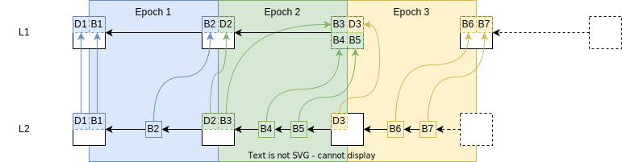
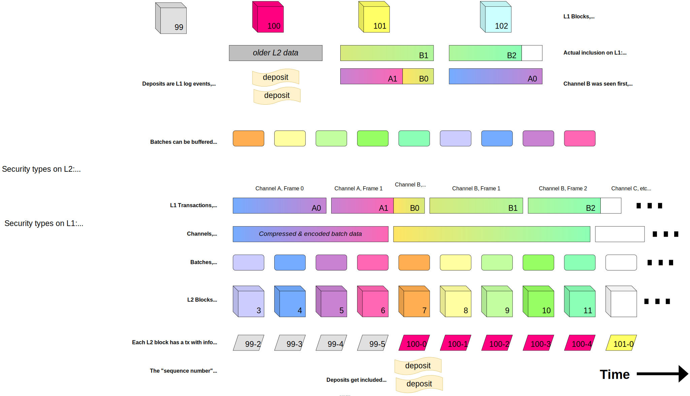

OP Stack Specs
This directory contains the plain english specs for Optimism, a minimal optimistic rollup protocol that maintains 1:1 compatibility with Ethereum.
Table of Contents
Specification Contents
- Introduction
- Overview
- Deposits
- Withdrawals
- Execution Engine
- L2 Output Root Proposals
- Rollup Node
- Rollup Node P2p
- L2 Chain Derivation
- Superchain Upgrades
- System Config
- Batch Submitter
- Guaranteed Gas Market
- Messengers
- Bridges
- Predeploys
- Glossary
Experimental
Specifications of new features in active development.
Design Goals
Our aim is to design a protocol specification that is:
- Fast: When users send transactions, they get reliable confirmations with low-latency. For example when swapping on Uniswap you should see that your transaction succeeds in less than 2 seconds.
- Scalable: It should be possible to handle an enormous number of transactions per second which will enable the system to charge low fees. V1.0 will enable Optimism to scale up to and even past the gas limit on L1. Later iterations should scale much further.
- Modular: Our designs will use modularity to reduce complexity and enable parallel contributions. Coming up with good conceptual frameworks & composable atoms of software enables us to build extremely complex software even when any one person cannot hold that much in their brain.
- Minimal: Rollups should be minimal to best take advantage of the battle-tested infrastructure (like Geth) that already runs Ethereum. An ideal optimistic rollup design should be representable as a diff against Ethereum client software.
- Developer Driven: Our designs will be developer driven to ensure we are actually building something that people want to use. We must constantly engage with the developers who will be using our software to avoid creating a system no one wants to use.
- Clear and Readable: The specs we write are written to be read. So tight feedback loop with the systems team consuming the spec is also key!
- Secure: This is self-evident. User’s assets are at stake. Every component of the system must be incredibly secure.
- Decentralizable: Optimism must be designed to avail itself of the security and censorship-resistant guarantees achieved by a decentralized system. Currently centralized components of the system should have a clear path towards decentralization. Already decentralized components of the system should be protected and preserved.
Introduction
Optimism is an EVM equivalent, optimistic rollup protocol designed to scale Ethereum while remaining maximally compatible with existing Ethereum infrastructure. This document provides an overview of the protocol to provide context for the rest of the specification.
Table of Contents
Foundations
What is Ethereum scalability?
Scaling Ethereum means increasing the number of useful transactions the Ethereum network can process. Ethereum's limited resources, specifically bandwidth, computation, and storage, constrain the number of transactions which can be processed on the network. Of the three resources, computation and storage are currently the most significant bottlenecks. These bottlenecks limit the supply of transactions, leading to extremely high fees. Scaling ethereum and reducing fees can be achieved by better utilizing bandwidth, computation and storage.
What is an Optimistic Rollup?
Optimistic rollup is a layer 2 scalability technique which increases the computation & storage capacity of Ethereum without sacrificing security or decentralization. Transaction data is submitted on-chain but executed off-chain. If there is an error in the off-chain execution, a fault proof can be submitted on-chain to correct the error and protect user funds. In the same way you don't go to court unless there is a dispute, you don't execute transactions on on-chain unless there is an error.
What is EVM Equivalence?
EVM Equivalence is complete compliance with the state transition function described in the Ethereum yellow paper, the formal definition of the protocol. By conforming to the Ethereum standard across EVM equivalent rollups, smart contract developers can write once and deploy anywhere.
🎶 All together now 🎶
Optimism is an EVM equivalent, optimistic rollup protocol designed to scale Ethereum.
Protocol Guarantees
In order to scale Ethereum without sacrificing security, we must preserve 3 critical properties of Ethereum layer 1: liveness, availability, and validity.
- Liveness
- Anyone must be able to extend the rollup chain by sending transactions at any time.
- There are two ways transactions can be sent to the rollup chain: 1) via the sequencer, and 2) directly on layer 1. The sequencer provides low latency & low cost transactions, while sending transactions directly to layer 1 provides censorship resistance.
- Availability
- Anyone must be able to download the rollup chain.
- All information required to derive the chain is embedded into layer 1 blocks. That way as long as the layer 1 chain is available, so is the rollup.
- Validity
- All transactions must be correctly executed and all withdrawals correctly processed.
- The rollup state and withdrawals are managed on an L1 contract called the
L2OutputOracle. This oracle is guaranteed to only finalize correct (ie. valid) rollup block hashes given a single honest verifier assumption. If there is ever an invalid block hash asserted on layer 1, an honest verifier will prove it is invalid and win a bond.
Footnote: There are two main ways to enforce validity of a rollup: fault proofs (optimistic rollup) and validity proofs (zkRollup). For the purposes of this spec we only focus on fault proofs but it is worth noting that validity proofs can also be plugged in once they have been made feasible.
Network Participants
There are three actors in Optimism: users, sequencers, and verifiers.

Users
At the heart of the network are users (us!). Users can:
- Deposit or withdraw arbitrary transactions on L2 by sending data to a contract on Ethereum mainnet.
- Use EVM smart contracts on layer 2 by sending transactions to the sequencers.
- View the status of transactions using block explorers provided by network verifiers.
Sequencers
The sequencer is the primary block producer. There may be one sequencer or many using a consensus protocol. For 1.0.0, there is just one sequencer (currently operated under the oversight of the Optimism Foundation). In general, specifications may use "the sequencer" to be a stand-in term for the consensus protocol operated by multiple sequencers.
The sequencer:
- Accepts user off-chain transactions
- Observes on-chain transactions (primarily, deposit events coming from L1)
- Consolidates both kinds of transactions into L2 blocks with a specific ordering.
- Propagates consolidated L2 blocks to L1, by submitting two things as calldata to L1:
- The pending off-chain transactions accepted in step 1.
- Sufficient information about the ordering of the on-chain transactions to successfully reconstruct the blocks from step 3., purely by watching L1.
The sequencer also provides access to block data as early as step 3., so that users may access real-time state in advance of L1 confirmation if they so choose.
Verifiers
Verifiers serve two purposes:
- Serving rollup data to users; and
- Verifying rollup integrity and disputing invalid assertions.
In order for the network to remain secure there must be at least one honest verifier who is able to verify the integrity of the rollup chain & serve blockchain data to users.
Key Interaction Diagrams
The following diagrams demonstrate how protocol components are utilized during key user interactions in order to provide context when diving into any particular component specification.
Depositing and Sending Transactions
Users will often begin their L2 journey by depositing ETH from L1. Once they have ETH to pay fees, they'll start sending transactions on L2. The following diagram demonstrates this interaction and all key Optimism components which are or should be utilized:

Links to components mentioned in this diagram:
Withdrawing
Just as important as depositing, it is critical that users can withdraw from the rollup. Withdrawals are initiated by normal transactions on L2, but then completed using a transaction on L1 after the dispute period has elapsed.

Links to components mentioned in this diagram:
Next Steps
This is a choose your own adventure. Are you interested in how a verifier works under the hood? Maybe you want to dive deep into the bit flippin' Fault Proof VM? All key components have been linked at least once in this doc, so you should now have the context you need to dive in deeper. The world is yours!
Optimism Overview
Table of Contents
This document is a high-level technical overview of the Optimism protocol. It aims to explain how the protocol works in an informal manner, and direct readers to other parts of the specification so that they may learn more.
This document assumes you've read the introduction.
Architecture Design Goals
- Execution-Level EVM Equivalence: The developer experience should be identical to L1 except where L2 introduces a
fundamental difference.
- No special compiler.
- No unexpected gas costs.
- Transaction traces work out-of-the-box.
- All existing Ethereum tooling works - all you have to do is change the chain ID.
- Maximal compatibility with ETH1 nodes: The implementation should minimize any differences with a vanilla Geth
node, and leverage as many existing L1 standards as possible.
- The execution engine/rollup node uses the ETH2 Engine API to build the canonical L2 chain.
- The execution engine leverages Geth's existing mempool and sync implementations, including snap sync.
- Minimize state and complexity:
- Whenever possible, services contributing to the rollup infrastructure are stateless.
- Stateful services can recover to full operation from a fresh DB using the peer-to-peer network and on-chain sync mechanisms.
- Running a replica is as simple as running a Geth node.
Components

L1 Components
-
OptimismPortal: A feed of L2 transactions which originated as smart contract calls in the L1 state.
- The
OptimismPortalcontract emitsTransactionDepositedevents, which the rollup driver reads in order to process deposits. - Deposits are guaranteed to be reflected in the L2 state within the sequencing window.
- Beware that transactions are deposited, not tokens. However deposited transactions are a key part of implementing token deposits (tokens are locked on L1, then minted on L2 via a deposited transaction).
- The
-
BatchInbox: An L1 address to which the Batch Submitter submits transaction batches.
- Transaction batches include L2 transaction calldata, timestamps, and ordering information.
- The BatchInbox is a regular EOA address. This lets us pass on gas cost savings by not executing any EVM code.
-
L2OutputOracle: A smart contract that stores L2 output roots for use with withdrawals and fault proofs.
L2 Components
- Rollup Node:
- A standalone, stateless binary.
- Receives L2 transactions from users.
- Syncs and verifies rollup data on L1.
- Applies rollup-specific block production rules to synthesize blocks from L1.
- Appends blocks to the L2 chain using the Engine API.
- Handles L1 reorgs.
- Distributes unsubmitted blocks to other rollup nodes.
- Execution Engine (EE):
- A vanilla Geth node with minor modifications to support Optimism.
- Maintains L2 state.
- Sync state to other L2 nodes for fast onboarding.
- Serves the Engine API to the rollup node.
- Batch Submitter
- A background process that submits transaction batches to the
BatchInboxaddress.
- A background process that submits transaction batches to the
- Output Submitter
- A background process that submits L2 output commitments to the
L2OutputOracle.
- A background process that submits L2 output commitments to the
Transaction/Block Propagation
Spec links:
Since the EE uses Geth under the hood, Optimism uses Geth's built-in peer-to-peer network and transaction pool to propagate transactions. The same network can also be used to propagate submitted blocks and support snap-sync.
Unsubmitted blocks, however, are propagated using a separate peer-to-peer network of Rollup Nodes. This is optional, however, and is provided as a convenience to lower latency for verifiers and their JSON-RPC clients.
The below diagram illustrates how the sequencer and verifiers fit together:

Key Interactions In Depth
Deposits
Spec links:
Optimism supports two types of deposits: user deposits, and L1 attributes deposits. To perform a user deposit, users
call the depositTransaction method on the OptimismPortal contract. This in turn emits TransactionDeposited events,
which the rollup node reads during block derivation.
L1 attributes deposits are used to register L1 block attributes (number, timestamp, etc.) on L2 via a call to the L1 Attributes Predeploy. They cannot be initiated by users, and are instead added to L2 blocks automatically by the rollup node.
Both deposit types are represented by a single custom EIP-2718 transaction type on L2.
Block Derivation
Overview
The rollup chain can be deterministically derived given an L1 Ethereum chain. The fact that the entire rollup chain can be derived based on L1 blocks is what makes Optimism a rollup. This process can be represented as:
derive_rollup_chain(l1_blockchain) -> rollup_blockchain
Optimism's block derivation function is designed such that it:
- Requires no state other than what is easily accessible using L1 and L2 execution engine APIs.
- Supports sequencers and sequencer consensus.
- Is resilient to sequencer censorship.
Epochs and the Sequencing Window
The rollup chain is subdivided into epochs. There is a 1:1 correspondence between L1 block numbers and epoch numbers.
For L1 block number n, there is a corresponding rollup epoch n which can only be derived after a sequencing window
worth of blocks has passed, i.e. after L1 block number n + SEQUENCING_WINDOW_SIZE is added to the L1 chain.
Each epoch contains at least one block. Every block in the epoch contains an L1 info transaction which contains
contextual information about L1 such as the block hash and timestamp. The first block in the epoch also contains all
deposits initiated via the OptimismPortal contract on L1. All L2 blocks can also contain sequenced transactions,
i.e. transactions submitted directly to the sequencer.
Whenever the sequencer creates a new L2 block for a given epoch, it must submit it to L1 as part of a batch, within
the epoch's sequencing window (i.e. the batch must land before L1 block n + SEQUENCING_WINDOW_SIZE). These batches are
(along with the TransactionDeposited L1 events) what allows the derivation of the L2 chain from the L1 chain.
The sequencer does not need for a L2 block to be batch-submitted to L1 in order to build on top of it. In fact, batches typically contain multiple L2 blocks worth of sequenced transactions. This is what enables fast transaction confirmations on the sequencer.
Since transaction batches for a given epoch can be submitted anywhere within the sequencing window, verifiers must search all blocks within the window for transaction batches. This protects against the uncertainty of transaction inclusion of L1. This uncertainty is also why we need the sequencing window in the first place: otherwise the sequencer could retroactively add blocks to an old epoch, and validators wouldn't know when they can finalize an epoch.
The sequencing window also prevents censorship by the sequencer: deposits made on a given L1 block will be included in
the L2 chain at worst after SEQUENCING_WINDOW_SIZE L1 blocks have passed.
The following diagram describes this relationship, and how L2 blocks are derived from L1 blocks (L1 info transactions have been elided):

Block Derivation Loop
A sub-component of the rollup node called the rollup driver is actually responsible for performing block derivation. The rollup driver is essentially an infinite loop that runs the block derivation function. For each epoch, the block derivation function performs the following steps:
- Downloads deposit and transaction batch data for each block in the sequencing window.
- Converts the deposit and transaction batch data into payload attributes for the Engine API.
- Submits the payload attributes to the Engine API, where they are converted into blocks and added to the canonical chain.
This process is then repeated with incrementing epochs until the tip of L1 is reached.
Engine API
The rollup driver doesn't actually create blocks. Instead, it directs the execution engine to do so via the Engine API. For each iteration of the block derivation loop described above, the rollup driver will craft a payload attributes object and send it to the execution engine. The execution engine will then convert the payload attributes object into a block, and add it to the chain. The basic sequence of the rollup driver is as follows:
- Call fork choice updated with the payload attributes object. We'll skip over the details of the
fork choice state parameter for now - just know that one of its fields is the L2 chain's
headBlockHash, and that it is set to the block hash of the tip of the L2 chain. The Engine API returns a payload ID. - Call get payload with the payload ID returned in step 1. The engine API returns a payload object that includes a block hash as one of its fields.
- Call new payload with the payload returned in step 2. (Ectone blocks, must use V3, pre-Ecotone blocks MUST use the V2 version)
- Call fork choice updated with the fork choice parameter's
headBlockHashset to the block hash returned in step 2. The tip of the L2 chain is now the block created in step 1.
The swimlane diagram below visualizes the process:

Standard Bridges
Table of Contents
Overview
The standard bridges are responsible for allowing cross domain ETH and ERC20 token transfers. They are built on top of the cross domain messenger contracts and give a standard interface for depositing tokens.
The bridge works for both L1 native tokens and L2 native tokens. The legacy API
is preserved to ensure that existing applications will not experience any
problems with the Bedrock StandardBridge contracts.
The L2StandardBridge is a predeploy contract located at
0x4200000000000000000000000000000000000010.
interface StandardBridge {
event ERC20BridgeFinalized(address indexed localToken, address indexed remoteToken, address indexed from, address to, uint256 amount, bytes extraData);
event ERC20BridgeInitiated(address indexed localToken, address indexed remoteToken, address indexed from, address to, uint256 amount, bytes extraData);
event ETHBridgeFinalized(address indexed from, address indexed to, uint256 amount, bytes extraData);
event ETHBridgeInitiated(address indexed from, address indexed to, uint256 amount, bytes extraData);
function bridgeERC20(address _localToken, address _remoteToken, uint256 _amount, uint32 _minGasLimit, bytes memory _extraData) external;
function bridgeERC20To(address _localToken, address _remoteToken, address _to, uint256 _amount, uint32 _minGasLimit, bytes memory _extraData) external;
function bridgeETH(uint32 _minGasLimit, bytes memory _extraData) payable external;
function bridgeETHTo(address _to, uint32 _minGasLimit, bytes memory _extraData) payable external;
function deposits(address, address) view external returns (uint256);
function finalizeBridgeERC20(address _localToken, address _remoteToken, address _from, address _to, uint256 _amount, bytes memory _extraData) external;
function finalizeBridgeETH(address _from, address _to, uint256 _amount, bytes memory _extraData) payable external;
function messenger() view external returns (address);
function OTHER_BRIDGE() view external returns (address);
}
Token Depositing
The bridgeERC20 function is used to send a token from one domain to another
domain. An OptimismMintableERC20 token contract must exist on the remote
domain to be able to deposit tokens to that domain. One of these tokens can be
deployed using the OptimismMintableERC20Factory contract.
Upgradability
Both the L1 and L2 standard bridges should be behind upgradable proxies.
Cross Domain Messengers
Table of Contents
Overview
The cross domain messengers are responsible for providing a higher level API for developers who are interested in sending cross domain messages. They allow for the ability to replay cross domain messages and sit directly on top of the lower level system contracts responsible for cross domain messaging on L1 and L2.
The CrossDomainMessenger is extended to create both an
L1CrossDomainMessenger as well as a L2CrossDomainMessenger.
These contracts are then extended with their legacy APIs to provide backwards
compatibility for applications that integrated before the Bedrock system
upgrade.
The L2CrossDomainMessenger is a predeploy contract located at
0x4200000000000000000000000000000000000007.
The base CrossDomainMessenger interface is:
interface CrossDomainMessenger {
event FailedRelayedMessage(bytes32 indexed msgHash);
event RelayedMessage(bytes32 indexed msgHash);
event SentMessage(address indexed target, address sender, bytes message, uint256 messageNonce, uint256 gasLimit);
event SentMessageExtension1(address indexed sender, uint256 value);
function MESSAGE_VERSION() external view returns (uint16);
function MIN_GAS_CALLDATA_OVERHEAD() external view returns (uint64);
function MIN_GAS_CONSTANT_OVERHEAD() external view returns (uint64);
function MIN_GAS_DYNAMIC_OVERHEAD_DENOMINATOR() external view returns (uint64);
function MIN_GAS_DYNAMIC_OVERHEAD_NUMERATOR() external view returns (uint64);
function OTHER_MESSENGER() external view returns (address);
function baseGas(bytes memory _message, uint32 _minGasLimit) external pure returns (uint64);
function failedMessages(bytes32) external view returns (bool);
function messageNonce() external view returns (uint256);
function relayMessage(
uint256 _nonce,
address _sender,
address _target,
uint256 _value,
uint256 _minGasLimit,
bytes memory _message
) external payable;
function sendMessage(address _target, bytes memory _message, uint32 _minGasLimit) external payable;
function successfulMessages(bytes32) external view returns (bool);
function xDomainMessageSender() external view returns (address);
}
Message Passing
The sendMessage function is used to send a cross domain message. To trigger
the execution on the other side, the relayMessage function is called.
Successful messages have their hash stored in the successfulMessages mapping
while unsuccessful messages have their hash stored in the failedMessages
mapping.
The user experience when sending from L1 to L2 is a bit different than when
sending a transaction from L2 to L1. When going into L1 from L2, the user does
not need to call relayMessage on L2 themselves. The user pays for L2 gas on L1
and the transaction is automatically pulled into L2 where it is executed on L2.
When going from L2 into L1, the user proves their withdrawal on OptimismPortal,
then waits for the finalization window to pass, and then finalizes the withdrawal
on the OptimismPortal, which calls relayMessage on the
L1CrossDomainMessenger to finalize the withdrawal.
Upgradability
The L1 and L2 cross domain messengers should be deployed behind upgradable proxies. This will allow for updating the message version.
Message Versioning
Messages are versioned based on the first 2 bytes of their nonce. Depending on
the version, messages can have a different serialization and hashing scheme.
The first two bytes of the nonce are reserved for version metadata because
a version field was not originally included in the messages themselves, but
a uint256 nonce is so large that we can very easily pack additional data
into that field.
Message Version 0
abi.encodeWithSignature(
"relayMessage(address,address,bytes,uint256)",
_target,
_sender,
_message,
_messageNonce
);
Message Version 1
abi.encodeWithSignature(
"relayMessage(uint256,address,address,uint256,uint256,bytes)",
_nonce,
_sender,
_target,
_value,
_gasLimit,
_data
);
Backwards Compatibility Notes
An older version of the messenger contracts had the concept of blocked messages
in a blockedMessages mapping. This functionality was removed from the
messengers because a smart attacker could get around any message blocking
attempts. It also saves gas on finalizing withdrawals.
The concept of a "relay id" and the relayedMessages mapping was removed.
It was built as a way to be able to fund third parties who relayed messages
on the behalf of users, but it was improperly implemented as it was impossible
to know if the relayed message actually succeeded.
Deposits
Table of Contents
- Overview
- The Deposited Transaction Type
- Deposit Receipt
- L1 Attributes Deposited Transaction
- Special Accounts on L2
- User-Deposited Transactions
Overview
Deposited transactions, also known as deposits are transactions which are initiated on L1, and executed on L2. This document outlines a new transaction type for deposits. It also describes how deposits are initiated on L1, along with the authorization and validation conditions on L2.
Vocabulary note: deposited transaction refers specifically to an L2 transaction, while deposit can refer to the transaction at various stages (for instance when it is deposited on L1).
The Deposited Transaction Type
Deposited transactions have the following notable distinctions from existing transaction types:
- They are derived from Layer 1 blocks, and must be included as part of the protocol.
- They do not include signature validation (see User-Deposited Transactions for the rationale).
- They buy their L2 gas on L1 and, as such, the L2 gas is not refundable.
We define a new EIP-2718 compatible transaction type with the prefix 0x7E to represent a deposit transaction.
A deposit has the following fields (rlp encoded in the order they appear here):
bytes32 sourceHash: the source-hash, uniquely identifies the origin of the deposit.address from: The address of the sender account.address to: The address of the recipient account, or the null (zero-length) address if the deposited transaction is a contract creation.uint256 mint: The ETH value to mint on L2.uint256 value: The ETH value to send to the recipient account.uint64 gas: The gas limit for the L2 transaction.bool isSystemTx: If true, the transaction does not interact with the L2 block gas pool.- Note: boolean is disabled (enforced to be
false) starting from the Regolith upgrade.
- Note: boolean is disabled (enforced to be
bytes data: The calldata.
In contrast to EIP-155 transactions, this transaction type:
- Does not include a
nonce, since it is identified by thesourceHash. API responses still include anonceattribute:- Before Regolith: the
nonceis always0 - With Regolith: the
nonceis set to thedepositNonceattribute of the corresponding transaction receipt.
- Before Regolith: the
- Does not include signature information, and makes the
fromaddress explicit. API responses contain zeroed signaturev,r,svalues for backwards compatibility. - Includes new
sourceHash,from,mint, andisSystemTxattributes. API responses contain these as additional fields.
We select 0x7E because transaction type identifiers are currently allowed to go up to 0x7F.
Picking a high identifier minimizes the risk that the identifier will be used be claimed by another
transaction type on the L1 chain in the future. We don't pick 0x7F itself in case it becomes used
for a variable-length encoding scheme.
Source hash computation
The sourceHash of a deposit transaction is computed based on the origin:
- User-deposited:
keccak256(bytes32(uint256(0)), keccak256(l1BlockHash, bytes32(uint256(l1LogIndex)))). Where thel1BlockHash, andl1LogIndexall refer to the inclusion of the deposit log event on L1.l1LogIndexis the index of the deposit event log in the combined list of log events of the block. - L1 attributes deposited:
keccak256(bytes32(uint256(1)), keccak256(l1BlockHash, bytes32(uint256(seqNumber)))). Wherel1BlockHashrefers to the L1 block hash of which the info attributes are deposited. AndseqNumber = l2BlockNum - l2EpochStartBlockNum, wherel2BlockNumis the L2 block number of the inclusion of the deposit tx in L2, andl2EpochStartBlockNumis the L2 block number of the first L2 block in the epoch. - Upgrade-deposited:
keccak256(bytes32(uint256(2)), keccak256(intent)). Whereintentis a UTF-8 byte string, identifying the upgrade intent.
Without a sourceHash in a deposit, two different deposited transactions could have the same exact hash.
The outer keccak256 hashes the actual uniquely identifying information with a domain,
to avoid collisions between different types of sources.
We do not use the sender's nonce to ensure uniqueness because this would require an extra L2 EVM state read from the execution engine during block-derivation.
Kinds of Deposited Transactions
Although we define only one new transaction type, we can distinguish between two kinds of deposited transactions, based on their positioning in the L2 block:
- The first transaction MUST be a L1 attributes deposited transaction, followed by
- an array of zero-or-more user-deposited transactions
submitted to the deposit feed contract on L1 (called
OptimismPortal). User-deposited transactions are only present in the first block of a L2 epoch.
We only define a single new transaction type in order to minimize modifications to L1 client software, and complexity in general.
Validation and Authorization of Deposited Transactions
As noted above, the deposited transaction type does not include a signature for validation. Rather,
authorization is handled by the L2 chain derivation process, which when correctly
applied will only derive transactions with a from address attested to by the logs of the L1
deposit contract.
Execution
In order to execute a deposited transaction:
First, the balance of the from account MUST be increased by the amount of mint.
This is unconditional, and does not revert on deposit failure.
Then, the execution environment for a deposited transaction is initialized based on the transaction's attributes, in exactly the same manner as it would be for an EIP-155 transaction.
The deposit transaction is processed exactly like a type-3 (EIP-1559) transaction, with the exception of:
- No fee fields are verified: the deposit does not have any, as it pays for gas on L1.
- No
noncefield is verified: the deposit does not have any, it's uniquely identified by itssourceHash. - No access-list is processed: the deposit has no access-list, and it is thus processed as if the access-list is empty.
- No check if
fromis an Externally Owner Account (EOA): the deposit is ensured not to be an EOA through L1 address masking, this may change in future L1 contract-deployments to e.g. enable an account-abstraction like mechanism. - Before the Regolith upgrade:
- The execution output states a non-standard gas usage:
- If
isSystemTxis false: execution output states it usesgasLimitgas. - If
isSystemTxis true: execution output states it uses0gas.
- If
- The execution output states a non-standard gas usage:
- No gas is refunded as ETH. (either by not refunding or utilizing the fact the gas-price of the deposit is
0) - No transaction priority fee is charged. No payment is made to the block fee-recipient.
- No L1-cost fee is charged, as deposits are derived from L1 and do not have to be submitted as data back to it.
- No base fee is charged. The total base fee accounting does not change.
Note that this includes contract-deployment behavior like with regular transactions, and gas metering is the same (with the exception of fee related changes above), including metering of intrinsic gas.
Any non-EVM state-transition error emitted by the EVM execution is processed in a special way:
- It is transformed into an EVM-error:
i.e. the deposit will always be included, but its receipt will indicate a failure
if it runs into a non-EVM state-transition error, e.g. failure to transfer the specified
valueamount of ETH due to insufficient account-balance. - The world state is rolled back to the start of the EVM processing, after the minting part of the deposit.
- The
nonceoffromin the world state is incremented by 1, making the error equivalent to a native EVM failure. Note that a previousnonceincrement may have happened during EVM processing, but this would be rolled back first.
Finally, after the above processing, the execution post-processing runs the same:
i.e. the gas pool and receipt are processed identical to a regular transaction.
Starting with the Regolith upgrade however, the receipt of deposit transactions is extended with an additional
depositNonce value, storing the nonce value of the from sender as registered before the EVM processing.
Note that the gas used as stated by the execution output is subtracted from the gas pool, but this execution output value has special edge cases before the Regolith upgrade.
Note for application developers: because CALLER and ORIGIN are set to from, the
semantics of using the tx.origin == msg.sender check will not work to determine whether
or not a caller is an EOA during a deposit transaction. Instead, the check could only be useful for
identifying the first call in the L2 deposit transaction. However this check does still satisfy
the common case in which developers are using this check to ensure that the CALLER is unable to
execute code before and after the call.
Nonce Handling
Despite the lack of signature validation, we still increment the nonce of the from account when a
deposit transaction is executed. In the context of a deposit-only roll up, this is not necessary
for transaction ordering or replay prevention, however it maintains consistency with the use of
nonces during contract creation. It may also simplify integration with downstream
tooling (such as wallets and block explorers).
Deposit Receipt
Transaction receipts use standard typing as per EIP-2718.
The Deposit transaction receipt type is equal to a regular receipt,
but extended with an optional depositNonce field.
The RLP-encoded consensus-enforced fields are:
postStateOrStatus(standard): this contains the transaction status, see EIP-658.cumulativeGasUsed(standard): gas used in the block thus far, including this transaction.- The actual gas used is derived from the difference in
CumulativeGasUsedwith the previous transaction. - Starting with Regolith, this accounts for the actual gas usage by the deposit, like regular transactions.
- The actual gas used is derived from the difference in
bloom(standard): bloom filter of the transaction logs.logs(standard): log events emitted by the EVM processing.depositNonce(unique extension): Optional field. The deposit transaction persists the nonce used during execution.depositNonceVersion(unique extension): Optional field. The value must be 1 if the field is present- Before Canyon, these
depositNonce&depositNonceVersionfields must always be omitted. - With Canyon, these
depositNonce&depositNonceVersionfields must always be included.
- Before Canyon, these
Starting with Regolith, the receipt API responses utilize the receipt changes for more accurate response data:
- The
depositNonceis included in the receipt JSON data in API responses - For contract-deployments (when
to == null), thedepositNoncehelps derive the correctcontractAddressmeta-data, instead of assuming the nonce was zero. - The
cumulativeGasUsedaccounts for the actual gas usage, as metered in the EVM processing.
L1 Attributes Deposited Transaction
An L1 attributes deposited transaction is a deposit transaction sent to the L1 attributes predeployed contract.
This transaction MUST have the following values:
fromis0xdeaddeaddeaddeaddeaddeaddeaddeaddead0001(the address of the L1 Attributes depositor account)tois0x4200000000000000000000000000000000000015(the address of the L1 attributes predeployed contract).mintis0valueis0gasLimitis set to 150,000,000 prior to the Regolith upgrade, and 1,000,000 after.isSystemTxis set totrueprior to the Regolith upgrade, andfalseafter.datais an encoded call to the L1 attributes predeployed contract that depends on the upgrades that are active (see below).
This system-initiated transaction for L1 attributes is not charged any ETH for its allocated
gasLimit, as it is considered part of state-transition processing.
L1 Attributes Deposited Transaction Calldata
L1 Attributes - Bedrock, Canyon, Delta
The data field of the L1 attributes deposited transaction is an ABI encoded call to the
setL1BlockValues() function with correct values associated with the corresponding L1 block
(cf. reference implementation).
L1 Attributes - Ecotone
On the Ecotone activation block, and if Ecotone is not activated at Genesis,
the L1 Attributes Transaction includes a call to setL1BlockValues()
because the L1 Attributes transaction precedes the Ecotone Upgrade Transactions,
meaning that setL1BlockValuesEcotone is not guaranteed to exist yet.
Every subsequent L1 Attributes transaction should include a call to the setL1BlockValuesEcotone() function.
The input args are no longer ABI encoded function parameters,
but are instead packed into 5 32-byte aligned segments (starting after the function selector).
Each unsigned integer argument is encoded as big-endian using a number of bytes corresponding to the underlying type.
The overall calldata layout is as follows:
| Input arg | Type | Calldata bytes | Segment |
|---|---|---|---|
| {0x440a5e20} | 0-3 | n/a | |
| baseFeeScalar | uint32 | 4-7 | 1 |
| blobBaseFeeScalar | uint32 | 8-11 | |
| sequenceNumber | uint64 | 12-19 | |
| l1BlockTimestamp | uint64 | 20-27 | |
| l1BlockNumber | uint64 | 28-35 | |
| basefee | uint256 | 36-67 | 2 |
| blobBaseFee | uint256 | 68-99 | 3 |
| l1BlockHash | bytes32 | 100-131 | 4 |
| batcherHash | bytes32 | 132-163 | 5 |
Total calldata length MUST be exactly 164 bytes, implying the sixth and final segment is only partially filled. This helps to slow database growth as every L2 block includes a L1 Attributes deposit transaction.
In the first L2 block after the Ecotone activation block, the Ecotone L1 attributes are first used.
The pre-Ecotone values are migrated over 1:1. Blocks after the Ecotone activation block contain all pre-Ecotone values 1:1, and also set the following new attributes:
- The
baseFeeScalaris set to the pre-Ecotonescalarvalue. - The
blobBaseFeeScalaris set to0. - The pre-Ecotone
overheadattribute is dropped. - The
blobBaseFeeis set to the L1 blob base fee of the L1 origin block. Or1if the L1 block does not support blobs. The1value is derived from the EIP-4844MIN_BLOB_GASPRICE.
Special Accounts on L2
The L1 attributes deposit transaction involves two special purpose accounts:
- The L1 attributes depositor account
- The L1 attributes predeployed contract
L1 Attributes Depositor Account
The depositor account is an EOA with no known private key. It has the address
0xdeaddeaddeaddeaddeaddeaddeaddeaddead0001. Its value is returned by the CALLER and ORIGIN
opcodes during execution of the L1 attributes deposited transaction.
L1 Attributes Predeployed Contract
A predeployed contract on L2 at address 0x4200000000000000000000000000000000000015, which holds
certain block variables from the corresponding L1 block in storage, so that they may be accessed
during the execution of the subsequent deposited transactions.
The predeploy stores the following values:
- L1 block attributes:
number(uint64)timestamp(uint64)basefee(uint256)hash(bytes32)
sequenceNumber(uint64): This equals the L2 block number relative to the start of the epoch, i.e. the L2 block distance to the L2 block height that the L1 attributes last changed, and reset to 0 at the start of a new epoch.- System configurables tied to the L1 block, see System configuration specification:
batcherHash(bytes32): A versioned commitment to the batch-submitter(s) currently operating.overhead(uint256): The L1 fee overhead to apply to L1 cost computation of transactions in this L2 block. Theoverheadvalue is dropped as it is no longer used in the Ecotone L1 fee formula.scalar(uint256): The L1 fee scalar to apply to L1 cost computation of transactions in this L2 block.
- With the Ecotone upgrade, the predeploy additionally stores:
blobBaseFee(uint256)baseFeeScalar(uint32): system configurable to scale thebasefeein the Ecotone l1 cost computationblobBasefeeScalar(uint32): system configurable to scale theblobBaseFeein the Ecotone l1 cost computation
The overhead and scalar values can continue to be accessed after the Ecotone activation block,
but no longer have any effect on system operation.
The contract implements an authorization scheme, such that it only accepts state-changing calls from the depositor account.
The contract has the following solidity interface, and can be interacted with according to the contract ABI specification.
L1 Attributes Predeployed Contract: Reference Implementation
A reference implementation of the L1 Attributes predeploy contract can be found in L1Block.sol.
After running pnpm build in the packages/contracts-bedrock directory, the bytecode to add to
the genesis file will be located in the deployedBytecode field of the build artifacts file at
/packages/contracts-bedrock/forge-artifacts/L1Block.sol/L1Block.json.
Ecotone L1Block upgrade
The L1 Attributes Predeployed contract, L1Block.sol, is upgraded as part of the Ecotone upgrade.
The version is incremented to 1.2.0, one new storage slot is introduced, and one existing slot
begins to store additional data:
blobBaseFee(uint256): The L1 blob base fee.blobBaseFeeScalar(uint32): The scalar value applied to the L1 blob base fee portion of the L1 cost.baseFeeScalar(uint32): The scalar value applied to the L1 base fee portion of the L1 cost.
The function called by the L1 attributes transaction depends on the network upgrade:
- Before the Ecotone activation:
setL1BlockValuesis called, following the pre-Ecotone L1 attributes rules.
- At the Ecotone activation block:
setL1BlockValuesfunction MUST be called, except if activated at genesis. The contract is upgraded later in this block, to supportsetL1BlockValuesEcotone.
- After the Ecotone activation:
setL1BlockValuesfunction is deprecated and MUST never be called.setL1BlockValuesEcotoneMUST be called with the new Ecotone attributes.
setL1BlockValuesEcotone uses a tightly packed encoding for its parameters, which is described in
L1 Attributes Deposited Transaction Calldata.
User-Deposited Transactions
User-deposited transactions are deposited transactions
generated by the L2 Chain Derivation process. The content of each user-deposited
transaction are determined by the corresponding TransactionDeposited event emitted by the
deposit contract on L1.
fromis unchanged from the emitted value (though it may have been transformed to an alias inOptimismPortal, the deposit feed contract).tois any 20-byte address (including the zero address)- In case of a contract creation (cf.
isCreation), this address is set tonull.
- In case of a contract creation (cf.
mintis set to the emitted value.valueis set to the emitted value.gaslimitis unchanged from the emitted value. It must be at least 21000.isCreationis set totrueif the transaction is a contract creation,falseotherwise.datais unchanged from the emitted value. Depending on the value ofisCreationit is handled as either calldata or contract initialization code.isSystemTxis set by the rollup node for certain transactions that have unmetered execution. It isfalsefor user deposited transactions
Deposit Contract
The deposit contract is deployed to L1. Deposited transactions are derived from the values in
the TransactionDeposited event(s) emitted by the deposit contract.
The deposit contract is responsible for maintaining the guaranteed gas market, charging deposits for gas to be used on L2, and ensuring that the total amount of guaranteed gas in a single L1 block does not exceed the L2 block gas limit.
The deposit contract handles two special cases:
- A contract creation deposit, which is indicated by setting the
isCreationflag totrue. In the event that thetoaddress is non-zero, the contract will revert. - A call from a contract account, in which case the
fromvalue is transformed to its L2 alias.
Address Aliasing
If the caller is a contract, the address will be transformed by adding
0x1111000000000000000000000000000000001111 to it. The math is unchecked and done on a
Solidity uint160 so the value will overflow. This prevents attacks in which a
contract on L1 has the same address as a contract on L2 but doesn't have the same code. We can safely ignore this
for EOAs because they're guaranteed to have the same "code" (i.e. no code at all). This also makes
it possible for users to interact with contracts on L2 even when the Sequencer is down.
Deposit Contract Implementation: Optimism Portal
A reference implementation of the deposit contract can be found in OptimismPortal.sol.
Withdrawals
Table of Contents
- Overview
- Withdrawal Flow
- The L2ToL1MessagePasser Contract
- The Optimism Portal Contract
- Withdrawal Verification and Finalization
- Security Considerations
Overview
Withdrawals are cross domain transactions which are initiated on L2, and finalized by a transaction executed on L1. Notably, withdrawals may be used by an L2 account to call an L1 contract, or to transfer ETH from an L2 account to an L1 account.
Vocabulary note: withdrawal can refer to the transaction at various stages of the process, but we introduce more specific terms to differentiate:
- A withdrawal initiating transaction refers specifically to a transaction on L2 sent to the Withdrawals predeploy.
- A withdrawal proving transaction refers specifically to an L1 transaction which proves the withdrawal is correct (that it has been included in a merkle tree whose root is available on L1).
- A withdrawal finalizing transaction refers specifically to an L1 transaction which finalizes and relays the withdrawal.
Withdrawals are initiated on L2 via a call to the Message Passer predeploy contract, which records the important
properties of the message in its storage.
Withdrawals are proven on L1 via a call to the OptimismPortal, which proves the inclusion of this withdrawal message.
Withdrawals are finalized on L1 via a call to the OptimismPortal contract,
which verifies that the fault challenge period has passed since the withdrawal message has been proved.
In this way, withdrawals are different from deposits which make use of a special transaction type in the execution engine client. Rather, withdrawals transaction must use smart contracts on L1 for finalization.
Withdrawal Flow
We first describe the end to end flow of initiating and finalizing a withdrawal:
On L2
An L2 account sends a withdrawal message (and possibly also ETH) to the L2ToL1MessagePasser predeploy contract.
This is a very simple contract that stores the hash of the withdrawal data.
On L1
- A relayer submits a withdrawal proving transaction with the required inputs
to the
OptimismPortalcontract. The relayer is not necessarily the same entity which initiated the withdrawal on L2. These inputs include the withdrawal transaction data, inclusion proofs, and a block number. The block number must be one for which an L2 output root exists, which commits to the withdrawal as registered on L2. - The
OptimismPortalcontract retrieves the output root for the given block number from theL2OutputOracle'sgetL2Output()function, and performs the remainder of the verification process internally. - If proof verification fails, the call reverts. Otherwise the hash is recorded to prevent it from being re-proven. Note that the withdrawal can be proven more than once if the corresponding output root changes.
- After the withdrawal is proven, it enters a 7 day challenge period, allowing time for other network participants to challenge the integrity of the corresponding output root.
- Once the challenge period has passed, a relayer submits a withdrawal finalizing transaction to the
OptimismPortalcontract. The relayer doesn't need to be the same entity that initiated the withdrawal on L2. - The
OptimismPortalcontract receives the withdrawal transaction data and verifies that the withdrawal has both been proven and passed the challenge period. - If the requirements are not met, the call reverts. Otherwise the call is forwarded, and the hash is recorded to prevent it from being replayed.
The L2ToL1MessagePasser Contract
A withdrawal is initiated by calling the L2ToL1MessagePasser contract's initiateWithdrawal function.
The L2ToL1MessagePasser is a simple predeploy contract at 0x4200000000000000000000000000000000000016
which stores messages to be withdrawn.
interface L2ToL1MessagePasser {
event MessagePassed(
uint256 indexed nonce, // this is a global nonce value for all withdrawal messages
address indexed sender,
address indexed target,
uint256 value,
uint256 gasLimit,
bytes data,
bytes32 withdrawalHash
);
event WithdrawerBalanceBurnt(uint256 indexed amount);
function burn() external;
function initiateWithdrawal(address _target, uint256 _gasLimit, bytes memory _data) payable external;
function messageNonce() public view returns (uint256);
function sentMessages(bytes32) view external returns (bool);
}
The MessagePassed event includes all of the data that is hashed and
stored in the sentMessages mapping, as well as the hash itself.
Addresses are not Aliased on Withdrawals
When a contract makes a deposit, the sender's address is aliased. The same is not true of withdrawals, which do not modify the sender's address. The difference is that:
- on L2, the deposit sender's address is returned by the
CALLERopcode, meaning a contract cannot easily tell if the call originated on L1 or L2, whereas - on L1, the withdrawal sender's address is accessed by calling the
l2Sender()function on theOptimismPortalcontract.
Calling l2Sender() removes any ambiguity about which domain the call originated from. Still, developers will need to
recognize that having the same address does not imply that a contract on L2 will behave the same as a contract on L1.
The Optimism Portal Contract
The Optimism Portal serves as both the entry and exit point to the Optimism L2. It is a contract which inherits from the OptimismPortal contract, and in addition provides the following interface for withdrawals:
interface OptimismPortal {
event WithdrawalFinalized(bytes32 indexed withdrawalHash, bool success);
function l2Sender() returns(address) external;
function proveWithdrawalTransaction(
Types.WithdrawalTransaction memory _tx,
uint256 _l2OutputIndex,
Types.OutputRootProof calldata _outputRootProof,
bytes[] calldata _withdrawalProof
) external;
function finalizeWithdrawalTransaction(
Types.WithdrawalTransaction memory _tx
) external;
}
Withdrawal Verification and Finalization
The following inputs are required to prove and finalize a withdrawal:
- Withdrawal transaction data:
nonce: Nonce for the provided message.sender: Message sender address on L2.target: Target address on L1.value: ETH to send to the target.data: Data to send to the target.gasLimit: Gas to be forwarded to the target.
- Proof and verification data:
l2OutputIndex: The index in the L2 outputs where the applicable output root may be found.outputRootProof: Fourbytes32values which are used to derive the output root.withdrawalProof: An inclusion proof for the given withdrawal in the L2ToL1MessagePasser contract.
These inputs must satisfy the following conditions:
- The
l2OutputIndexmust be the index in the L2 outputs that contains the applicable output root. L2OutputOracle.getL2Output(l2OutputIndex)returns a non-zeroOutputProposal.- The keccak256 hash of the
outputRootProofvalues is equal to theoutputRoot. - The
withdrawalProofis a valid inclusion proof demonstrating that a hash of the Withdrawal transaction data is contained in the storage of the L2ToL1MessagePasser contract on L2.
Security Considerations
Key Properties of Withdrawal Verification
-
It should not be possible to 'double spend' a withdrawal, ie. to relay a withdrawal on L1 which does not correspond to a message initiated on L2. For reference, see this writeup of a vulnerability of this type found on Polygon.
-
For each withdrawal initiated on L2 (i.e. with a unique
messageNonce()), the following properties must hold:- It should only be possible to prove the withdrawal once, unless the outputRoot for the withdrawal has changed.
- It should only be possible to finalize the withdrawal once.
- It should not be possible to relay the message with any of its fields modified, ie.
- Modifying the
senderfield would enable a 'spoofing' attack. - Modifying the
target,data, orvaluefields would enable an attacker to dangerously change the intended outcome of the withdrawal. - Modifying the
gasLimitcould make the cost of relaying too high, or allow the relayer to cause execution to fail (out of gas) in thetarget.
- Modifying the
Handling Successfully Verified Messages That Fail When Relayed
If the execution of the relayed call fails in the target contract, it is unfortunately not possible to determine
whether or not it was 'supposed' to fail, and whether or not it should be 'replayable'. For this reason, and to
minimize complexity, we have not provided any replay functionality, this may be implemented in external utility
contracts if desired.
OptimismPortal can send arbitrary messages on L1
The L2ToL1MessagePasser contract's initiateWithdrawal function accepts a _target address and _data bytes,
which is passed to a CALL opcode on L1 when finalizeWithdrawalTransaction is called after the challenge
period. This means that, by design, the OptimismPortal contract can be used to send arbitrary transactions on
the L1, with the OptimismPortal as the msg.sender.
This means users of the OptimismPortal contract should be careful what permissions they grant to the portal.
For example, any ERC20 tokens mistakenly sent to the OptimismPortal contract are essentially lost, as they can
be claimed by anybody that pre-approves transfers of this token out of the portal, using the L2 to initiate the
approval and the L1 to prove and finalize the approval (after the challenge period).
Guaranteed Gas Fee Market
Table of Contents
- Overview
- Gas Stipend
- Default Values
- Limiting Guaranteed Gas
- Rationale for burning L1 Gas
- On Preventing Griefing Attacks
Overview
Deposited transactions are transactions on L2 that are initiated on L1. The gas that they use on L2 is bought on L1 via a gas burn (or a direct payment in the future). We maintain a fee market and hard cap on the amount of gas provided to all deposits in a single L1 block.
The gas provided to deposited transactions is sometimes called "guaranteed gas". The gas provided to deposited transactions is unique in the regard that it is not refundable. It cannot be refunded as it is sometimes paid for with a gas burn and there may not be any ETH left to refund.
The guaranteed gas is composed of a gas stipend, and of any guaranteed gas the user would like to purchase (on L1) on top of that.
Guaranteed gas on L2 is bought in the following manner. An L2 gas price is calculated via an
EIP-1559-style algorithm. The total amount of ETH required to buy that gas is then calculated as
(guaranteed gas * L2 deposit base fee). The contract then accepts that amount of ETH (in a future
upgrade) or (only method right now), burns an amount of L1 gas that corresponds to the L2 cost (L2 cost / L1 base fee). The L2 gas price for guaranteed gas is not synchronized with the base fee on
L2 and will likely be different.
Gas Stipend
To offset the gas spent on the deposit event, we credit gas spent * L1 base fee ETH to the cost
of the L2 gas, where gas spent is the amount of L1 gas spent processing the deposit. If the ETH
value of this credit is greater than the ETH value of the requested guaranteed gas (requested guaranteed gas * L2 gas price), no L1 gas is burnt.
Default Values
| Variable | Value |
|---|---|
MAX_RESOURCE_LIMIT | 20,000,000 |
ELASTICITY_MULTIPLIER | 10 |
BASE_FEE_MAX_CHANGE_DENOMINATOR | 8 |
MINIMUM_BASE_FEE | 1 gwei |
MAXIMUM_BASE_FEE | type(uint128).max |
SYSTEM_TX_MAX_GAS | 1,000,000 |
TARGET_RESOURCE_LIMIT | MAX_RESOURCE_LIMIT / ELASTICITY_MULTIPLIER |
Limiting Guaranteed Gas
The total amount of guaranteed gas that can be bought in a single L1 block must be limited to prevent a denial of service attack against L2 as well as ensure the total amount of guaranteed gas stays below the L2 block gas limit.
We set a guaranteed gas limit of MAX_RESOURCE_LIMIT gas per L1 block and a target of
MAX_RESOURCE_LIMIT / ELASTICITY_MULTIPLIER gas per L1 block. These numbers enabled
occasional large transactions while staying within our target and maximum gas usage on L2.
Because the amount of guaranteed L2 gas that can be purchased in a single block is now limited, we implement an EIP-1559-style fee market to reduce congestion on deposits. By setting the limit at a multiple of the target, we enable deposits to temporarily use more L2 gas at a greater cost.
# Pseudocode to update the L2 deposit base fee and cap the amount of guaranteed gas
# bought in a block. Calling code must handle the gas burn and validity checks on
# the ability of the account to afford this gas.
# prev_base fee is a u128, prev_bought_gas and prev_num are u64s
prev_base_fee, prev_bought_gas, prev_num = <values from previous update>
now_num = block.number
# Clamp the full base fee to a specific range. The minimum value in the range should be around 100-1000
# to enable faster responses in the base fee. This replaces the `max` mechanism in the ethereum 1559
# implementation (it also serves to enable the base fee to increase if it is very small).
def clamp(v: i256, min: u128, max: u128) -> u128:
if v < i256(min):
return min
elif v > i256(max):
return max
else:
return u128(v)
# If this is a new block, update the base fee and reset the total gas
# If not, just update the total gas
if prev_num == now_num:
now_base_fee = prev_base_fee
now_bought_gas = prev_bought_gas + requested_gas
elif prev_num != now_num:
# Width extension and conversion to signed integer math
gas_used_delta = int128(prev_bought_gas) - int128(TARGET_RESOURCE_LIMIT)
# Use truncating (round to 0) division - solidity's default.
# Sign extend gas_used_delta & prev_base_fee to 256 bits to avoid overflows here.
base_fee_per_gas_delta = prev_base_fee * gas_used_delta / TARGET_RESOURCE_LIMIT / BASE_FEE_MAX_CHANGE_DENOMINATOR
now_base_fee_wide = prev_base_fee + base_fee_per_gas_delta
now_base_fee = clamp(now_base_fee_wide, min=MINIMUM_BASE_FEE, max=UINT_128_MAX_VALUE)
now_bought_gas = requested_gas
# If we skipped multiple blocks between the previous block and now update the base fee again.
# This is not exactly the same as iterating the above function, but quite close for reasonable
# gas target values. It is also constant time wrt the number of missed blocks which is important
# for keeping gas usage stable.
if prev_num + 1 < now_num:
n = now_num - prev_num - 1
# Apply 7/8 reduction to prev_base_fee for the n empty blocks in a row.
now_base_fee_wide = now_base_fee * pow(1-(1/BASE_FEE_MAX_CHANGE_DENOMINATOR), n)
now_base_fee = clamp(now_base_fee_wide, min=MINIMUM_BASE_FEE, max=type(uint128).max)
require(now_bought_gas < MAX_RESOURCE_LIMIT)
store_values(now_base_fee, now_bought_gas, now_num)
Rationale for burning L1 Gas
There must be a sybil resistance mechanism for usage of the network. If it is very cheap to get guaranteed gas on L2, then it would be possible to spam the network. Burning a dynamic amount of gas on L1 acts as a sybil resistance mechanism as it becomes more expensive with more demand.
If we collect ETH directly to pay for L2 gas, every (indirect) caller of the deposit function will need to be marked with the payable selector. This won't be possible for many existing projects. Unfortunately this is quite wasteful. As such, we will provide two options to buy L2 gas:
- Burn L1 Gas
- Send ETH to the Optimism Portal (Not yet supported)
The payable version (Option 2) will likely have discount applied to it (or conversely, #1 has a premium applied to it).
For the initial release of bedrock, only #1 is supported.
On Preventing Griefing Attacks
The cost of purchasing all of the deposit gas in every block must be expensive enough to prevent attackers from griefing all deposits to the network. An attacker would observe a deposit in the mempool and frontrun it with a deposit that purchases enough gas such that the other deposit reverts. The smaller the max resource limit is, the easier this attack is to pull off. This attack is mitigated by having a large resource limit as well as a large elasticity multiplier. This means that the target resource usage is kept small, giving a lot of room for the deposit base fee to rise when the max resource limit is being purchased.
This attack should be too expensive to pull off in practice, but if an extremely wealthy adversary does decide to grief network deposits for an extended period of time, efforts will be placed to ensure that deposits are able to be processed on the network.
L2 Output Root Proposals Specification
Table of Contents
- Overview
- Proposing L2 Output Commitments
- L2 Output Commitment Construction
- L2 Output Oracle Smart Contract
- Security Considerations
Overview
After processing one or more blocks the outputs will need to be synchronized with the settlement layer (L1) for trustless execution of L2-to-L1 messaging, such as withdrawals. These output proposals act as the bridge's view into the L2 state. Actors called "Proposers" submit the output roots to the settlement layer (L1) and can be contested with a fault proof, with a bond at stake if the proof is wrong. The op-proposer in one such implementation of a proposer.
Note: Fault proofs on Optimism are not fully specified at this time. Although fault proof construction and verification is implemented in Cannon, the fault proof game specification and integration of a output-root challenger into the rollup-node are part of later specification milestones.
Proposing L2 Output Commitments
The proposer's role is to construct and submit output roots, which are commitments to the L2's state,
to the L2OutputOracle contract on L1 (the settlement layer). To do this, the proposer periodically
queries the rollup node for the latest output root derived from the latest
finalized L1 block. It then takes the output root and
submits it to the L2OutputOracle contract on the settlement layer (L1).
L2OutputOracle v1.0.0
The submission of output proposals is permissioned to a single account. It is expected that this account will continue to submit output proposals over time to ensure that user withdrawals do not halt.
The L2 output proposer is expected to submit output roots on a deterministic
interval based on the configured SUBMISSION_INTERVAL in the L2OutputOracle. The larger
the SUBMISSION_INTERVAL, the less often L1 transactions need to be sent to the L2OutputOracle
contract, but L2 users will need to wait a bit longer for an output root to be included in L1 (the settlement layer)
that includes their intention to withdraw from the system.
The honest op-proposer algorithm assumes a connection to the L2OutputOracle contract to know
the L2 block number that corresponds to the next output proposal that must be submitted. It also
assumes a connection to an op-node to be able to query the optimism_syncStatus RPC endpoint.
import time
while True:
next_checkpoint_block = L2OutputOracle.nextBlockNumber()
rollup_status = op_node_client.sync_status()
if rollup_status.finalized_l2.number >= next_checkpoint_block:
output = op_node_client.output_at_block(next_checkpoint_block)
tx = send_transaction(output)
time.sleep(poll_interval)
A CHALLENGER account can delete multiple output roots by calling the deleteL2Outputs() function
and specifying the index of the first output to delete, this will also delete all subsequent outputs.
L2 Output Commitment Construction
The output_root is a 32 byte string, which is derived based on the a versioned scheme:
output_root = keccak256(version_byte || payload)
where:
-
version_byte(bytes32) a simple version string which increments anytime the construction of the output root is changed. -
payload(bytes) is a byte string of arbitrary length.
In the initial version of the output commitment construction, the version is bytes32(0), and the payload is defined
as:
payload = state_root || withdrawal_storage_root || latest_block_hash
where:
-
The
latest_block_hash(bytes32) is the block hash for the latest L2 block. -
The
state_root(bytes32) is the Merkle-Patricia-Trie (MPT) root of all execution-layer accounts. This value is frequently used and thus elevated closer to the L2 output root, which removes the need to prove its inclusion in the pre-image of thelatest_block_hash. This reduces the merkle proof depth and cost of accessing the L2 state root on L1. -
The
withdrawal_storage_root(bytes32) elevates the Merkle-Patricia-Trie (MPT) root of the Message Passer contract storage. Instead of making an MPT proof for a withdrawal against the state root (proving first the storage root of the L2toL1MessagePasser against the state root, then the withdrawal against that storage root), we can prove against the L2toL1MessagePasser's storage root directly, thus reducing the verification cost of withdrawals on L1.
L2 Output Oracle Smart Contract
L2 blocks are produced at a constant rate of L2_BLOCK_TIME (2 seconds).
A new L2 output MUST be appended to the chain once per SUBMISSION_INTERVAL which is based on a number of blocks.
The exact number is yet to be determined, and will depend on the design of the fault proving game.
The L2 Output Oracle contract implements the following interface:
/**
* @notice The number of the first L2 block recorded in this contract.
*/
uint256 public startingBlockNumber;
/**
* @notice The timestamp of the first L2 block recorded in this contract.
*/
uint256 public startingTimestamp;
/**
* @notice Accepts an L2 outputRoot and the timestamp of the corresponding L2 block. The
* timestamp must be equal to the current value returned by `nextTimestamp()` in order to be
* accepted.
* This function may only be called by the Proposer.
*
* @param _l2Output The L2 output of the checkpoint block.
* @param _l2BlockNumber The L2 block number that resulted in _l2Output.
* @param _l1Blockhash A block hash which must be included in the current chain.
* @param _l1BlockNumber The block number with the specified block hash.
*/
function proposeL2Output(
bytes32 _l2Output,
uint256 _l2BlockNumber,
bytes32 _l1Blockhash,
uint256 _l1BlockNumber
)
/**
* @notice Deletes all output proposals after and including the proposal that corresponds to
* the given output index. Only the challenger address can delete outputs.
*
* @param _l2OutputIndex Index of the first L2 output to be deleted. All outputs after this
* output will also be deleted.
*/
function deleteL2Outputs(uint256 _l2OutputIndex) external
/**
* @notice Computes the block number of the next L2 block that needs to be checkpointed.
*/
function nextBlockNumber() public view returns (uint256)
Configuration
The startingBlockNumber must be at least the number of the first Bedrock block.
The startingTimestamp MUST be the same as the timestamp of the start block.
The first outputRoot proposed will thus be at height startingBlockNumber + SUBMISSION_INTERVAL
Security Considerations
L1 Reorgs
If the L1 has a reorg after an output has been generated and submitted, the L2 state and correct output may change leading to a faulty proposal. This is mitigated against by allowing the proposer to submit an L1 block number and hash to the Output Oracle when appending a new output; in the event of a reorg, the block hash will not match that of the block with that number and the call will revert.
L2 Execution Engine
Table of Contents
- 1559 Parameters
- Deposited transaction processing
- Fees
- Engine API
- Networking
- Sync
- Ecotone: disable Blob-transactions
- Ecotone: Beacon Block Root
This document outlines the modifications, configuration and usage of a L1 execution engine for L2.
1559 Parameters
The execution engine must be able to take a per chain configuration which specifies the EIP-1559 Denominator
and EIP-1559 elasticity. After Canyon it should also take a new value EIP1559DenominatorCanyon and use that as
the denominator in the 1559 formula rather than the prior denominator.
The formula for EIP-1559 is not otherwise modified.
Deposited transaction processing
The Engine interfaces abstract away transaction types with EIP-2718.
To support rollup functionality, processing of a new Deposit TransactionType
is implemented by the engine, see the deposits specification.
This type of transaction can mint L2 ETH, run EVM, and introduce L1 information to enshrined contracts in the execution state.
Deposited transaction boundaries
Transactions cannot be blindly trusted, trust is established through authentication. Unlike other transaction types deposits are not authenticated by a signature: the rollup node authenticates them, outside of the engine.
To process deposited transactions safely, the deposits MUST be authenticated first:
- Ingest directly through trusted Engine API
- Part of sync towards a trusted block hash (trusted through previous Engine API instruction)
Deposited transactions MUST never be consumed from the transaction pool. The transaction pool can be disabled in a deposits-only rollup
Fees
Sequenced transactions (i.e. not applicable to deposits) are charged with 3 types of fees: priority fees, base fees, and L1-cost fees.
Fee Vaults
The three types of fees are collected in 3 distinct L2 fee-vault deployments for accounting purposes: fee payments are not registered as internal EVM calls, and thus distinguished better this way.
These are hardcoded addresses, pointing at pre-deployed proxy contracts.
The proxies are backed by vault contract deployments, based on FeeVault, to route vault funds to L1 securely.
| Vault Name | Predeploy |
|---|---|
| Sequencer Fee Vault | SequencerFeeVault |
| Base Fee Vault | BaseFeeVault |
| L1 Fee Vault | L1FeeVault |
Priority fees (Sequencer Fee Vault)
Priority fees follow the eip-1559 specification, and are collected by the fee-recipient of the L2 block. The block fee-recipient (a.k.a. coinbase address) is set to the Sequencer Fee Vault address.
Base fees (Base Fee Vault)
Base fees largely follow the eip-1559 specification, with the exception that base fees are not burned, but add up to the Base Fee Vault ETH account balance.
L1-Cost fees (L1 Fee Vault)
The protocol funds batch-submission of sequenced L2 transactions by charging L2 users an additional fee based on the estimated batch-submission costs. This fee is charged from the L2 transaction-sender ETH balance, and collected into the L1 Fee Vault.
The exact L1 cost function to determine the L1-cost fee component of a L2 transaction depends on the upgrades that are active.
Pre-Ecotone
Before Ecotone activation, L1 cost is calculated as:
(rollupDataGas + l1FeeOverhead) * l1BaseFee * l1FeeScalar / 1e6 (big-int computation, result
in Wei and uint256 range)
Where:
rollupDataGasis determined from the full encoded transaction (standard EIP-2718 transaction encoding, including signature fields):- Before Regolith fork:
rollupDataGas = zeroes * 4 + (ones + 68) * 16- The addition of
68non-zero bytes is a remnant of a pre-Bedrock L1-cost accounting function, which accounted for the worst-case non-zero bytes addition to complement unsigned transactions, unlike Bedrock.
- The addition of
- With Regolith fork:
rollupDataGas = zeroes * 4 + ones * 16
- Before Regolith fork:
l1FeeOverheadis the Gas Price Oracleoverheadvalue.l1FeeScalaris the Gas Price Oraclescalarvalue.l1BaseFeeis the L1 base fee of the latest L1 origin registered in the L2 chain.
Note that the rollupDataGas uses the same byte cost accounting as defined in eip-2028,
except the full L2 transaction now counts towards the bytes charged in the L1 calldata.
This behavior matches pre-Bedrock L1-cost estimation of L2 transactions.
Compression, batching, and intrinsic gas costs of the batch transactions are accounted for by the protocol
with the Gas Price Oracle overhead and scalar parameters.
The Gas Price Oracle l1FeeOverhead and l1FeeScalar, as well as the l1BaseFee of the L1 origin,
can be accessed in two interchangeable ways:
- read from the deposited L1 attributes (
l1FeeOverhead,l1FeeScalar,basefee) of the current L2 block - read from the L1 Block Info contract (
0x4200000000000000000000000000000000000015)- using the respective solidity
uint256-getter functions (l1FeeOverhead,l1FeeScalar,basefee) - using direct storage-reads:
- L1 basefee as big-endian
uint256in slot1 - Overhead as big-endian
uint256in slot5 - Scalar as big-endian
uint256in slot6
- L1 basefee as big-endian
- using the respective solidity
Ecotone L1-Cost fee changes (EIP-4844 DA)
Ecotone allows posting batches via Blobs which are subject to a new fee market. To account for this feature, L1 cost is computed as:
(zeroes*4 + ones*16) * (16*l1BaseFee*l1BaseFeeScalar + l1BlobBaseFee*l1BlobBaseFeeScalar) / 16e6
Where:
-
the computation is an unlimited precision integer computation, with the result in Wei and having
uint256range. -
zeoroes and ones are the count of zero and non-zero bytes respectively in the full encoded signed transaction.
-
l1BaseFeeis the L1 base fee of the latest L1 origin registered in the L2 chain. -
l1BlobBaseFeeis the blob gas price, computed as described in EIP-4844 from the header of the latest registered L1 origin block.
Conceptually what the above function captures is the formula below, where compressedTxSize = (zeroes*4 + ones*16) / 16 can be thought of as a rough approximation of how many bytes the
transaction occupies in a compressed batch.
(compressedTxSize) * (16*l1BaseFee*lBaseFeeScalar + l1BlobBaseFee*l1BlobBaseFeeScalar) / 1e6
The precise cost function used by Ecotone at the top of this section preserves precision under integer arithmetic by postponing the inner division by 16 until the very end.
The two base fee values and their respective scalars can be accessed in two interchangeable ways:
- read from the deposited L1 attributes (
l1BaseFeeScalar,l1BlobBaseFeeScalar,basefee,blobBaseFee) of the current L2 block - read from the L1 Block Info contract (
0x4200000000000000000000000000000000000015)- using the respective solidity getter functions
- using direct storage-reads:
- basefee
uint256in slot1 - blobBaseFee
uint256in slot7 - l1BaseFeeScalar big-endian
uint32slot3at offset12 - l1BlobBaseFeeScalar big-endian
uint32in slot3at offset8
- basefee
Engine API
engine_forkchoiceUpdatedV2
This updates which L2 blocks the engine considers to be canonical (forkchoiceState argument),
and optionally initiates block production (payloadAttributes argument).
Within the rollup, the types of forkchoice updates translate as:
headBlockHash: block hash of the head of the canonical chain. Labeled"unsafe"in user JSON-RPC. Nodes may apply L2 blocks out of band ahead of time, and then reorg when L1 data conflicts.safeBlockHash: block hash of the canonical chain, derived from L1 data, unlikely to reorg.finalizedBlockHash: irreversible block hash, matches lower boundary of the dispute period.
To support rollup functionality, one backwards-compatible change is introduced
to engine_forkchoiceUpdatedV2: the extended PayloadAttributesV2
Extended PayloadAttributesV2
PayloadAttributesV2 is extended to:
PayloadAttributesV2: {
timestamp: QUANTITY
random: DATA (32 bytes)
suggestedFeeRecipient: DATA (20 bytes)
withdrawals: array of WithdrawalV1
transactions: array of DATA
noTxPool: bool
gasLimit: QUANTITY or null
}
The type notation used here refers to the HEX value encoding used by the Ethereum JSON-RPC API
specification, as this structure will need to be sent over JSON-RPC. array refers
to a JSON array.
Each item of the transactions array is a byte list encoding a transaction: TransactionType || TransactionPayload or LegacyTransaction, as defined in EIP-2718.
This is equivalent to the transactions field in ExecutionPayloadV2
The transactions field is optional:
- If empty or missing: no changes to engine behavior. The sequencers will (if enabled) build a block by consuming transactions from the transaction pool.
- If present and non-empty: the payload MUST be produced starting with this exact list of transactions. The rollup driver determines the transaction list based on deterministic L1 inputs.
The noTxPool is optional as well, and extends the transactions meaning:
- If
false, the execution engine is free to pack additional transactions from external sources like the tx pool into the payload, after any of thetransactions. This is the default behavior a L1 node implements. - If
true, the execution engine must not change anything about the given list oftransactions.
If the transactions field is present, the engine must execute the transactions in order and return STATUS_INVALID
if there is an error processing the transactions. It must return STATUS_VALID if all of the transactions could
be executed without error. Note: The state transition rules have been modified such that deposits will never fail
so if engine_forkchoiceUpdatedV2 returns STATUS_INVALID it is because a batched transaction is invalid.
The gasLimit is optional w.r.t. compatibility with L1, but required when used as rollup.
This field overrides the gas limit used during block-building.
If not specified as rollup, a STATUS_INVALID is returned.
engine_forkchoiceUpdatedV3
See engine_forkchoiceUpdatedV2 for a description of the forkchoice updated method.
engine_forkchoiceUpdatedV3 must only be called with Ecotone payload.
To support rollup functionality, one backwards-compatible change is introduced
to engine_forkchoiceUpdatedV3: the extended PayloadAttributesV3
Extended PayloadAttributesV3
PayloadAttributesV3 is extended to:
PayloadAttributesV3: {
timestamp: QUANTITY
random: DATA (32 bytes)
suggestedFeeRecipient: DATA (20 bytes)
withdrawals: array of WithdrawalV1
parentBeaconBlockRoot: DATA (32 bytes)
transactions: array of DATA
noTxPool: bool
gasLimit: QUANTITY or null
}
The requirements of this object are the same as extended PayloadAttributesV2 with
the addition of parentBeaconBlockRoot which is the parent beacon block root from the L1 origin block of the L2 block.
Starting at Ecotone, the parentBeaconBlockRoot must be set to the L1 origin parentBeaconBlockRoot,
or a zero bytes32 if the Dencun functionality with parentBeaconBlockRoot is not active on L1.
engine_newPayloadV2
No modifications to engine_newPayloadV2.
Applies a L2 block to the engine state.
engine_newPayloadV3
engine_newPayloadV3 applies an Ecotone L2 block to the engine state. There are no
modifications to this API.
engine_newPayloadV3 must only be called with Ecotone payload.
The additional parameters should be set as follows:
expectedBlobVersionedHashesMUST be an empty array.parentBeaconBlockRootMUST be the parent beacon block root from the L1 origin block of the L2 block.
engine_getPayloadV2
No modifications to engine_getPayloadV2.
Retrieves a payload by ID, prepared by engine_forkchoiceUpdatedV2 when called with payloadAttributes.
engine_getPayloadV3
engine_getPayloadV3 retrieves a payload by ID, prepared by engine_forkchoiceUpdatedV3
when called with payloadAttributes.
engine_getPayloadV3 must only be called with Ecotone payload.
Extended Response
The response is extended to:
{
executionPayload: ExecutionPayload
blockValue: QUANTITY
blobsBundle: BlobsBundle
shouldOverrideBuilder: BOOLEAN
parentBeaconBlockRoot: DATA (32 bytes)
}
In Ecotone it MUST be set to the parentBeaconBlockRoot from the L1 Origin block of the L2 block.
engine_signalSuperchainV1
Optional extension to the Engine API. Signals superchain information to the Engine: V1 signals which protocol version is recommended and required.
Types:
SuperchainSignal: {
recommended: ProtocolVersion;
required: ProtocolVersion;
}
ProtocolVersion: encoded for RPC as defined in
Protocol Version format specification.
Parameters:
signal:SuperchainSignal, the signaled superchain information.
Returns:
ProtocolVersion: the latest supported OP-Stack protocol version of the execution engine.
The execution engine SHOULD warn the user when the recommended version is newer than the current version supported by the execution engine.
The execution engine SHOULD take safety precautions if it does not meet the required protocol version. This may include halting the engine, with consent of the execution engine operator.
Networking
The execution engine can acquire all data through the rollup node, as derived from L1: P2P networking is strictly optional.
However, to not bottleneck on L1 data retrieval speed, the P2P network functionality SHOULD be enabled, serving:
- Peer discovery (Disc v5)
eth/66:- Transaction pool (consumed by sequencer nodes)
- State sync (happy-path for fast trustless db replication)
- Historical block header and body retrieval
- New blocks are acquired through the consensus layer instead (rollup node)
No modifications to L1 network functionality are required, except configuration:
networkID: Distinguishes the L2 network from L1 and testnets. Equal to thechainIDof the rollup network.- Activate Merge fork: Enables Engine API and disables propagation of blocks, as block headers cannot be authenticated without consensus layer.
- Bootnode list: DiscV5 is a shared network, bootstrap is faster through connecting with L2 nodes first.
Sync
The execution engine can operate sync in different ways:
- Happy-path: rollup node informs engine of the desired chain head as determined by L1, completes through engine P2P.
- Worst-case: rollup node detects stalled engine, completes sync purely from L1 data, no peers required.
The happy-path is more suitable to bring new nodes online quickly, as the engine implementation can sync state faster through methods like snap-sync.
Happy-path sync
- The rollup node informs the engine of the L2 chain head, unconditionally (part of regular node operation):
- Bedrock / Canyon / Delta Payloads
engine_newPayloadV2is called with latest L2 block received from P2P.engine_forkchoiceUpdatedV2is called with the currentunsafe/safe/finalizedL2 block hashes.
- Ecotone Payloads
engine_newPayloadV3is called with latest L2 block received from P2P.engine_forkchoiceUpdatedV3is called with the currentunsafe/safe/finalizedL2 block hashes.
- Bedrock / Canyon / Delta Payloads
- The engine requests headers from peers, in reverse till the parent hash matches the local chain
- The engine catches up: a) A form of state sync is activated towards the finalized or head block hash b) A form of block sync pulls block bodies and processes towards head block hash
The exact P2P based sync is out of scope for the L2 specification: the operation within the engine is the exact same as with L1 (although with an EVM that supports deposits).
Worst-case sync
- Engine is out of sync, not peered and/or stalled due other reasons.
- The rollup node maintains latest head from engine (poll
eth_getBlockByNumberand/or maintain a header subscription) - The rollup node activates sync if the engine is out of sync but not syncing through P2P (
eth_syncing) - The rollup node inserts blocks, derived from L1, one by one, potentially adapting to L1 reorg(s), as outlined in the rollup node spec.
Ecotone: disable Blob-transactions
EIP-4844 introduces Blob transactions: featuring all the functionality of an EIP-1559 transaction, plus a list of "blobs": "Binary Large Object", i.e. a dedicated data type for serving Data-Availability as base-layer.
With the Ecotone upgrade, all Cancun L1 execution features are enabled, with EIP-4844 as exception: as a L2, the OP-Stack does not serve blobs, and thus disables this new transaction type.
EIP-4844 is disabled as following:
- Transaction network-layer announcements, announcing blob-type transactions, are ignored.
- Transactions of the blob-type, through the RPC or otherwise, are not allowed into the transaction pool.
- Block-building code does not select EIP-4844 transactions.
- An L2 block state-transition with EIP-4844 transactions is invalid.
The BLOBBASEFEE opcode is present but its semantics are altered because there are no blobs processed by L2. The opcode will always push a value of 1 onto the stack.
Ecotone: Beacon Block Root
EIP-4788 introduces a "beacon block root" into the execution-layer block-header and EVM. This block root is an SSZ hash-tree-root of the consensus-layer contents of the previous consensus block.
With the adoption of EIP-4399 in the Bedrock upgrade the OP-Stack already includes the PREVRANDAO of L1.
And thus with EIP-4788 the L1 beacon block root is made available.
For the Ecotone upgrade, this entails that:
- The
parent_beacon_block_rootof the L1 origin is now embedded in the L2 block header. - The "Beacon roots contract" is deployed at Ecotone upgrade-time, or embedded at genesis if activated at genesis.
- The block state-transition process now includes the same special beacon-block-root EVM processing as L1 ethereum.
Rollup Node Specification
Table of Contents
Overview
The rollup node is the component responsible for deriving the L2 chain from L1 blocks (and their associated receipts).
The part of the rollup node that derives the L2 chain is called the rollup driver. This document is currently only concerned with the specification of the rollup driver.
Driver
The task of the driver in the rollup node is to manage the derivation process:
- Keep track of L1 head block
- Keep track of the L2 chain sync progress
- Iterate over the derivation steps as new inputs become available
Derivation
This process happens in three steps:
- Select inputs from the L1 chain, on top of the last L2 block: a list of blocks, with transactions and associated data and receipts.
- Read L1 information, deposits, and sequencing batches in order to generate payload attributes (essentially a block without output properties).
- Pass the payload attributes to the execution engine, so that the L2 block (including output block properties) may be computed.
While this process is conceptually a pure function from the L1 chain to the L2 chain, it is in practice incremental. The L2 chain is extended whenever new L1 blocks are added to the L1 chain. Similarly, the L2 chain re-organizes whenever the L1 chain re-organizes.
For a complete specification of the L2 block derivation, refer to the L2 block derivation document.
L2 Output RPC method
The Rollup node has its own RPC method, optimism_outputAtBlock which returns a 32
byte hash corresponding to the L2 output root.
Structures
These define the types used by rollup node API methods. The types defined here are extended from the engine API specs.
BlockID
hash:DATA, 32 Bytesnumber:QUANTITY, 64 Bits
L1BlockRef
hash:DATA, 32 Bytesnumber:QUANTITY, 64 BitsparentHash:DATA, 32 Bytestimestamp:QUANTITY, 64 Bits
L2BlockRef
hash:DATA, 32 Bytesnumber:QUANTITY, 64 BitsparentHash:DATA, 32 Bytestimestamp:QUANTITY, 64 Bitsl1origin:BlockIDsequenceNumber:QUANTITY, 64 Bits - distance to first block of epoch
SyncStatus
Represents a snapshot of the rollup driver.
current_l1:Object- instance ofL1BlockRef.current_l1_finalized:Object- instance ofL1BlockRef.head_l1:Object- instance ofL1BlockRef.safe_l1:Object- instance ofL1BlockRef.finalized_l1:Object- instance ofL1BlockRef.unsafe_l2:Object- instance ofL2BlockRef.safe_l2:Object- instance ofL2BlockRef.finalized_l2:Object- instance ofL2BlockRef.pending_safe_l2:Object- instance ofL2BlockRef.queued_unsafe_l2:Object- instance ofL2BlockRef.
Output Method API
The input and return types here are as defined by the engine API specs.
- method:
optimism_outputAtBlock - params:
blockNumber:QUANTITY, 64 bits - L2 integer block number.
- returns:
version:DATA, 32 Bytes - the output root version number, beginning with 0.outputRoot:DATA, 32 Bytes - the output root.blockRef:Object- instance ofL2BlockRef.withdrawalStorageRoot: 32 bytes - storage root of theL2toL1MessagePassercontract.stateRoot:DATA: 32 bytes - the state root.syncStatus:Object- instance ofSyncStatus.
Protocol Version tracking
The rollup-node should monitor the recommended and required protocol version by monitoring the Protocol Version contract on L1, as specified in the Superchain Version Signaling specifications.
This can be implemented through polling in the Driver loop.
After polling the Protocol Version, the rollup node SHOULD communicate it with the execution-engine through an
engine_signalSuperchainV1 call.
The rollup node SHOULD warn the user when the recommended version is newer than the current version supported by the rollup node.
The rollup node SHOULD take safety precautions if it does not meet the required protocol version. This may include halting the engine, with consent of the rollup node operator.
Rollup-node P2P interface
Table of Contents
Overview
The rollup node has an optional peer-to-peer (P2P) network service to improve the latency between the view of sequencers and the rest of the network by bypassing the L1 in the happy case, without relying on a single centralized endpoint.
This also enables faster historical sync to be bootstrapped by providing block headers to sync towards, and only having to compare the L2 chain inputs to the L1 data as compared to processing everything one block at a time.
The rollup node will always prioritize L1 and reorganize to match the canonical chain. The L2 data retrieved via the P2P interface is strictly a speculative extension, also known as the "unsafe" chain, to improve the happy case performance.
This also means that P2P behavior is a soft-rule: nodes keep each other in check with scoring and eventual banning of malicious peers by identity or IP. Any behavior on the P2P layer does not affect the rollup security, at worst nodes rely on higher-latency data from L1 to serve.
In summary, the P2P stack looks like:
- Discovery to find peers: Discv5
- Connections, peering, transport security, multiplexing, gossip: LibP2P
- Application-layer publishing and validation of gossiped messages like L2 blocks.
This document only specifies the composition and configuration of these network libraries. These components have their own standards, implementations in Go/Rust/Java/Nim/JS/more, and are adopted by several other blockchains, most notably the L1 consensus layer (Eth2).
P2P configuration
Identification
Nodes have a separate network- and consensus-identity.
The network identity is a secp256k1 key, used for both discovery and active LibP2P connections.
Common representations of network identity:
PeerID: a LibP2P specific ID derived from the pubkey (through protobuf encoding, typing and hashing)NodeID: a Discv5 specific ID derived from the pubkey (through hashing, used in the DHT)Multi-address: an unsigned address, containing: IP, TCP port, PeerIDENR: a signed record used for discovery, containing: IP, TCP port, UDP port, signature (pubkey can be derived) and L2 network identification. Generally encoded in base64.
Discv5
Structure
The Ethereum Node Record (ENR) for an Optimism rollup node must contain the following values, identified by unique keys:
- An IPv4 address (
ipfield) and/or IPv6 address (ip6field). - A TCP port (
tcpfield) representing the local libp2p listening port. - A UDP port (
udpfield) representing the local discv5 listening port. - An OpStack (
opstackfield) L2 network identifier
The opstack value is encoded as a single RLP bytes value, the concatenation of:
- chain ID (
unsigned varint) - fork ID (
unsigned varint)
Note that DiscV5 is a shared DHT (Distributed Hash Table): the L1 consensus and execution nodes, as well as testnet nodes, and even external IOT nodes, all communicate records in this large common DHT. This makes it more difficult to censor the discovery of node records.
The discovery process in Optimism is a pipeline of node records:
- Fill the table with
FINDNODESif necessary (Performed by Discv5 library) - Pull additional records with searches to random Node IDs if necessary
(e.g. iterate
RandomNodes()in Go implementation) - Pull records from the DiscV5 module when looking for peers
- Check if the record contains the
opstackentry, verify it matches the chain ID and current or future fork number - If not already connected, and not recently disconnected or put on deny-list, attempt to dial.
LibP2P
Transport
TCP transport. Additional transports are supported by LibP2P, but not required.
Dialing
Nodes should be publicly dialable, not rely on relay extensions, and able to dial both IPv4 and IPv6.
NAT
The listening endpoint must be publicly facing, but may be configured behind a NAT. LibP2P will use PMP / UPNP based techniques to track the external IP of the node. It is recommended to disable the above if the external IP is static and configured manually.
Peer management
The default is to maintain a peer count with a tide-system based on active peer count:
- At "low tide" the node starts to actively search for additional peer connections.
- At "high tide" the node starts to prune active connections, except those that are marked as trusted or have a grace period.
Peers will have a grace period for a configurable amount of time after joining. In an emergency, when memory runs low, the node should start pruning more aggressively.
Peer records can be persisted to disk to quickly reconnect with known peers after restarting the rollup node.
The discovery process feeds the peerstore with peer records to connect to, tagged with a time-to-live (TTL). The current P2P processes do not require selective topic-specific peer connections, other than filtering for the basic network participation requirement.
Peers may be banned if their performance score is too low, or if an objectively malicious action was detected.
Banned peers will be persisted to the same data-store as the peerstore records.
TODO: the connection gater does currently not gate by IP address on the dial Accept-callback.
Transport security
Libp2p-noise, XX handshake, with the secp256k1 P2P identity, as popularized in Eth2.
The TLS option is available as well, but noise should be prioritized in negotiation.
Protocol negotiation
Multistream-select 1.0 (/multistream/1.0.0) is an interactive protocol
used to negotiate sub-protocols supported in LibP2P peers. Multistream-select 2.0 may be used in the future.
Identify
LibP2P offers a minimal identification module to share client version and programming language. This is optional and can be disabled for enhanced privacy. It also includes the same protocol negotiation information, which can speed up initial connections.
Ping
LibP2P includes a simple ping protocol to track latency between connections. This should be enabled to help provide insight into the network health.
Multiplexing
For async communication over different channels over the same connection, multiplexing is used.
mplex (/mplex/6.7.0) is required, and yamux (/yamux/1.0.0) is recommended but optional
GossipSub
GossipSub 1.1 (/meshsub/1.1.0, i.e. with peer-scoring extension) is a pubsub protocol for mesh-networks,
deployed on L1 consensus (Eth2) and other protocols such as Filecoin, offering lots of customization options.
Content-based message identification
Messages are deduplicated, and filtered through application-layer signature verification.
Thus origin-stamping is disabled and published messages must only contain application data,
enforced through a StrictNoSign Signature Policy
This provides greater privacy, and allows sequencers (consensus identity) to maintain multiple network identities for redundancy.
Message compression and limits
The application contents are compressed with snappy single-block-compression (as opposed to frame-compression), and constrained to 10 MiB.
Message ID computation
Same as L1, with recognition of compression:
- If
message.datahas a valid snappy decompression, setmessage-idto the first 20 bytes of theSHA256hash of the concatenation ofMESSAGE_DOMAIN_VALID_SNAPPYwith the snappy decompressed message data, i.e.SHA256(MESSAGE_DOMAIN_VALID_SNAPPY + snappy_decompress(message.data))[:20]. - Otherwise, set
message-idto the first 20 bytes of theSHA256hash of the concatenation ofMESSAGE_DOMAIN_INVALID_SNAPPYwith the raw message data, i.e.SHA256(MESSAGE_DOMAIN_INVALID_SNAPPY + message.data)[:20].
Heartbeat and parameters
GossipSub parameters:
D(topic stable mesh target count): 8D_low(topic stable mesh low watermark): 6D_high(topic stable mesh high watermark): 12D_lazy(gossip target): 6heartbeat_interval(interval of heartbeat, in seconds): 0.5fanout_ttl(ttl for fanout maps for topics we are not subscribed to but have published to, in seconds): 24mcache_len(number of windows to retain full messages in cache forIWANTresponses): 12mcache_gossip(number of windows to gossip about): 3seen_ttl(number of heartbeat intervals to retain message IDs): 130 (= 65 seconds)
Notable differences from L1 consensus (Eth2):
seen_ttldoes not need to cover a full L1 epoch (6.4 minutes), but rather just a small window covering latest blocksfanout_ttl: adjusted to lower thanseen_ttlmcache_len: a larger number of heartbeats can be retained since the gossip is much less noisy.heartbeat_interval: faster interval to reduce latency, bandwidth should still be reasonable since there are far fewer messages to gossip about each interval than on L1 which uses an interval of 0.7 seconds.
Topic configuration
Topics have string identifiers and are communicated with messages and subscriptions.
/optimism/chain_id/hardfork_version/Name
chain_id: replace with decimal representation of chain IDhardfork_version: replace with decimal representation of hardfork, starting at0Name: topic application-name
Note that the topic encoding depends on the topic, unlike L1, since there are less topics, and all are snappy-compressed.
Topic validation
To ensure only valid messages are relayed, and malicious peers get scored based on application behavior, an extended validator checks the message before it is relayed or processed. The extended validator emits one of the following validation signals:
ACCEPTvalid, relayed to other peers and passed to local topic subscriberIGNOREscored like inactivity, message is dropped and not processedREJECTscore penalties, message is dropped
Gossip Topics
There are three topics for distributing blocks to other nodes faster than proxying through L1 would. These are:
blocksv1
Pre-Canyon/Shanghai blocks are broadcast on /optimism/<chainId>/0/blocks.
blocksv2
Canyon/Delta blocks are broadcast on /optimism/<chainId>/1/blocks.
blocksv3
Ecotone blocks are broadcast on /optimism/<chainId>/2/blocks.
Block encoding
A block is structured as the concatenation of:
- V1 and V2 topics
signature: Asecp256k1signature, always 65 bytes,r (uint256), s (uint256), y_parity (uint8)payload: A SSZ-encodedExecutionPayload, always the remaining bytes.
- V3 topic
signature: Asecp256k1signature, always 65 bytes,r (uint256), s (uint256), y_parity (uint8)parentBeaconBlockRoot: L1 origin parent beacon block root, always 32 bytespayload: A SSZ-encodedExecutionPayload, always the remaining bytes.
All topics use Snappy block-compression (i.e. no snappy frames): the above needs to be compressed after encoding, and decompressed before decoding.
Block signatures
The signature is a secp256k1 signature, and signs over a message:
keccak256(domain ++ chain_id ++ payload_hash), where:
domainis 32 bytes, reserved for message types and versioning info. All zero for this signature.chain_idis a big-endian encodeduint256.payload_hashiskeccak256(payload), wherepayloadis the remaining bytes of the payload.
The secp256k1 signature must have y_parity = 1 or 0, the chain_id is already signed over.
Block validation
An extended-validator checks the incoming messages as follows, in order of operation:
[REJECT]if the compression is not valid[REJECT]if the block encoding is not valid[REJECT]if thepayload.timestampis older than 60 seconds in the past (graceful boundary for worst-case propagation and clock skew)[REJECT]if thepayload.timestampis more than 5 seconds into the future[REJECT]if theblock_hashin thepayloadis not valid[REJECT]if the block is on the V1 topic and has withdrawals[REJECT]if the block is on the V1 topic and has a withdrawals list[REJECT]if the block is on a topic >= V2 and does not have an empty withdrawals list[REJECT]if the block is on a topic <= V2 and has a blob gas-used value set[REJECT]if the block is on a topic <= V2 and has an excess blob gas value set[REJECT]if the block is on a topic >= V3 and has a blob gas-used value that is not zero[REJECT]if the block is on a topic >= V3 and has an excess blob gas value that is not zero[REJECT]if the block is on a topic <= V2 and the parent beacon block root is not nil[REJECT]if the block is on a topic >= V3 and the parent beacon block root is nil[REJECT]if more than 5 different blocks have been seen with the same block height[IGNORE]if the block has already been seen[REJECT]if the signature by the sequencer is not valid- Mark the block as seen for the given block height
The block is signed by the corresponding sequencer, to filter malicious messages. The sequencer model is singular but may change to multiple sequencers in the future. A default sequencer pubkey is distributed with rollup nodes and should be configurable.
Note that blocks that a block may still be propagated even if the L1 already confirmed a different block. The local L1 view of the node may be wrong, and the time and signature validation will prevent spam. Hence, calling into the execution engine with a block lookup every propagation step is not worth the added delay.
Block processing
A node may apply the block to their local engine ahead of L1 availability, if it ensures that:
- The application of the block is reversible, in case of a conflict with delayed L1 information
- The subsequent forkchoice-update ensures this block is recognized as "unsafe" (see fork choice updated)
Block topic scoring parameters
TODO: GossipSub per-topic scoring to fine-tune incentives for ideal propagation delay and bandwidth usage.
Req-Resp
The op-node implements a similar request-response encoding for its sync protocols as the L1 ethereum Beacon-Chain. See L1 P2P-interface req-resp specification and Altair P2P update.
However, the protocol is simplified, to avoid several issues seen in L1:
- Error strings in responses, if there is any alternative response, should not need to be compressed or have an artificial global length limit.
- Payload lengths should be fixed-length: byte-by-byte uvarint reading from the underlying stream is undesired.
<context-bytes>are relaxed to encode auint32, rather than a beacon-chainForkDigest.- Payload-encoding may change per hardfork, so is not part of the protocol-ID.
- Usage of response-chunks is specific to the req-resp method: most basic req-resp does not need chunked responses.
- Compression is encouraged to be part of the payload-encoding, specific to the req-resp method, where necessary: pings and such do not need streaming frame compression etc.
And the protocol ID format follows the same scheme as L1, except the trailing encoding schema part, which is now message-specific:
/ProtocolPrefix/MessageName/SchemaVersion/
The req-resp protocols served by the op-node all have /ProtocolPrefix set to /opstack/req.
Individual methods may include the chain ID as part of the /MessageName segment,
so it's immediately clear which chain the method applies to, if the communication is chain-specific.
Other methods may include chain-information in the request and/or response data,
such as the ForkDigest <context-bytes> in L1 beacon chain req-resp protocols.
Each segment starts with a /, and may contain multiple /, and the final protocol ID is suffixed with a /.
payload_by_number
This is an optional chain syncing method, to request/serve execution payloads by number. This serves as a method to fill gaps upon missed gossip, and sync short to medium ranges of unsafe L2 blocks.
Protocol ID: /opstack/req/payload_by_number/<chain-id>/0/
/MessageNameis/block_by_number/<chain-id>where<chain-id>is set to the op-node L2 chain ID./SchemaVersionis/0
Request format: <num>: a little-endian uint64 - the block number to request.
Response format: <response> = <res><version><payload>
<res>is a byte code describing the result.0on success,<version><payload>should follow.1if valid request, but unavailable payload.2if invalid request3+if other error- The
>= 128range is reserved for future use.
<version>is a little-endianuint32, identifying the response type (fork-specific)<payload>is an encoded block, read till stream EOF.
The input of <response> should be limited, as well as any generated decompressed output,
to avoid unexpected resource usage or zip-bomb type attacks.
A 10 MB limit is recommended, to ensure all blocks may be synced.
Implementations may opt for a different limit, since this sync method is optional.
<version> list:
0: SSZ-encodedExecutionPayload, with Snappy framing compression, matching theExecutionPayloadSSZ definition of the L1 Merge, L2 Bedrock and L2 Regolith, L2 Canyon versions.1: SSZ-encodedExecutionPayloadEnvelopewith Snappy framing compression, matching theExecutionPayloadEnvelopeSSZ definition of the L2 Ecotone version.
The request is by block-number, enabling parallel fetching of a chain across many peers.
A res = 0 response should be verified to:
- Have a block-number matching the requested block number.
- Have a consistent
blockhashw.r.t. the other block contents. - Build towards a known canonical block.
- This can be verified by checking if the parent-hash of a previous trusted canonical block matches that of the verified hash of the retrieved block.
- For unsafe blocks this may be relaxed to verification against the parent-hash of any previously trusted block:
- The gossip validation process limits the amount of blocks that may be trusted to sync towards.
- The unsafe blocks should be queued for processing, the latest received L2 unsafe blocks should always override any previous chain, until the final L2 chain can be reproduced from L1 data.
A res > 0 response code should not be accepted. The result code is helpful for debugging,
but the client should regard any error like any other unanswered request, as the responding peer cannot be trusted.
L2 Chain Derivation Specification
Table of Contents
- Overview
- Batch Submission
- Architecture
- Deriving Payload Attributes
Overview
Note the following assumes a single sequencer and batcher. In the future, the design will be adapted to accommodate multiple such entities.
L2 chain derivation — deriving L2 blocks from L1 data — is one of the main responsibilities of the rollup node, both in validator mode, and in sequencer mode (where derivation acts as a sanity check on sequencing, and enables detecting L1 chain re-organizations).
The L2 chain is derived from the L1 chain. In particular, each L1 block following L2 chain inception is mapped to a sequencing epoch comprising at least one L2 block. Each L2 block belongs to exactly one epoch, and we call the corresponding L1 block its L1 origin. The epoch's number equals that of its L1 origin block.
To derive the L2 blocks of epoch number E, we need the following inputs:
- L1 blocks in the range
[E, E + SWS), called the sequencing window of the epoch, andSWSthe sequencing window size. (Note that sequencing windows overlap.) - Batcher transactions from blocks in the sequencing window.
- These transactions allow us to reconstruct the epoch's sequencer batches, each of
which will produce one L2 block. Note that:
- The L1 origin will never contain any data needed to construct sequencer batches since each batch must contain the L1 origin hash.
- An epoch may have no sequencer batches.
- These transactions allow us to reconstruct the epoch's sequencer batches, each of
which will produce one L2 block. Note that:
- Deposits made in the L1 origin (in the form of events emitted by the deposit contract).
- L1 block attributes from the L1 origin (to derive the L1 attributes deposited transaction).
- The state of the L2 chain after the last L2 block of the previous epoch, or the L2 genesis state
if
Eis the first epoch.
To derive the whole L2 chain from scratch, we start with the L2 genesis state and the L2 genesis block as the first L2 block. We then derive L2 blocks from each epoch in order, starting at the first L1 block following L2 chain inception. Refer to the Architecture section for more information on how we implement this in practice. The L2 chain may contain pre-Bedrock history, but the L2 genesis here refers to the Bedrock L2 genesis block.
Each L2 block with origin l1_origin is subject to the following constraints (whose values are
denominated in seconds):
-
block.timestamp = prev_l2_timestamp + l2_block_timeprev_l2_timestampis the timestamp of the L2 block immediately preceding this one. If there is no preceding block, then this is the genesis block, and its timestamp is explicitly specified.l2_block_timeis a configurable parameter of the time between L2 blocks (2s on Optimism).
-
l1_origin.timestamp <= block.timestamp <= max_l2_timestamp, wheremax_l2_timestamp = max(l1_origin.timestamp + max_sequencer_drift, prev_l2_timestamp + l2_block_time)max_sequencer_driftis a configurable parameter that bounds how far the sequencer can get ahead of the L1.
Finally, each epoch must have at least one L2 block.
The first constraint means there must be an L2 block every l2_block_time seconds following L2
chain inception.
The second constraint ensures that an L2 block timestamp never precedes its L1 origin timestamp,
and is never more than max_sequencer_drift ahead of it, except only in the unusual case where it
might prohibit an L2 block from being produced every l2_block_time seconds. (Such cases might arise
for example under a proof-of-work L1 that sees a period of rapid L1 block production.) In either
case, the sequencer enforces len(batch.transactions) == 0 while max_sequencer_drift is
exceeded. See Batch Queue for more details.
The final requirement that each epoch must have at least one L2 block ensures that all relevant information from the L1 (e.g. deposits) is represented in the L2, even if it has no sequencer batches.
Post-merge, Ethereum has a fixed 12s block time, though some slots can be
skipped. Under a 2s L2 block time, we thus expect each epoch to typically contain 12/2 = 6 L2
blocks. The sequencer will however produce bigger epochs in order to maintain liveness in case of
either a skipped slot on the L1 or a temporary loss of connection to it. For the lost connection
case, smaller epochs might be produced after the connection was restored to keep L2 timestamps from
drifting further and further ahead.
Eager Block Derivation
Deriving an L2 block requires that we have constructed its sequencer batch and derived all L2 blocks and state updates prior to it. This means we can typically derive the L2 blocks of an epoch eagerly without waiting on the full sequencing window. The full sequencing window is required before derivation only in the very worst case where some portion of the sequencer batch for the first block of the epoch appears in the very last L1 block of the window. Note that this only applies to block derivation. Sequencer batches can still be derived and tentatively queued without deriving blocks from them.
Batch Submission
Sequencing & Batch Submission Overview
The sequencer accepts L2 transactions from users. It is responsible for building blocks out of these. For each such block, it also creates a corresponding sequencer batch. It is also responsible for submitting each batch to a data availability provider (e.g. Ethereum calldata), which it does via its batcher component.
The difference between an L2 block and a batch is subtle but important: the block includes an L2 state root, whereas the batch only commits to transactions at a given L2 timestamp (equivalently: L2 block number). A block also includes a reference to the previous block (*).
(*) This matters in some edge case where a L1 reorg would occur and a batch would be reposted to the L1 chain but not the preceding batch, whereas the predecessor of an L2 block cannot possibly change.
This means that even if the sequencer applies a state transition incorrectly, the transactions in the batch will still be considered part of the canonical L2 chain. Batches are still subject to validity checks (i.e. they have to be encoded correctly), and so are individual transactions within the batch (e.g. signatures have to be valid). Invalid batches and invalid individual transactions within an otherwise valid batch are discarded by correct nodes.
If the sequencer applies a state transition incorrectly and posts an output root, then this output root will be incorrect. The incorrect output root which will be challenged by a fault proof, then replaced by a correct output root for the existing sequencer batches.
Refer to the Batch Submission specification for more information.
Batch Submission Wire Format
Batch submission is closely tied to L2 chain derivation because the derivation process must decode the batches that have been encoded for the purpose of batch submission.
The batcher submits batcher transactions to a data availability provider. These transactions contain one or multiple channel frames, which are chunks of data belonging to a channel.
A channel is a sequence of sequencer batches (for any L2 blocks) compressed together. The reason to group multiple batches together is simply to obtain a better compression rate, hence reducing data availability costs.
Channels might be too large to fit in a single batcher transaction, hence we need to split it into chunks known as channel frames. A single batcher transaction can also carry multiple frames (belonging to the same or to different channels).
This design gives use the maximum flexibility in how we aggregate batches into channels, and split channels over batcher transactions. It notably allows us to maximize data utilisation in a batcher transaction: for instance it allows us to pack the final (small) frame of a window with large frames from the next window.
In the future this channel identification feature also allows the batcher to employ multiple signers (private keys) to submit one or multiple channels in parallel (1).
(1) This helps alleviate issues where, because of transaction nonce values affecting the L2 tx-pool and thus inclusion: multiple transactions made by the same signer are stuck waiting on the inclusion of a previous transaction.
Also note that we use a streaming compression scheme, and we do not need to know how many blocks a channel will end up containing when we start a channel, or even as we send the first frames in the channel.
And by splitting channels across multiple data transactions, the L2 can have larger block data than the data-availability layer may support.
All of this is illustrated in the following diagram. Explanations below.

The first line represents L1 blocks with their numbers. The boxes under the L1 blocks represent batcher transactions included within the block. The squiggles under the L1 blocks represent deposits (more specifically, events emitted by the deposit contract).
Each colored chunk within the boxes represents a channel frame. So A and B are
channels whereas A0, A1, B0, B1, B2 are frames. Notice that:
- multiple channels are interleaved
- frames do not need to be transmitted in order
- a single batcher transaction can carry frames from multiple channels
In the next line, the rounded boxes represent individual sequencer batches that were extracted from
the channels. The four blue/purple/pink were derived from channel A while the other were derived from channel B.
These batches are here represented in the order they were decoded from batches (in this case B is decoded first).
Note The caption here says "Channel B was seen first and will be decoded into batches first", but this is not a requirement. For instance, it would be equally acceptable for an implementation to peek into the channels and decode the one that contains the oldest batches first.
The rest of the diagram is conceptually distinct from the first part and illustrates L2 chain derivation after the channels have been reordered.
The first line shows batcher transactions. Note that in this case, there exists an ordering of the batches that makes
all frames within the channels appear contiguously. This is not true in general. For instance, in the second
transaction, the position of A1 and B0 could have been inverted for exactly the same result — no changes needed in
the rest of the diagram.
The second line shows the reconstructed channels in proper order. The third line shows the batches extracted from the channel. Because the channels are ordered and the batches within a channel are sequential, this means the batches are ordered too. The fourth line shows the L2 block derived from each batch. Note that we have a 1-1 batch to block mapping here but, as we'll see later, empty blocks that do not map to batches can be inserted in cases where there are "gaps" in the batches posted on L1.
The fifth line shows the L1 attributes deposited transaction which, within each L2 block, records information about the L1 block that matches the L2 block's epoch. The first number denotes the epoch/L1x number, while the second number (the "sequence number") denotes the position within the epoch.
Finally, the sixth line shows user-deposited transactions derived from the deposit contract event mentioned earlier.
Note the 101-0 L1 attributes transaction on the bottom right of the diagram. Its presence there is only possible if
frame B2 indicates that it is the last frame within the channel and (2) no empty blocks must be inserted.
The diagram does not specify the sequencing window size in use, but from this we can infer that it must be at least 4
blocks, because the last frame of channel A appears in block 102, but belong to epoch 99.
As for the comment on "security types", it explains the classification of blocks as used on L1 and L2.
- Unsafe L2 blocks:
- Safe L2 blocks:
- Finalized L2 blocks: refer to block that have been derived from finalized L1 data.
These security levels map to the headBlockHash, safeBlockHash and finalizedBlockHash values transmitted when
interacting with the execution-engine API.
Batcher Transaction Format
Batcher transactions are encoded as version_byte ++ rollup_payload (where ++ denotes concatenation).
version_byte | rollup_payload |
|---|---|
| 0 | frame ... (one or more frames, concatenated) |
Unknown versions make the batcher transaction invalid (it must be ignored by the rollup node). All frames in a batcher transaction must be parseable. If any one frame fails to parse, the all frames in the transaction are rejected.
Batch transactions are authenticated by verifying that the to address of the transaction matches the batch inbox
address, and the from address matches the batch-sender address in the system configuration at the
time of the L1 block that the transaction data is read from.
Frame Format
A channel frame is encoded as:
frame = channel_id ++ frame_number ++ frame_data_length ++ frame_data ++ is_last
channel_id = bytes16
frame_number = uint16
frame_data_length = uint32
frame_data = bytes
is_last = bool
Where uint32 and uint16 are all big-endian unsigned integers. Type names should be interpreted to and
encoded according to the Solidity ABI.
All data in a frame is fixed-size, except the frame_data. The fixed overhead is 16 + 2 + 4 + 1 = 23 bytes.
Fixed-size frame metadata avoids a circular dependency with the target total data length,
to simplify packing of frames with varying content length.
where:
channel_idis an opaque identifier for the channel. It should not be reused and is suggested to be random; however, outside of timeout rules, it is not checked for validityframe_numberidentifies the index of the frame within the channelframe_data_lengthis the length offrame_datain bytes. It is capped to 1,000,000 bytes.frame_datais a sequence of bytes belonging to the channel, logically after the bytes from the previous framesis_lastis a single byte with a value of 1 if the frame is the last in the channel, 0 if there are frames in the channel. Any other value makes the frame invalid (it must be ignored by the rollup node).
Channel Format
A channel is encoded as channel_encoding, defined as:
rlp_batches = []
for batch in batches:
rlp_batches.append(batch)
channel_encoding = compress(rlp_batches)
where:
batchesis the input, a sequence of batches byte-encoded as per the next section ("Batch Encoding")rlp_batchesis the concatenation of the RLP-encoded batchescompressis a function performing compression, using the ZLIB algorithm (as specified in RFC-1950) with no dictionarychannel_encodingis the compressed version ofrlp_batches
When decompressing a channel, we limit the amount of decompressed data to MAX_RLP_BYTES_PER_CHANNEL (currently
10,000,000 bytes), in order to avoid "zip-bomb" types of attack (where a small compressed input decompresses to a
humongous amount of data). If the decompressed data exceeds the limit, things proceeds as though the channel contained
only the first MAX_RLP_BYTES_PER_CHANNEL decompressed bytes. The limit is set on RLP decoding, so all batches that
can be decoded in MAX_RLP_BYTES_PER_CHANNEL will be accepted even if the size of the channel is greater than
MAX_RLP_BYTES_PER_CHANNEL. The exact requirement is that length(input) <= MAX_RLP_BYTES_PER_CHANNEL.
While the above pseudocode implies that all batches are known in advance, it is possible to perform streaming compression and decompression of RLP-encoded batches. This means it is possible to start including channel frames in a batcher transaction before we know how many batches (and how many frames) the channel will contain.
Batch Format
Recall that a batch contains a list of transactions to be included in a specific L2 block.
A batch is encoded as batch_version ++ content, where content depends on the batch_version:
batch_version | content |
|---|---|
| 0 | rlp_encode([parent_hash, epoch_number, epoch_hash, timestamp, transaction_list]) |
where:
batch_versionis a single byte, prefixed before the RLP contents, alike to transaction typing.rlp_encodeis a function that encodes a batch according to the RLP format, and[x, y, z]denotes a list containing itemsx,yandzparent_hashis the block hash of the previous L2 blockepoch_numberandepoch_hashare the number and hash of the L1 block corresponding to the sequencing epoch of the L2 blocktimestampis the timestamp of the L2 blocktransaction_listis an RLP-encoded list of EIP-2718 encoded transactions.
Unknown versions make the batch invalid (it must be ignored by the rollup node), as do malformed contents.
The epoch_number and the timestamp must also respect the constraints listed in the Batch Queue
section, otherwise the batch is considered invalid and will be ignored.
Architecture
The above primarily describes the general encodings used in L2 chain derivation, primarily how batches are encoded within batcher transactions.
This section describes how the L2 chain is produced from the L1 batches using a pipeline architecture.
A verifier may implement this differently, but must be semantically equivalent to not diverge from the L2 chain.
L2 Chain Derivation Pipeline
Our architecture decomposes the derivation process into a pipeline made up of the following stages:
- L1 Traversal
- L1 Retrieval
- Frame Queue
- Channel Bank
- Channel Reader (Batch Decoding)
- Batch Queue
- Payload Attributes Derivation
- Engine Queue
The data flows from the start (outer) of the pipeline towards the end (inner). From the innermost stage the data is pulled from the outermost stage.
However, data is processed in reverse order. Meaning that if there is any data to be processed in the last stage, it will be processed first. Processing proceeds in "steps" that can be taken at each stage. We try to take as many steps as possible in the last (most inner) stage before taking any steps in its outer stage, etc.
This ensures that we use the data we already have before pulling more data and minimizes the latency of data traversing the derivation pipeline.
Each stage can maintain its own inner state as necessary. In particular, each stage maintains a L1 block reference (number + hash) to the latest L1 block such that all data originating from previous blocks has been fully processed, and the data from that block is being or has been processed. This allows the innermost stage to account for finalization of the L1 data-availability used to produce the L2 chain, to reflect in the L2 chain forkchoice when the L2 chain inputs become irreversible.
Let's briefly describe each stage of the pipeline.
L1 Traversal
In the L1 Traversal stage, we simply read the header of the next L1 block. In normal operations, these will be new L1 blocks as they get created, though we can also read old blocks while syncing, or in case of an L1 re-org.
Upon traversal of the L1 block, the system configuration copy used by the L1 retrieval stage is updated, such that the batch-sender authentication is always accurate to the exact L1 block that is read by the stage.
L1 Retrieval
In the L1 Retrieval stage, we read the block we get from the outer stage (L1 traversal), and extract data from its batcher transactions. A batcher transaction is one with the following properties:
-
The
tofield is equal to the configured batcher inbox address. -
The sender, as recovered from the transaction signature (
v,r, ands), is the batcher address loaded from the system config matching the L1 block of the data.
Each batcher transaction is versioned and contains a series of channel frames to be read by the Frame Queue, see Batch Submission Wire Format. Each batcher transaction in the block is processed in the order they appear in the block by passing its calldata on to the next phase.
Ecotone: Blob Retrieval
With the Ecotone upgrade the retrieval stage is extended to support an additional DA source:
EIP-4844 blobs. After the Ecotone upgrade we modify the iteration over batcher transactions to
treat transactions of transaction-type == 0x03 (BLOB_TX_TYPE) differently. If the batcher
transaction is a blob transaction, then its calldata MUST be ignored should it be present. Instead:
- For each blob hash in
blob_versioned_hashes, retrieve the blob that matches it. A blob may be retrieved from any of a number different sources. Retrieval from a local beacon-node, through the/eth/v1/beacon/blob_sidecars/endpoint, withindicesfilter to skip unrelated blobs, is recommended. For each retrieved blob:- The blob SHOULD (MUST, if the source is untrusted) be cryptographically verified against its versioned hash.
- If the blob has a valid encoding, decode it into its continuous byte-string and pass that on to the next phase. Otherwise the blob is ignored.
Note that batcher transactions of type blob must be processed in the same loop as other batcher transactions to preserve the invariant that batches are always processed in the order they appear in the block. We ignore calldata in blob transactions so that it may be used in the future for batch metadata or other purposes.
Blob Encoding
Each blob in a EIP-4844 transaction really consists of FIELD_ELEMENTS_PER_BLOB = 4096 field elements.
Each field element is a number in a prime field of
BLS_MODULUS = 52435875175126190479447740508185965837690552500527637822603658699938581184513.
This number does not represent a full uint256: math.log2(BLS_MODULUS) = 254.8570894...
The L1 consensus-specs
describe the encoding of this polynomial.
The field elements are encoded as big-endian integers (KZG_ENDIANNESS = big).
To save computational overhead, only 254 bits per field element are used for rollup data.
127 bytes of application-layer rollup data is encoded at a time, into 4 adjacent field elements of the blob:
# read(N): read the next N bytes from the application-layer rollup-data. The next read starts where the last stopped.
# write(V): append V (one or more bytes) to the raw blob.
bytes tailA = read(31)
byte x = read(1)
byte A = x & 0b0011_1111
write(A)
write(tailA)
bytes tailB = read(31)
byte y = read(1)
byte B = (y & 0b0000_1111) | (x & 0b1100_0000) >> 2)
write(B)
write(tailB)
bytes tailC = read(31)
byte z = read(1)
byte C = z & 0b0011_1111
write(C)
write(tailC)
bytes tailD = read(31)
byte D = ((z & 0b1100_0000) >> 2) | ((y & 0b1111_0000) >> 4)
write(D)
write(tailD)
Each written field element looks like this:
- Starts with one of the prepared 6-bit left-padded byte values, to keep the field element within valid range.
- Followed by 31 bytes of application-layer data, to fill the low 31 bytes of the field element.
The written output should look like this:
<----- element 0 -----><----- element 1 -----><----- element 2 -----><----- element 3 ----->
| byte A | tailA... || byte B | tailB... || byte C | tailC... || byte D | tailD... |
The above is repeated 1024 times, to fill all 4096 elements,
with a total of (4 * 31 + 3) * 1024 = 130048 bytes of data.
When decoding a blob, the top-most two bits of each field-element must be 0, to make the encoding/decoding bijective.
The first byte of rollup-data (second byte in first field element) is used as a version-byte.
In version 0, the next 3 bytes of data are used to encode the length of the rollup-data, as big-endian uint24.
Any trailing data, past the length delimiter, must be 0, to keep the encoding/decoding bijective.
If the length is larger than 130048 - 4, the blob is invalid.
If any of the encoding is invalid, the blob as whole must be ignored.
Frame Queue
The Frame Queue buffers one data-transaction at a time, decoded into channel frames, to be consumed by the next stage. See Batcher transaction format and Frame format specifications.
Channel Bank
The Channel Bank stage is responsible for managing buffering from the channel bank that was written to by the L1 retrieval stage. A step in the channel bank stage tries to read data from channels that are "ready".
Channels are currently fully buffered until read or dropped, streaming channels may be supported in a future version of the ChannelBank.
To bound resource usage, the Channel Bank prunes based on channel size, and times out old channels.
Channels are recorded in FIFO order in a structure called the channel queue. A channel is added to the channel queue the first time a frame belonging to the channel is seen.
Pruning
After successfully inserting a new frame, the ChannelBank is pruned:
channels are dropped in FIFO order, until total_size <= MAX_CHANNEL_BANK_SIZE, where:
total_sizeis the sum of the sizes of each channel, which is the sum of all buffered frame data of the channel, with an additional frame-overhead of200bytes per frame.MAX_CHANNEL_BANK_SIZEis a protocol constant of 100,000,000 bytes.
Timeouts
The L1 origin that the channel was opened in is tracked with the channel as channel.open_l1_block,
and determines the maximum span of L1 blocks that the channel data is retained for, before being pruned.
A channel is timed out if: current_l1_block.number > channel.open_l1_block.number + CHANNEL_TIMEOUT, where:
current_l1_blockis the L1 origin that the stage is currently traversing.CHANNEL_TIMEOUTis a rollup-configurable, expressed in number of L1 blocks.
New frames for timed-out channels are dropped instead of buffered.
Reading
Upon reading, while the first opened channel is timed-out, remove it from the channel-bank.
Prior to the Canyon network upgrade, once the first opened channel, if any, is not timed-out and is ready, then it is read and removed from the channel-bank. After the Canyon network upgrade, the entire channel bank is scanned in FIFO order (by open time) & the first ready (i.e. not timed-out) channel will be returned.
The canyon behavior will activate when frames from a L1 block whose timestamp is greater than or equal to the canyon time first enter the channel queue.
A channel is ready if:
- The channel is closed
- The channel has a contiguous sequence of frames until the closing frame
If no channel is ready, the next frame is read and ingested into the channel bank.
Loading frames
When a channel ID referenced by a frame is not already present in the Channel Bank, a new channel is opened, tagged with the current L1 block, and appended to the channel-queue.
Frame insertion conditions:
- New frames matching timed-out channels that have not yet been pruned from the channel-bank are dropped.
- Duplicate frames (by frame number) for frames that have not been pruned from the channel-bank are dropped.
- Duplicate closes (new frame
is_last == 1, but the channel has already seen a closing frame and has not yet been pruned from the channel-bank) are dropped.
If a frame is closing (is_last == 1) any existing higher-numbered frames are removed from the channel.
Note that while this allows channel IDs to be reused once they have been pruned from the channel-bank, it is recommended that batcher implementations use unique channel IDs.
Channel Reader (Batch Decoding)
In this stage, we decompress the channel we pull from the last stage, and then parse batches from the decompressed byte stream.
See Batch Format for decompression and decoding specification.
Batch Queue
During the Batch Buffering stage, we reorder batches by their timestamps. If batches are missing for some time slots and a valid batch with a higher timestamp exists, this stage also generates empty batches to fill the gaps.
Batches are pushed to the next stage whenever there is one sequential batch directly following the timestamp of the current safe L2 head (the last block that can be derived from the canonical L1 chain). The parent hash of the batch must also match the hash of the current safe L2 head.
Note that the presence of any gaps in the batches derived from L1 means that this stage will need to buffer for a whole sequencing window before it can generate empty batches (because the missing batch(es) could have data in the last L1 block of the window in the worst case).
A batch can have 4 different forms of validity:
drop: the batch is invalid, and will always be in the future, unless we reorg. It can be removed from the buffer.accept: the batch is valid and should be processed.undecided: we are lacking L1 information until we can proceed batch filtering.future: the batch may be valid, but cannot be processed yet and should be checked again later.
The batches are processed in order of the inclusion on L1: if multiple batches can be accept-ed the first is applied.
An implementation can defer future batches a later derivation step to reduce validation work.
The batches validity is derived as follows:
Definitions:
batchas defined in the Batch format section.epoch = safe_l2_head.l1_origina L1 origin coupled to the batch, with properties:number(L1 block number),hash(L1 block hash), andtimestamp(L1 block timestamp).inclusion_block_numberis the L1 block number whenbatchwas first fully derived, i.e. decoded and output by the previous stage.next_timestamp = safe_l2_head.timestamp + block_timeis the expected L2 timestamp the next batch should have, see block time information.next_epochmay not be known yet, but would be the L1 block afterepochif available.batch_originis eitherepochornext_epoch, depending on validation.
Note that processing of a batch can be deferred until batch.timestamp <= next_timestamp,
since future batches will have to be retained anyway.
Rules, in validation order:
batch.timestamp > next_timestamp->future: i.e. the batch must be ready to process.batch.timestamp < next_timestamp->drop: i.e. the batch must not be too old.batch.parent_hash != safe_l2_head.hash->drop: i.e. the parent hash must be equal to the L2 safe head block hash.batch.epoch_num + sequence_window_size < inclusion_block_number->drop: i.e. the batch must be included timely.batch.epoch_num < epoch.number->drop: i.e. the batch origin is not older than that of the L2 safe head.batch.epoch_num == epoch.number: definebatch_originasepoch.batch.epoch_num == epoch.number+1:- If
next_epochis not known ->undecided: i.e. a batch that changes the L1 origin cannot be processed until we have the L1 origin data. - If known, then define
batch_originasnext_epoch
- If
batch.epoch_num > epoch.number+1->drop: i.e. the L1 origin cannot change by more than one L1 block per L2 block.batch.epoch_hash != batch_origin.hash->drop: i.e. a batch must reference a canonical L1 origin, to prevent batches from being replayed onto unexpected L1 chains.batch.timestamp < batch_origin.time->drop: enforce the min L2 timestamp rule.batch.timestamp > batch_origin.time + max_sequencer_drift: enforce the L2 timestamp drift rule, but with exceptions to preserve above min L2 timestamp invariant:len(batch.transactions) == 0:epoch.number == batch.epoch_num: this implies the batch does not already advance the L1 origin, and must thus be checked againstnext_epoch.- If
next_epochis not known ->undecided: without the next L1 origin we cannot yet determine if time invariant could have been kept. - If
batch.timestamp >= next_epoch.time->drop: the batch could have adopted the next L1 origin without breaking theL2 time >= L1 timeinvariant.
- If
len(batch.transactions) > 0: ->drop: when exceeding the sequencer time drift, never allow the sequencer to include transactions.
batch.transactions:dropif thebatch.transactionslist contains a transaction that is invalid or derived by other means exclusively:- any transaction that is empty (zero length byte string)
- any deposited transactions (identified by the transaction type prefix byte)
If no batch can be accept-ed, and the stage has completed buffering of all batches that can fully be read from the L1
block at height epoch.number + sequence_window_size, and the next_epoch is available,
then an empty batch can be derived with the following properties:
parent_hash = safe_l2_head.hashtimestamp = next_timestamptransactionsis empty, i.e. no sequencer transactions. Deposited transactions may be added in the next stage.- If
next_timestamp < next_epoch.time: the current L1 origin is repeated, to preserve the L2 time invariant.epoch_num = epoch.numberepoch_hash = epoch.hash
- If the batch is the first batch of the epoch, that epoch is used instead of advancing the epoch to ensure that
there is at least one L2 block per epoch.
epoch_num = epoch.numberepoch_hash = epoch.hash
- Otherwise,
epoch_num = next_epoch.numberepoch_hash = next_epoch.hash
Payload Attributes Derivation
In the Payload Attributes Derivation stage, we convert the batches we get from the previous stage into instances of
the PayloadAttributes structure. Such a structure encodes the transactions that need to figure into
a block, as well as other block inputs (timestamp, fee recipient, etc). Payload attributes derivation is detailed in the
section Deriving Payload Attributes section below.
This stage maintains its own copy of the system configuration, independent of the L1 retrieval stage. The system configuration is updated with L1 log events whenever the L1 epoch referenced by the batch input changes.
Engine Queue
In the Engine Queue stage, the previously derived PayloadAttributes structures are buffered and sent to the
execution engine to be executed and converted into a proper L2 block.
The stage maintains references to three L2 blocks:
- The finalized L2 head: everything up to and including this block can be fully derived from the finalized (i.e. canonical and forever irreversible) part of the L1 chain.
- The safe L2 head: everything up to and including this block can be fully derived from the currently canonical L1 chain.
- The unsafe L2 head: blocks between the safe and unsafe heads are unsafe blocks that have not been derived from L1. These blocks either come from sequencing (in sequencer mode) or from unsafe sync to the sequencer (in validator mode). This is also known as the "latest" head.
Additionally, it buffers a short history of references to recently processed safe L2 blocks, along with references from which L1 blocks each was derived. This history does not have to be complete, but enables later L1 finality signals to be translated into L2 finality.
Engine API usage
To interact with the engine, the execution engine API is used, with the following JSON-RPC methods:
Bedrock, Canyon, Delta: API Usage
engine_forkchoiceUpdatedV2— updates the forkchoice (i.e. the chain head) toheadBlockHashif different, and instructs the engine to start building an execution payload if the payload attributes parameter is notnull.engine_getPayloadV2— retrieves a previously requested execution payload build.engine_newPayloadV2— executes an execution payload to create a block.
Ecotone: API Usage
engine_forkchoiceUpdatedV3— updates the forkchoice (i.e. the chain head) toheadBlockHashif different, and instructs the engine to start building an execution payload if the payload attributes parameter is notnull.engine_getPayloadV3— retrieves a previously requested execution payload build.engine_newPayloadengine_newPayloadV2— executes a Bedrock/Canyon/Delta execution payload to create a block.engine_newPayloadV3— executes an Ecotone execution payload to create a block.
The current version of op-node uses the v3 Engine API RPC methods as well as engine_newPayloadV2, due to
engine_newPayloadV3 only supporting Ecotone execution payloads. Both engine_forkchoiceUpdatedV3 and
engine_getPayloadV3 are backwards compatible with Bedrock, Canyon & Delta payloads.
Prior versions of op-node used v2 and v1 methods.
The execution payload is an object of type ExecutionPayloadV3.
The ExecutionPayload has the following requirements:
- Bedrock
- The withdrawals field MUST be nil
- The blob gas used field MUST be nil
- The blob gas limit field MUST be nil
- Canyon, Delta
- The withdrawals field MUST be non-nil
- The withdrawals field MUST be an empty list
- The blob gas used field MUST be nil
- The blob gas limit field MUST be nil
- Ecotone
- The withdrawals field MUST be non-nil
- The withdrawals field MUST be an empty list
- The blob gas used field MUST be 0
- The blob gas limit field MUST be 0
Forkchoice synchronization
If there are any forkchoice updates to be applied, before additional inputs are derived or processed, then these are applied to the engine first.
This synchronization may happen when:
- A L1 finality signal finalizes one or more L2 blocks: updating the "finalized" L2 block.
- A successful consolidation of unsafe L2 blocks: updating the "safe" L2 block.
- The first thing after a derivation pipeline reset, to ensure a consistent execution engine forkchoice state.
The new forkchoice state is applied by calling fork choice updated on the engine API. On forkchoice-state validity errors the derivation pipeline must be reset to recover to consistent state.
L1-consolidation: payload attributes matching
If the unsafe head is ahead of the safe head, then consolidation is attempted, verifying that existing unsafe L2 chain matches the derived L2 inputs as derived from the canonical L1 data.
During consolidation, we consider the oldest unsafe L2 block, i.e. the unsafe L2 block directly after the safe head. If the payload attributes match this oldest unsafe L2 block, then that block can be considered "safe" and becomes the new safe head.
The following fields of the derived L2 payload attributes are checked for equality with the L2 block:
- Bedrock, Canyon, Delta, Ecotone Blocks
parent_hashtimestamprandaofee_recipienttransactions_list(first length, then equality of each of the encoded transactions, including deposits)gas_limit
- Canyon, Delta, Ecotone Blocks
withdrawals(first presence, then length, then equality of each of the encoded withdrawals)
- Ecotone Blocks
parent_beacon_block_root
If consolidation succeeds, the forkchoice change will synchronize as described in the section above.
If consolidation fails, the L2 payload attributes will be processed immediately as described in the section below. The payload attributes are chosen in favor of the previous unsafe L2 block, creating an L2 chain reorg on top of the current safe block. Immediately processing the new alternative attributes enables execution engines like go-ethereum to enact the change, as linear rewinds of the tip of the chain may not be supported.
L1-sync: payload attributes processing
If the safe and unsafe L2 heads are identical (whether because of failed consolidation or not), we send the L2 payload attributes to the execution engine to be constructed into a proper L2 block. This L2 block will then become both the new L2 safe and unsafe head.
If a payload attributes created from a batch cannot be inserted into the chain because of a validation error (i.e. there was an invalid transaction or state transition in the block) the batch should be dropped & the safe head should not be advanced. The engine queue will attempt to use the next batch for that timestamp from the batch queue. If no valid batch is found, the rollup node will create a deposit only batch which should always pass validation because deposits are always valid.
Interaction with the execution engine via the execution engine API is detailed in the Communication with the Execution Engine section.
The payload attributes are then processed with a sequence of:
- Engine: Fork choice updated with current forkchoice state of the stage, and the attributes to
start block building.
- Non-deterministic sources, like the tx-pool, must be disabled to reconstruct the expected block.
- Engine: Get Payload to retrieve the payload, by the payload-ID in the result of the previous step.
- Engine: New Payload to import the new payload into the execution engine.
- Engine: Fork Choice Updated to make the new payload canonical,
now with a change of both
safeandunsafefields to refer to the payload, and no payload attributes.
Engine API Error handling:
- On RPC-type errors the payload attributes processing should be re-attempted in a future step.
- On payload processing errors the attributes must be dropped, and the forkchoice state must be left unchanged.
- Eventually the derivation pipeline will produce alternative payload attributes, with or without batches.
- If the payload attributes only contained deposits, then it is a critical derivation error if these are invalid.
- On forkchoice-state validity errors the derivation pipeline must be reset to recover to consistent state.
Processing unsafe payload attributes
If no forkchoice updates or L1 data remain to be processed, and if the next possible L2 block is already available through an unsafe source such as the sequencer publishing it via the p2p network, then it is optimistically processed as an "unsafe" block. This reduces later derivation work to just consolidation with L1 in the happy case, and enables the user to see the head of the L2 chain faster than the L1 may confirm the L2 batches.
To process unsafe payloads, the payload must:
- Have a block number higher than the current safe L2 head.
- The safe L2 head may only be reorged out due to L1 reorgs.
- Have a parent blockhash that matches the current unsafe L2 head.
- This prevents the execution engine individually syncing a larger gap in the unsafe L2 chain.
- This prevents unsafe L2 blocks from reorging other previously validated L2 blocks.
- This check may change in the future versions to adopt e.g. the L1 snap-sync protocol.
The payload is then processed with a sequence of:
- Bedrock/Canyon/Delta Payloads
engine_newPayloadV2: process the payload. It does not become canonical yet.engine_forkchoiceUpdatedV2: make the payload the canonical unsafe L2 head, and keep the safe/finalized L2 heads.
- Ecotone Payloads
engine_newPayloadV3: process the payload. It does not become canonical yet.engine_forkchoiceUpdatedV3: make the payload the canonical unsafe L2 head, and keep the safe/finalized L2 heads.
Engine API Error handling:
- On RPC-type errors the payload processing should be re-attempted in a future step.
- On payload processing errors the payload must be dropped, and not be marked as canonical.
- On forkchoice-state validity errors the derivation pipeline must be reset to recover to consistent state.
Resetting the Pipeline
It is possible to reset the pipeline, for instance if we detect an L1 reorg (reorganization). This enables the rollup node to handle L1 chain reorg events.
Resetting will recover the pipeline into a state that produces the same outputs as a full L2 derivation process, but starting from an existing L2 chain that is traversed back just enough to reconcile with the current L1 chain.
Note that this algorithm covers several important use-cases:
- Initialize the pipeline without starting from 0, e.g. when the rollup node restarts with an existing engine instance.
- Recover the pipeline if it becomes inconsistent with the execution engine chain, e.g. when the engine syncs/changes.
- Recover the pipeline when the L1 chain reorganizes, e.g. a late L1 block is orphaned, or a larger attestation failure.
- Initialize the pipeline to derive a disputed L2 block with prior L1 and L2 history inside a fault-proof program.
Handling these cases also means a node can be configured to eagerly sync L1 data with 0 confirmations, as it can undo the changes if the L1 later does recognize the data as canonical, enabling safe low-latency usage.
The Engine Queue is first reset, to determine the L1 and L2 starting points to continue derivation from. After this, the other stages are reset independent of each other.
Finding the sync starting point
To find the starting point, there are several steps, relative to the head of the chain traversing back:
- Find the current L2 forkchoice state
- If no
finalizedblock can be found, start at the Bedrock genesis block. - If no
safeblock can be found, fallback to thefinalizedblock. - The
unsafeblock should always be available and consistent with the above (it may not be in rare engine-corruption recovery cases, this is being reviewed).
- If no
- Find the first L2 block with plausible L1 reference to be the new
unsafestarting point, starting from previousunsafe, back tofinalizedand no further.- Plausible iff: the L1 origin of the L2 block is known and canonical, or unknown and has a block-number ahead of L1.
- Find the first L2 block with an L1 reference older than the sequencing window, to be the new
safestarting point, starting at the above plausibleunsafehead, back tofinalizedand no further.- If at any point the L1 origin is known but not canonical, the
unsafehead is revised to parent of the current. - The highest L2 block with known canonical L1 origin is remembered as
highest. - If at any point the L1 origin in the block is corrupt w.r.t. derivation rules, then error. Corruption includes:
- Inconsistent L1 origin block number or parent-hash with parent L1 origin
- Inconsistent L1 sequence number (always changes to
0for a L1 origin change, or increments by1if not)
- If the L1 origin of the L2 block
nis older than the L1 origin ofhighestby more than a sequence window, andn.sequence_number == 0, then the parent L2 block ofnwill be thesafestarting point.
- If at any point the L1 origin is known but not canonical, the
- The
finalizedL2 block persists as thefinalizedstarting point. - Find the first L2 block with an L1 reference older than the channel-timeout
- The L1 origin referenced by this block which we call
l2basewill be thebasefor the L2 pipeline derivation: By starting here, the stages can buffer any necessary data, while dropping incomplete derivation outputs until L1 traversal has caught up with the actual L2 safe head.
- The L1 origin referenced by this block which we call
While traversing back the L2 chain, an implementation may sanity-check that the starting point is never set too far back compared to the existing forkchoice state, to avoid an intensive reorg because of misconfiguration.
Implementers note: step 1-4 are known as FindL2Heads. Step 5 is currently part of the Engine Queue reset.
This may change to isolate the starting-point search from the bare reset logic.
Resetting derivation stages
- L1 Traversal: start at L1
baseas first block to be pulled by next stage. - L1 Retrieval: empty previous data, and fetch the
baseL1 data, or defer the fetching work to a later pipeline step. - Frame Queue: empty the queue.
- Channel Bank: empty the channel bank.
- Channel Reader: reset any batch decoding state.
- Batch Queue: empty the batch queue, use
baseas initial L1 point of reference. - Payload Attributes Derivation: empty any batch/attributes state.
- Engine Queue:
- Initialize L2 forkchoice state with syncing start point state. (
finalized/safe/unsafe) - Initialize the L1 point of reference of the stage to
base. - Require a forkchoice update as first task
- Reset any finality data
- Initialize L2 forkchoice state with syncing start point state. (
Where necessary, stages starting at base can initialize their system-config from data encoded in the l2base block.
About reorgs Post-Merge
Note that post-merge, the depth of reorgs will be bounded by the L1 finality delay (2 L1 beacon epochs, or approximately 13 minutes, unless more than 1/3 of the network consistently disagrees). New L1 blocks may be finalized every L1 beacon epoch (approximately 6.4 minutes), and depending on these finality-signals and batch-inclusion, the derived L2 chain will become irreversible as well.
Note that this form of finalization only affects inputs, and nodes can then subjectively say the chain is irreversible, by reproducing the chain from these irreversible inputs and the set protocol rules and parameters.
This is however completely unrelated to the outputs posted on L1, which require a form of proof like a fault-proof or zk-proof to finalize. Optimistic-rollup outputs like withdrawals on L1 are only labeled "finalized" after passing a week without dispute (fault proof challenge window), a name-collision with the proof-of-stake finalization.
Deriving Payload Attributes
For every L2 block derived from L1 data, we need to build payload attributes,
represented by an expanded version of the PayloadAttributesV2 object,
which includes additional transactions and noTxPool fields.
This process happens during the payloads-attributes queue ran by a verifier node, as well as during block-production ran by a sequencer node (the sequencer may enable the tx-pool usage if the transactions are batch-submitted).
Deriving the Transaction List
For each L2 block to be created by the sequencer, we start from a sequencer batch matching the target L2 block number. This could potentially be an empty auto-generated batch, if the L1 chain did not include a batch for the target L2 block number. Remember that the batch includes a sequencing epoch number, an L2 timestamp, and a transaction list.
This block is part of a sequencing epoch, whose number matches that of an L1 block (its L1 origin). This L1 block is used to derive L1 attributes and (for the first L2 block in the epoch) user deposits.
Therefore, a PayloadAttributesV2 object must include the following transactions:
- one or more deposited transactions, of two kinds:
- a single L1 attributes deposited transaction, derived from the L1 origin.
- for the first L2 block in the epoch, zero or more user-deposited transactions, derived from the receipts of the L1 origin.
- zero or more network upgrade automation transactions: special transactions to perform network upgrades.
- zero or more sequenced transactions: regular transactions signed by L2 users, included in the sequencer batch.
Transactions must appear in this order in the payload attributes.
The L1 attributes are read from the L1 block header, while deposits are read from the L1 block's receipts. Refer to the deposit contract specification for details on how deposits are encoded as log entries.
Network upgrade automation transactions
Some network upgrades require automated contract changes or deployments at specific blocks. To automate these, without adding persistent changes to the execution-layer, special transactions may be inserted as part of the derivation process.
Ecotone
The Ecotone hardfork activation block, contains the following transactions in this order:
- L1 Attributes Transaction, using the pre-Ecotone
setL1BlockValues - User deposits from L1
- Network Upgrade Transactions
- L1Block deployment
- GasPriceOracle deployment
- Update L1Block Proxy ERC-1967 Implementation Slot
- Update GasPriceOracle Proxy ERC-1967 Implementation Slot
- GasPriceOracle Enable Ecotone
- Beacon block roots contract deployment (EIP-4788)
To not modify or interrupt the system behavior around gas computation, this block will not include any sequenced
transactions by setting noTxPool: true.
L1Block Deployment
The L1Block contract is upgraded to process the new Ecotone L1-data-fee parameters and L1 blob base-fee.
A deposit transaction is derived with the following attributes:
from:0x4210000000000000000000000000000000000000to:nullmint:0value:0gasLimit:375,000data:0x60806040523480156100105...(full bytecode)sourceHash:0x877a6077205782ea15a6dc8699fa5ebcec5e0f4389f09cb8eda09488231346f8, computed with the "Upgrade-deposited" type, with `intent = "Ecotone: L1 Block Deployment"
This results in the Ecotone L1Block contract being deployed to 0x07dbe8500fc591d1852B76feE44d5a05e13097Ff, to verify:
cast compute-address --nonce=0 0x4210000000000000000000000000000000000000
Computed Address: 0x07dbe8500fc591d1852B76feE44d5a05e13097Ff
Verify sourceHash:
cast keccak $(cast concat-hex 0x0000000000000000000000000000000000000000000000000000000000000002 $(cast keccak "Ecotone: L1 Block Deployment"))
# 0x877a6077205782ea15a6dc8699fa5ebcec5e0f4389f09cb8eda09488231346f8
Verify data:
git checkout 5996d0bc1a4721f2169ba4366a014532f31ea932
pnpm clean && pnpm install && pnpm build
jq -r ".bytecode.object" packages/contracts-bedrock/forge-artifacts/L1Block.sol/L1Block.json
This transaction MUST deploy a contract with the following code hash
0xc88a313aa75dc4fbf0b6850d9f9ae41e04243b7008cf3eadb29256d4a71c1dfd.
GasPriceOracle Deployment
The GasPriceOracle contract is upgraded to support the new Ecotone L1-data-fee parameters. Post fork this contract
will use the blob base fee to compute the gas price for L1-data-fee transactions.
A deposit transaction is derived with the following attributes:
from:0x4210000000000000000000000000000000000001to:null,mint:0value:0gasLimit:1,000,000data:0x60806040523480156100...(full bytecode)sourceHash:0xa312b4510adf943510f05fcc8f15f86995a5066bd83ce11384688ae20e6ecf42computed with the "Upgrade-deposited" type, with `intent = "Ecotone: Gas Price Oracle Deployment"
This results in the Ecotone GasPriceOracle contract being deployed to 0xb528D11cC114E026F138fE568744c6D45ce6Da7A,
to verify:
cast compute-address --nonce=0 0x4210000000000000000000000000000000000001
Computed Address: 0xb528D11cC114E026F138fE568744c6D45ce6Da7A
Verify sourceHash:
⯠cast keccak $(cast concat-hex 0x0000000000000000000000000000000000000000000000000000000000000002 $(cast keccak "Ecotone: Gas Price Oracle Deployment"))
# 0xa312b4510adf943510f05fcc8f15f86995a5066bd83ce11384688ae20e6ecf42
Verify data:
git checkout 5996d0bc1a4721f2169ba4366a014532f31ea932
pnpm clean && pnpm install && pnpm build
jq -r ".bytecode.object" packages/contracts-bedrock/forge-artifacts/GasPriceOracle.sol/GasPriceOracle.json
This transaction MUST deploy a contract with the following code hash
0x8b71360ea773b4cfaf1ae6d2bd15464a4e1e2e360f786e475f63aeaed8da0ae5.
L1Block Proxy Update
This transaction updates the L1Block Proxy ERC-1967 implementation slot to point to the new L1Block deployment.
A deposit transaction is derived with the following attributes:
from:0x0000000000000000000000000000000000000000to:0x4200000000000000000000000000000000000015(L1Block Proxy)mint:0value:0gasLimit:50,000data:0x3659cfe600000000000000000000000007dbe8500fc591d1852b76fee44d5a05e13097ffsourceHash:0x18acb38c5ff1c238a7460ebc1b421fa49ec4874bdf1e0a530d234104e5e67dbccomputed with the "Upgrade-deposited" type, with `intent = "Ecotone: L1 Block Proxy Update"
Verify data:
cast concat-hex $(cast sig "upgradeTo(address)") $(cast abi-encode "upgradeTo(address)" 0x07dbe8500fc591d1852B76feE44d5a05e13097Ff)
0x3659cfe600000000000000000000000007dbe8500fc591d1852b76fee44d5a05e13097ff
Verify sourceHash:
cast keccak $(cast concat-hex 0x0000000000000000000000000000000000000000000000000000000000000002 $(cast keccak "Ecotone: L1 Block Proxy Update"))
# 0x18acb38c5ff1c238a7460ebc1b421fa49ec4874bdf1e0a530d234104e5e67dbc
GasPriceOracle Proxy Update
This transaction updates the GasPriceOracle Proxy ERC-1967 implementation slot to point to the new GasPriceOracle deployment.
A deposit transaction is derived with the following attributes:
from:0x0000000000000000000000000000000000000000to:0x420000000000000000000000000000000000000F(Gas Price Oracle Proxy)mint:0value:0gasLimit:50,000data:0x3659cfe6000000000000000000000000b528d11cc114e026f138fe568744c6d45ce6da7asourceHash:0xee4f9385eceef498af0be7ec5862229f426dec41c8d42397c7257a5117d9230acomputed with the "Upgrade-deposited" type, withintent = "Ecotone: Gas Price Oracle Proxy Update"
Verify data:
cast concat-hex $(cast sig "upgradeTo(address)") $(cast abi-encode "upgradeTo(address)" 0xb528D11cC114E026F138fE568744c6D45ce6Da7A)
0x3659cfe6000000000000000000000000b528d11cc114e026f138fe568744c6d45ce6da7a
Verify sourceHash:
cast keccak $(cast concat-hex 0x0000000000000000000000000000000000000000000000000000000000000002 $(cast keccak "Ecotone: Gas Price Oracle Proxy Update"))
# 0xee4f9385eceef498af0be7ec5862229f426dec41c8d42397c7257a5117d9230a
GasPriceOracle Enable Ecotone
This transaction informs the GasPriceOracle to start using the Ecotone gas calculation formula.
A deposit transaction is derived with the following attributes:
from:0xDeaDDEaDDeAdDeAdDEAdDEaddeAddEAdDEAd0001(Depositer Account)to:0x420000000000000000000000000000000000000F(Gas Price Oracle Proxy)mint:0value:0gasLimit:80,000data:0x22b90ab3sourceHash:0x0c1cb38e99dbc9cbfab3bb80863380b0905290b37eb3d6ab18dc01c1f3e75f93, computed with the "Upgrade-deposited" type, with `intent = "Ecotone: Gas Price Oracle Set Ecotone"
Verify data:
cast sig "setEcotone()"
0x22b90ab3
Verify sourceHash:
cast keccak $(cast concat-hex 0x0000000000000000000000000000000000000000000000000000000000000002 $(cast keccak "Ecotone: Gas Price Oracle Set Ecotone"))
# 0x0c1cb38e99dbc9cbfab3bb80863380b0905290b37eb3d6ab18dc01c1f3e75f93
Beacon block roots contract deployment (EIP-4788)
EIP-4788 introduces a "Beacon block roots" contract, that processes and exposes the beacon-block-root values.
at address BEACON_ROOTS_ADDRESS = 0x000F3df6D732807Ef1319fB7B8bB8522d0Beac02.
For deployment, EIP-4788 defines a pre-EIP-155 legacy transaction, sent from a key that is derived such that the transaction signature validity is bound to message-hash, which is bound to the input-data, containing the init-code.
However, this type of transaction requires manual deployment and gas-payments. And since the processing is an integral part of the chain processing, and has to be repeated for every OP-Stack chain, the deployment is approached differently here.
Some chains may already have a user-submitted instance of the EIP-4788 transaction. This is cryptographically guaranteed to be correct, but may result in the upgrade transaction deploying a second contract, with the next nonce. The result of this deployment can be ignored.
A Deposit transaction is derived with the following attributes:
from:0x0B799C86a49DEeb90402691F1041aa3AF2d3C875, as specified in the EIP.to: nullmint:0value:0gasLimit:0x3d090, as specified in the EIP.isCreation:truedata:0x60618060095f395ff33373fffffffffffffffffffffffffffffffffffffffe14604d57602036146024575f5ffd5b5f35801560495762001fff810690815414603c575f5ffd5b62001fff01545f5260205ff35b5f5ffd5b62001fff42064281555f359062001fff015500isSystemTx:false, as per the Regolith upgrade, even the system-generated transactions spend gas.sourceHash:0x69b763c48478b9dc2f65ada09b3d92133ec592ea715ec65ad6e7f3dc519dc00c, computed with the "Upgrade-deposited" type, withintent = "Ecotone: beacon block roots contract deployment"
The contract address upon deployment is computed as rlp([sender, nonce]), which will equal:
BEACON_ROOTS_ADDRESSif deployed- a different address (
0xE3aE1Ae551eeEda337c0BfF6C4c7cbA98dce353B) ifnonce = 1: when a user already submitted the EIP transaction before the upgrade.
Verify BEACON_ROOTS_ADDRESS:
cast compute-address --nonce=0 0x0B799C86a49DEeb90402691F1041aa3AF2d3C875
# Computed Address: 0x000F3df6D732807Ef1319fB7B8bB8522d0Beac02
Verify sourceHash:
cast keccak $(cast concat-hex 0x0000000000000000000000000000000000000000000000000000000000000002 $(cast keccak "Ecotone: beacon block roots contract deployment"))
# 0x69b763c48478b9dc2f65ada09b3d92133ec592ea715ec65ad6e7f3dc519dc00c
Building Individual Payload Attributes
After deriving the transactions list, the rollup node constructs a PayloadAttributesV2 as
follows:
timestampis set to the batch's timestamp.randomis set to theprev_randaoL1 block attribute.suggestedFeeRecipientis set to the Sequencer Fee Vault address. See Fee Vaults specification.transactionsis the array of the derived transactions: deposited transactions and sequenced transactions, all encoded with EIP-2718.noTxPoolis set totrue, to use the exact abovetransactionslist when constructing the block.gasLimitis set to the currentgasLimitvalue in the system configuration of this payload.withdrawalsis set to nil prior to Canyon and an empty array after Canyon
Span-batches
Table of Contents
- Introduction
- Span batch format
- Span batch Activation Rule
- Optimization Strategies
- Truncating information and storing only necessary data
tx_data_headersremoval from initial specsChain IDremoval from initial specs- Reorganization of constant length transaction fields
- RLP encoding for only variable length fields
- Store
y_parityandprotected_bitinstead ofv - Adjust
txsData Layout for Better Compression fee_recipientsEncoding Scheme
- How derivation works with Span Batch?
- Integration
Introduction
Span-batch is a new batching spec that reduces overhead of OP-stack chains, introduced in Delta network upgrade. This enables sparse and low-throughput OP-stack chains.
The overhead is reduced by representing a span of consecutive L2 blocks in a more efficient manner, while preserving the same consistency checks as regular batch data.
Note that the channel and frame formats stay the same: data slicing, packing and multi-transaction transport is already optimized.
The overhead in the V0 batch format comes from:
- The meta-data attributes are repeated for every L2 block, while these are mostly implied already:
- parent hash (32 bytes)
- L1 epoch: blockhash (32 bytes) and block number (~4 bytes)
- timestamp (~4 bytes)
- The organization of block data is inefficient:
- Similar attributes are far apart, diminishing any chances of effective compression.
- Random data like hashes are positioned in-between the more compressible application data.
- The RLP encoding of the data adds unnecessary overhead
- The outer list does not have to be length encoded, the attributes are known
- Fixed-length attributes do not need any encoding
- The batch-format is static and can be optimized further
- Remaining meta-data for consistency checks can be optimized further:
- The metadata only needs to be secure for consistency checks. E.g. 20 bytes of a hash may be enough.
Span-batches address these inefficiencies, with a new batch format version.
Span batch format
Note that span-batches, unlike previous singular batches, encode a range of consecutive L2 blocks at the same time.
Introduce version 1 to the batch-format table:
batch_version | content |
|---|---|
| 1 | prefix ++ payload |
Notation:
++: concatenation of byte-stringsspan_start: first L2 block in the spanspan_end: last L2 block in the spanuvarint: unsigned Base128 varint, as defined in protobuf specrlp_encode: a function that encodes a batch according to the RLP format, and[x, y, z]denotes a list containing itemsx,yandz
Standard bitlists, in the context of span-batches, are encoded as big-endian integers, left-padded with zeroes to the next multiple of 8 bits.
Where:
prefix = rel_timestamp ++ l1_origin_num ++ parent_check ++ l1_origin_checkrel_timestamp:uvarintrelative timestamp since L2 genesis, i.e.span_start.timestamp - config.genesis.timestamp.l1_origin_num:uvarintnumber of last l1 origin number. i.e.span_end.l1_origin.numberparent_check: first 20 bytes of parent hash, the hash is truncated to 20 bytes for efficiency, i.e.span_start.parent_hash[:20].l1_origin_check: the block hash of the last L1 origin is referenced. The hash is truncated to 20 bytes for efficiency, i.e.span_end.l1_origin.hash[:20].
payload = block_count ++ origin_bits ++ block_tx_counts ++ txs:block_count:uvarintnumber of L2 blocks. This is at least 1, empty span batches are invalid.origin_bits: standard bitlist ofblock_countbits: 1 bit per L2 block, indicating if the L1 origin changed this L2 block.block_tx_counts: for each block, auvarintoflen(block.transactions).txs: L2 transactions which is reorganized and encoded as below.
txs = contract_creation_bits ++ y_parity_bits ++ tx_sigs ++ tx_tos ++ tx_datas ++ tx_nonces ++ tx_gases ++ protected_bitscontract_creation_bits: standard bitlist ofsum(block_tx_counts)bits: 1 bit per L2 transactions, indicating if transaction is a contract creation transaction.y_parity_bits: standard bitlist ofsum(block_tx_counts)bits: 1 bit per L2 transactions, indicating the y parity value when recovering transaction sender address.tx_sigs: concatenated list of transaction signaturesris encoded as big-endianuint256sis encoded as big-endianuint256
tx_tos: concatenated list oftofield.tofield in contract creation transaction will beniland ignored.tx_datas: concatenated list of variable length rlp encoded data, matching the encoding of the fields as in the EIP-2718 format of theTransactionType.tx_nonces: concatenated list ofuvarintofnoncefield.tx_gases: concatenated list ofuvarintof gas limits.protected_bits: standard bitlist of length of number of legacy transactions: 1 bit per L2 legacy transactions, indicating if transaction is protected(EIP-155) or not.
Max span-batch size
Total size of encoded span batch is limited to MAX_SPAN_BATCH_SIZE (currently 10,000,000 bytes,
equal to MAX_RLP_BYTES_PER_CHANNEL). Therefore every field size of span batch will be implicitly limited to
MAX_SPAN_BATCH_SIZE . There can be at least single span batch per channel, and channel size is limited
to MAX_RLP_BYTES_PER_CHANNEL and you may think that there is already an implicit limit. However, having an explicit
limit for span batch is helpful for several reasons. We may save computation costs by avoiding malicious input while
decoding. For example, let's say bad batcher wrote span batch which block_count = max.Uint64. We may early return
using the explicit limit, not trying to consume data until EOF is reached. We can also safely preallocate memory for
decoding because we know the upper limit of memory usage.
Future batch-format extension
This is an experimental extension of the span-batch format, and not activated with the Delta upgrade yet.
Introduce version 2 to the batch-format table:
batch_version | content |
|---|---|
| 2 | prefix ++ payload |
Where:
prefix = rel_timestamp ++ l1_origin_num ++ parent_check ++ l1_origin_check:- Identical to
batch_version1
- Identical to
payload = block_count ++ origin_bits ++ block_tx_counts ++ txs ++ fee_recipients:- An empty span-batch, i.e. with
block_count == 0, is invalid and must not be processed. - Every field definition identical to
batch_version1 except thatfee_recipientsis added to support more decentralized sequencing. fee_recipients = fee_recipients_idxs + fee_recipients_setfee_recipients_set: concatenated list of unique L2 fee recipient address.fee_recipients_idxs: for each block,uvarintnumber of index to decode fee recipients fromfee_recipients_set.
- An empty span-batch, i.e. with
Span batch Activation Rule
The span batch upgrade is activated based on timestamp.
Activation Rule: upgradeTime != null && span_start.l1_origin.timestamp >= upgradeTime
span_start.l1_origin.timestamp is the L1 origin block timestamp of the first block in the span batch.
This rule ensures that every chain activity regarding this span batch is done after the hard fork.
i.e. Every block in the span is created, submitted to the L1, and derived from the L1 after the hard fork.
Optimization Strategies
Truncating information and storing only necessary data
The following fields stores truncated data:
rel_timestamp: We can save two bytes by storingrel_timestampinstead of the fullspan_start.timestamp.parent_checkandl1_origin_check: We can save twelve bytes by truncating twelve bytes from the full hash, while having enough safety.
tx_data_headers removal from initial specs
We do not need to store length per each tx_datas elements even if those are variable length,
because the elements itself is RLP encoded, containing their length in RLP prefix.
Chain ID removal from initial specs
Every transaction has chain id. We do not need to include chain id in span batch because L2 already knows its chain id, and use its own value for processing span batches while derivation.
Reorganization of constant length transaction fields
signature, nonce, gaslimit, to field are constant size, so these were split up completely and
are grouped into individual arrays.
This adds more complexity, but organizes data for improved compression by grouping data with similar data pattern.
RLP encoding for only variable length fields
Further size optimization can be done by packing variable length fields, such as access_list.
However, doing this will introduce much more code complexity, compared to benefiting from size reduction.
Our goal is to find the sweet spot on code complexity - span batch size tradeoff. I decided that using RLP for all variable length fields will be the best option, not risking codebase with gnarly custom encoding/decoding implementations.
Store y_parity and protected_bit instead of v
Only legacy type transactions can be optionally protected. If protected(EIP-155), v = 2 * ChainID + 35 + y_parity.
Else, v = 27 + y_parity. For other types of transactions, v = y_parity.
We store y_parity, which is single bit per L2 transaction.
We store protected_bit, which is single bit per L2 legacy type transactions to indicate that tx is protected.
This optimization will benefit more when ratio between number of legacy type transactions over number of transactions excluding deposit tx is higher. Deposit transactions are excluded in batches and are never written at L1 so excluded while analyzing.
Adjust txs Data Layout for Better Compression
There are (8 choose 2) * 6! = 20160 permutations of ordering fields of txs.
It is not 8! because contract_creation_bits must be first decoded in order to decode tx_tos.
We experimented to find out the best layout for compression.
It turned out placing random data together(TxSigs, TxTos, TxDatas),
then placing leftovers helped gzip to gain more size reduction.
fee_recipients Encoding Scheme
Let K := number of unique fee recipients(cardinality) per span batch. Let N := number of L2 blocks.
If we naively encode each fee recipients by concatenating every fee recipients, it will need 20 * N bytes.
If we manage fee_recipients_idxs and fee_recipients_set, It will need at most max uvarint size * N = 8 * N,
20 * K bytes each. If 20 * N > 8 * N + 20 * K then maintaining an index of fee recipients is reduces the size.
we thought sequencer rotation happens not much often, so assumed that K will be much lesser than N.
The assumption makes upper inequality to hold. Therefore, we decided to manage fee_recipients_idxs and
fee_recipients_set separately. This adds complexity but reduces data.
How derivation works with Span Batch?
- Block Timestamp
- The first L2 block's block timestamp is
rel_timestamp + L2Genesis.Timestamp. - Then we can derive other blocks timestamp by adding L2 block time for each.
- The first L2 block's block timestamp is
- L1 Origin Number
- The parent of the first L2 block's L1 origin number is
l1_origin_num - sum(origin_bits) - Then we can derive other blocks' L1 origin number with
origin_bits ith block's L1 origin number = (i-1)th block's L1 origin number + (origin_bits[i] ? 1 : 0)
- The parent of the first L2 block's L1 origin number is
- L1 Origin Hash
- We only need the
l1_origin_check, the truncated L1 origin hash of the last L2 block of Span Batch. - If the last block references canonical L1 chain as its origin, we can ensure the all other blocks' origins are consistent with the canonical L1 chain.
- We only need the
- Parent hash
- In V0 Batch spec, we need batch's parent hash to validate if batch's parent is consistent with current L2 safe head.
- But in the case of Span Batch, because it contains consecutive L2 blocks in the span, we do not need to validate all blocks' parent hash except the first block.
- Transactions
- Deposit transactions can be derived from its L1 origin, identical with V0 batch.
- User transactions can be derived by following way:
- Recover
Vvalue of TX signature fromy_parity_bitsand L2 chainId, as described in optimization strategies. - When parsing
tx_tos,contract_creation_bitsis used to determine if the TX hastovalue or not.
- Recover
Integration
Channel Reader (Batch Decoding)
The Channel Reader decodes the span-batch, as described in the span-batch format.
A set of derived attributes is computed as described above. Then cached with the decoded result:
Batch Queue
A span-batch is buffered as a singular large batch,
by its starting timestamp (transformed rel_timestamp).
Span-batches share the same queue with v0 batches: batches are processed in L1 inclusion order.
A set of modified validation rules apply to the span-batches.
Rules are enforced with the contextual definitions as v0-batch validation:
epoch, inclusion_block_number, next_timestamp
Definitions:
batchas defined in the Span batch format section.prev_l2_blockis the L2 block from the current safe chain, whose timestamp is atspan_start.timestamp - l2_block_time
Span-batch rules, in validation order:
batch_originis determined like with singular batches:batch.epoch_num == epoch.number+1:- If
next_epochis not known ->undecided: i.e. a batch that changes the L1 origin cannot be processed until we have the L1 origin data. - If known, then define
batch_originasnext_epoch
- If
batch_origin.timestamp < span_batch_upgrade_timestamp->drop: i.e. enforce the span batch upgrade activation rule.span_start.timestamp > next_timestamp->future: i.e. the batch must be ready to process, but does not have to start exactly at thenext_timestamp, since it can overlap with previously processed blocks,span_end.timestamp < next_timestamp->drop: i.e. the batch must have at least one new block to process.- If there's no
prev_l2_blockin the current safe chain ->drop: i.e. the timestamp must be aligned. batch.parent_check != prev_l2_block.hash[:20]->drop: i.e. the checked part of the parent hash must be equal to the same part of the corresponding L2 block hash.- Sequencing-window checks:
- Note: The sequencing window is enforced for the batch as a whole: if the batch was partially invalid instead, it would drop the oldest L2 blocks, which makes the later L2 blocks invalid.
- Variables:
origin_changed_bit = origin_bits[0]:trueif the first L2 block changed its L1 origin,falseotherwise.start_epoch_num = batch.l1_origin_num - sum(origin_bits) + (origin_changed_bit ? 1 : 0)end_epoch_num = batch.l1_origin_num
- Rules:
start_epoch_num + sequence_window_size < inclusion_block_number->drop: i.e. the batch must be included timely.start_epoch_num > prev_l2_block.l1_origin.number + 1->drop: i.e. the L1 origin cannot change by more than one L1 block per L2 block.- If
batch.l1_origin_checkdoes not match the canonical L1 chain atend_epoch_num->drop: verify the batch is intended for this L1 chain.- After upper
l1_origin_checkcheck is passed, we don't need to check if the origin is pastinclusion_block_numberbecause of the following invariant. - Invariant: the epoch-num in the batch is always less than the inclusion block number, if and only if the L1 epoch hash is correct.
- After upper
start_epoch_num < prev_l2_block.l1_origin.number->drop: epoch number cannot be older than the origin of parent block
- Max Sequencer time-drift checks:
- Note: The max time-drift is enforced for the batch as a whole, to keep the possible output variants small.
- Variables:
block_input: an L2 block from the span-batch, with L1 origin as derived from theorigin_bitsand now established canonical L1 chain.next_epoch:block_input.origin's next L1 block. It may reach to the next origin outside the L1 origins of the span.
- Rules:
- For each
block_inputwhose timestamp is greater thansafe_head.timestamp:block_input.timestamp < block_input.origin.time->drop: enforce the min L2 timestamp rule.block_input.timestamp > block_input.origin.time + max_sequencer_drift: enforce the L2 timestamp drift rule, but with exceptions to preserve above min L2 timestamp invariant:len(block_input.transactions) == 0:origin_bits[i] == 0:iis the index ofblock_inputin the span batch. So this implies the block_input did not advance the L1 origin, and must thus be checked againstnext_epoch.- If
next_epochis not known ->undecided: without the next L1 origin we cannot yet determine if time invariant could have been kept. - If
block_input.timestamp >= next_epoch.time->drop: the batch could have adopted the next L1 origin without breaking theL2 time >= L1 timeinvariant.
- If
len(block_input.transactions) > 0: ->drop: when exceeding the sequencer time drift, never allow the sequencer to include transactions.
- For each
- And for all transactions:
dropif thebatch.tx_dataslist contains a transaction that is invalid or derived by other means exclusively:- any transaction that is empty (zero length
tx_data) - any deposited transactions (identified by the transaction type prefix byte in
tx_data)
- any transaction that is empty (zero length
- Overlapped blocks checks:
- Note: If the span batch overlaps the current L2 safe chain, we must validate all overlapped blocks.
- Variables:
block_input: an L2 block derived from the span-batch.safe_block: an L2 block from the current L2 safe chain, at same timestamp asblock_input
- Rules:
- For each
block_input, whose timestamp is less thannext_timestamp:block_input.l1_origin.number != safe_block.l1_origin.number->dropblock_input.transactions != safe_block.transactions->drop- compare excluding deposit transactions
- For each
Once validated, the batch-queue then emits a block-input for each of the blocks included in the span-batch. The next derivation stage is thus only aware of individual block inputs, similar to the previous V0 batch, although not strictly a "v0 batch" anymore.
Batcher
Instead of transforming L2 blocks into batches, the blocks should be buffered to form a span-batch.
Ideally the L2 blocks are buffered as block-inputs, to maximize the span of blocks covered by the span-batch: span-batches of single L2 blocks do not increase efficiency as much as with larger spans.
This means that the (c *channelBuilder) AddBlock function is changed to
not directly call (co *ChannelOut) AddBatch but defer that until a minimum number of blocks have been buffered.
Output-size estimation of the queued up blocks is not possible until the span-batch is written to the channel. Past a given number of blocks, the channel may be written for estimation, and then re-written if more blocks arrive.
The batcher functionality stays the same otherwise: unsafe blocks are transformed into batches, encoded in compressed channels, and then split into frames for submission to L1. Batcher implementations can implement different heuristics and re-attempts to build the most gas-efficient data-txs.
Batch Submitter
Table of Contents
Overview
The batch submitter, also referred to as the batcher, is the entity submitting the L2 sequencer data to L1, to make it available for verifiers.
The format of the data transactions is defined in the derivation spec: the data is constructed from L2 blocks in the reverse order as it is derived from data into L2 blocks.
The timing, operation and transaction signing is implementation-specific: any data can be submitted at any time, but only the data that matches the derivation spec rules will be valid from the verifier perspective.
The most minimal batcher implementation can be defined as a loop of the following operations:
- See if the
unsafeL2 block number is past thesafeblock number:unsafedata needs to be submitted. - Iterate over all unsafe L2 blocks, skip any that were previously submitted.
- Open a channel, buffer all the L2 block data to be submitted, while applying the encoding and compression as defined in the derivation spec.
- Pull frames from the channel to fill data transactions with, until the channel is empty.
- Submit the data transactions to L1
The L2 view of safe/unsafe does not instantly update after data is submitted, nor when it gets confirmed on L1, so special care may have to be taken to not duplicate data submissions.
Safe Liveness Checking
Table of Contents
Liveness checking Mechanism
The Security Council uses a specially extended Safe multisig contract to ensure that any loss of access to a signer's keys is identified and addressed within a predictable period of time.
This mechanism is intended only to be used to remove signers who have lost access to their keys, or are otherwise inactive. It is not intended to be used to remove signers who are acting in bad faith, or any other subjective criteria, such cases should be addressed by governance, and the removal handled via the standard Safe ownership management functionality.
Liveness checking methodology
This is achieved using two types of contracts which the Safe contract has built-in support for:
- Guard contracts: can execute pre- and post- transaction checks.
- Module contracts: a contract which is added to the Safe by the signers, and thenceforth is authorized to execute transactions via the Safe. This means the module must properly implement auth conditions internally.
The liveness guard
For implementing liveness checks a LivenessGuard is created which receives the signatures from
each executed transaction, and tracks the latest time at which a transaction was signed by each
signer. This time is made publicly available by calling a lastLive(address)(Timestamp) method.
Owners are recorded in this mapping in one of 4 ways:
- Upon deployment, the guard reads the current set of owners from the Safe contract.
- When a new owner is added to the safe. Similarly, when an owner is removed from the Safe, its entry is deleted from the mapping.
- When a transaction is executed, the signatures on that transaction are passed to the guard and used to identify the signers. If more than the required number of signatures is provided, they are ignored.
- An owner may call the contract's
showLiveness()()method directly in order to prove liveness.
Note that the first two methods do not require the owner to actually sign anything. However these mechanisms are necessary to prevent new owners from being removed before they have had a chance to show liveness.
The liveness module
A LivenessModule is also created which does the following:
- Has a function
removeOwners()that anyone may call to specify one or more owners to be removed from the Safe. - The Module would then check the
LivenessGuard.lastLive()to determine if the signer is eligible for removal. - If so, it will call the Safe's
removeSigner()to remove the non-live signer, and if necessary reduce the threshold. - When a member is removed, the signing parameters are modified such that
M/Nis the lowest ratio which remains greater than or equal to 75%. Using integer math, this can be expressed asM = (N * 75 + 99) / 100.
Owner removal call flow
The following diagram illustrates the flow for removing a single owner. The verifyFinalState
box indicates calls to the Safe which ensure the final state is valid.
sequenceDiagram
participant User
participant LivenessModule
participant LivenessGuard
participant Safe
User->>LivenessModule: removeOwners([previousOwner], [owner])
LivenessModule->>LivenessGuard: lastLive(owner)
LivenessModule->>Safe: getOwners()
LivenessModule->>Safe: removeOwner(previousOwner, owner)
alt verifyFinalState
LivenessModule->>Safe: getOwners()
LivenessModule->>Safe: getThreshold()
LivenessModule->>Safe: getGuard()
end
Shutdown
In the unlikely event that the signer set (N) is reduced below the allowed minimum number of
owners, then (and only then) is a shutdown mechanism activated which removes the existing
signers, and hands control of the multisig over to a predetermined entity.
Security Properties
The following security properties must be upheld:
In the guard
- Signatures are assigned to the correct signer.
- Non-signers are unable to create a record of having signed.
- An owner cannot be censored or griefed such that their signing is not recorded.
- Owners may demonstrate liveness either by signing a transaction or by calling directly to the guard.
- It must be impossible for the guard's
checkTransactionorcheckAfterExecutionmethod to permanently revert given any calldata and the current state. - The guard correctly handles updates to the owners list, such that new owners are recorded, and
removed owners are deleted.
- An
ownersBeforeenumerable set variable is used to accomplish this, it must be emptied at the end of thecheckAfterExecutioncall.
- An
In the module
- During a shutdown the module correctly removes all signers, and converts the safe to a 1 of 1.
- The module only removes an owner if they have not demonstrated liveness during the interval, or if enough other owners have been removed to activate the shutdown mechanism.
- The module correctly sets the Safe's threshold upon removing a signer.
Note: neither the module nor guard attempt to prevent a quorum of owners from removing either the liveness module or guard. There are legitimate reasons they might wish to do so. Moreover, if such a quorum of owners exists, there is no benefit to removing them, as they are defacto 'sufficiently live'.
Interdependency between the guard and module
The guard has no dependency on the module, and can be used independently to track liveness of Safe owners.
This means that the module can be removed or replaced without any affect on the guard.
The module however does have a dependency on the guard; if the guard is removed from the Safe, then
the module will no longer be functional and calls to its removeOwners function will revert.
Operational considerations
Manual validation of new owner liveness
As noted above newly added owners are recorded in the guard without necessarily having signed a transaction. Off-chain validation of the liveness of an address must therefore be done prior to adding a new owner.
Deploying the liveness checking system
The module and guard are intended to be deployed and installed on the safe in the following sequence:
- Deploy the guard contract 2. The guard's constructor will read the Safe's owners and set a timestamp
- Deploy the module.
- Set the guard on the safe.
- Enable the module on the safe.
This order of operations is necessary to satisfy the constructor checks in the module, and is intended to prevent owners from being immediately removable.
Note that changes to the owners set should not be made between the time the module is deployed, and when it is enabled on the Safe, otherwise the checks made in the module's constructor may be invalidated. If such changes are made, a new module should be deployed.
Modify the liveness checking system
Changes to the liveness checking system should be done in the following manner:
Replacing the module
The module can safely be removed without affecting the operation of the guard. A new module can then be added.
Note: none of the module's parameters are modifiable. In order to update the security properties enforced by the module, it must be replaced.
Replacing the guard
The safe can only have one guard contract at a time, and if the guard is removed the module will cease to function. This does not affect the ability of the Safe to operate normally, however the module should be removed as a best practice.
If a new guard is added, eg. as a means of upgrading it, then a new module will also need to be deployed and enabled. Once both the guard and module have been removed, they can be replaced according to the steps in the Deployment section above.
Predeploys
Table of Contents
- Overview
- LegacyMessagePasser
- L2ToL1MessagePasser
- DeployerWhitelist
- LegacyERC20ETH
- WETH9
- L2CrossDomainMessenger
- L2StandardBridge
- L1BlockNumber
- GasPriceOracle
- L1Block
- ProxyAdmin
- SequencerFeeVault
- OptimismMintableERC20Factory
- OptimismMintableERC721Factory
- BaseFeeVault
- L1FeeVault
- SchemaRegistry
- EAS
- create2Deployer
Overview
Predeployed smart contracts exist on Optimism at predetermined addresses in the genesis state. They are similar to precompiles but instead run directly in the EVM instead of running native code outside of the EVM.
Predeploys are used instead of precompiles to make it easier for multiclient implementations as well as allowing for more integration with hardhat/foundry network forking.
Predeploy addresses exist in 1 byte namespace 0x42000000000000000000000000000000000000xx.
Proxies are set at each possible predeploy address except for the
GovernanceToken and the ProxyAdmin.
The LegacyERC20ETH predeploy lives at a special address 0xDeadDeAddeAddEAddeadDEaDDEAdDeaDDeAD0000
and there is no proxy deployed at that account.
The following table includes each of the predeploys. The system version
indicates when the predeploy was introduced. The possible values are Legacy
or Bedrock or Canyon. Deprecated contracts should not be used.
| Name | Address | Introduced | Deprecated | Proxied |
|---|---|---|---|---|
| LegacyMessagePasser | 0x4200000000000000000000000000000000000000 | Legacy | Yes | Yes |
| DeployerWhitelist | 0x4200000000000000000000000000000000000002 | Legacy | Yes | Yes |
| LegacyERC20ETH | 0xDeadDeAddeAddEAddeadDEaDDEAdDeaDDeAD0000 | Legacy | Yes | No |
| WETH9 | 0x4200000000000000000000000000000000000006 | Legacy | No | No |
| L2CrossDomainMessenger | 0x4200000000000000000000000000000000000007 | Legacy | No | Yes |
| L2StandardBridge | 0x4200000000000000000000000000000000000010 | Legacy | No | Yes |
| SequencerFeeVault | 0x4200000000000000000000000000000000000011 | Legacy | No | Yes |
| OptimismMintableERC20Factory | 0x4200000000000000000000000000000000000012 | Legacy | No | Yes |
| L1BlockNumber | 0x4200000000000000000000000000000000000013 | Legacy | Yes | Yes |
| GasPriceOracle | 0x420000000000000000000000000000000000000F | Legacy | No | Yes |
| GovernanceToken | 0x4200000000000000000000000000000000000042 | Legacy | No | No |
| L1Block | 0x4200000000000000000000000000000000000015 | Bedrock | No | Yes |
| L2ToL1MessagePasser | 0x4200000000000000000000000000000000000016 | Bedrock | No | Yes |
| L2ERC721Bridge | 0x4200000000000000000000000000000000000014 | Legacy | No | Yes |
| OptimismMintableERC721Factory | 0x4200000000000000000000000000000000000017 | Bedrock | No | Yes |
| ProxyAdmin | 0x4200000000000000000000000000000000000018 | Bedrock | No | Yes |
| BaseFeeVault | 0x4200000000000000000000000000000000000019 | Bedrock | No | Yes |
| L1FeeVault | 0x420000000000000000000000000000000000001a | Bedrock | No | Yes |
| SchemaRegistry | 0x4200000000000000000000000000000000000020 | Bedrock | No | Yes |
| EAS | 0x4200000000000000000000000000000000000021 | Bedrock | No | Yes |
| create2Deployer | 0x13b0D85CcB8bf860b6b79AF3029fCA081AE9beF2 | Canyon | No | No |
LegacyMessagePasser
Address: 0x4200000000000000000000000000000000000000
The LegacyMessagePasser contract stores commitments to withdrawal
transactions before the Bedrock upgrade. A merkle proof to a particular
storage slot that commits to the withdrawal transaction is used as part
of the withdrawing transaction on L1. The expected account that includes
the storage slot is hardcoded into the L1 logic. After the bedrock upgrade,
the L2ToL1MessagePasser is used instead. Finalizing withdrawals from this
contract will no longer be supported after the Bedrock and is only left
to allow for alternative bridges that may depend on it. This contract does
not forward calls to the L2ToL1MessagePasser and calling it is considered
a no-op in context of doing withdrawals through the CrossDomainMessenger
system.
Any pending withdrawals that have not been finalized are migrated to the
L2ToL1MessagePasser as part of the upgrade so that they can still be
finalized.
L2ToL1MessagePasser
Address: 0x4200000000000000000000000000000000000016
The L2ToL1MessagePasser stores commitments to withdrawal transactions.
When a user is submitting the withdrawing transaction on L1, they provide a
proof that the transaction that they withdrew on L2 is in the sentMessages
mapping of this contract.
Any withdrawn ETH accumulates into this contract on L2 and can be
permissionlessly removed from the L2 supply by calling the burn() function.
DeployerWhitelist
Address: 0x4200000000000000000000000000000000000002
The DeployerWhitelist is a predeploy that was used to provide additional safety
during the initial phases of Optimism.
It previously defined the accounts that are allowed to deploy contracts to the network.
Arbitrary contract deployment was subsequently enabled and it is not possible to turn
off. In the legacy system, this contract was hooked into CREATE and
CREATE2 to ensure that the deployer was allowlisted.
In the Bedrock system, this contract will no longer be used as part of the
CREATE codepath.
This contract is deprecated and its usage should be avoided.
LegacyERC20ETH
Address: 0xDeadDeAddeAddEAddeadDEaDDEAdDeaDDeAD0000
The LegacyERC20ETH predeploy represents all ether in the system before the
Bedrock upgrade. All ETH was represented as an ERC20 token and users could opt
into the ERC20 interface or the native ETH interface.
The upgrade to Bedrock migrates all ether out of this contract and moves it to its native representation. All of the stateful methods in this contract will revert after the Bedrock upgrade.
This contract is deprecated and its usage should be avoided.
WETH9
Address: 0x4200000000000000000000000000000000000006
WETH9 is the standard implementation of Wrapped Ether on Optimism. It is a
commonly used contract and is placed as a predeploy so that it is at a
deterministic address across Optimism based networks.
L2CrossDomainMessenger
Address: 0x4200000000000000000000000000000000000007
The L2CrossDomainMessenger gives a higher level API for sending cross domain
messages compared to directly calling the L2ToL1MessagePasser.
It maintains a mapping of L1 messages that have been relayed to L2
to prevent replay attacks and also allows for replayability if the L1 to L2
transaction reverts on L2.
Any calls to the L1CrossDomainMessenger on L1 are serialized such that they
go through the L2CrossDomainMessenger on L2.
The relayMessage function executes a transaction from the remote domain while
the sendMessage function sends a transaction to be executed on the remote
domain through the remote domain's relayMessage function.
L2StandardBridge
Address: 0x4200000000000000000000000000000000000010
The L2StandardBridge is a higher level API built on top of the
L2CrossDomainMessenger that gives a standard interface for sending ETH or
ERC20 tokens across domains.
To deposit a token from L1 to L2, the L1StandardBridge locks the token and
sends a cross domain message to the L2StandardBridge which then mints the
token to the specified account.
To withdraw a token from L2 to L1, the user will burn the token on L2 and the
L2StandardBridge will send a message to the L1StandardBridge which will
unlock the underlying token and transfer it to the specified account.
The OptimismMintableERC20Factory can be used to create an ERC20 token contract
on a remote domain that maps to an ERC20 token contract on the local domain
where tokens can be deposited to the remote domain. It deploys an
OptimismMintableERC20 which has the interface that works with the
StandardBridge.
This contract can also be deployed on L1 to allow for L2 native tokens to be withdrawn to L1.
L1BlockNumber
Address: 0x4200000000000000000000000000000000000013
The L1BlockNumber returns the last known L1 block number. This contract was
introduced in the legacy system and should be backwards compatible by calling
out to the L1Block contract under the hood.
It is recommended to use the L1Block contract for getting information about
L1 on L2.
GasPriceOracle
Address: 0x420000000000000000000000000000000000000F
In the legacy system, the GasPriceOracle was a permissioned contract
that was pushed the L1 base fee and the L2 gas price by an offchain actor.
The offchain actor observes the L1 blockheaders to get the
L1 base fee as well as the gas usage on L2 to compute what the L2 gas price
should be based on a congestion control algorithm.
After Bedrock, the GasPriceOracle is no longer a permissioned contract
and only exists to preserve the API for offchain gas estimation. The
function getL1Fee(bytes) accepts an unsigned RLP transaction and will return
the L1 portion of the fee. This fee pays for using L1 as a data availability
layer and should be added to the L2 portion of the fee, which pays for
execution, to compute the total transaction fee.
The values used to compute the L1 portion of the fee prior to the Ecotone upgrade are:
- scalar
- overhead
- decimals
After the Bedrock upgrade, these values are instead managed by the
SystemConfig contract on L1. The scalar and overhead values
are sent to the L1Block contract each block and the decimals value
has been hardcoded to 6.
Following the Ecotone upgrade, the values used for L1 fee computation are:
- l1BaseFeeScalar
- l1BlobBaseFeeScalar
- decimals
These new scalar values are managed by the SystemConfig contract on the L1 by introducing a
backwards compatible versioned encoding scheme of its scalars storage
slot. The decimals remains hardcoded to 6, and the overhead value is ignored.
L1Block
Address: 0x4200000000000000000000000000000000000015
The L1Block was introduced in Bedrock and is responsible for maintaining L1 context in L2. This allows for L1 state to be accessed in L2.
ProxyAdmin
ProxyAdmin
Address: 0x4200000000000000000000000000000000000018
The ProxyAdmin is the owner of all of the proxy contracts set at the
predeploys. It is itself behind a proxy. The owner of the ProxyAdmin will
have the ability to upgrade any of the other predeploy contracts.
SequencerFeeVault
Address: 0x4200000000000000000000000000000000000011
The SequencerFeeVault accumulates any transaction priority fee and is the value of
block.coinbase.
When enough fees accumulate in this account, they can be withdrawn to an immutable L1 address.
To change the L1 address that fees are withdrawn to, the contract must be upgraded by changing its proxy's implementation key.
OptimismMintableERC20Factory
Address: 0x4200000000000000000000000000000000000012
The OptimismMintableERC20Factory is responsible for creating ERC20 contracts on L2 that can be
used for depositing native L1 tokens into. These ERC20 contracts can be created permisionlessly
and implement the interface required by the StandardBridge to just work with deposits and withdrawals.
Each ERC20 contract that is created by the OptimismMintableERC20Factory allows for the L2StandardBridge to mint
and burn tokens, depending on if the user is depositing from L1 to L2 or withdrawing from L2 to L1.
OptimismMintableERC721Factory
Address: 0x4200000000000000000000000000000000000017
The OptimismMintableERC721Factory is responsible for creating ERC721 contracts on L2 that can be used for
depositing native L1 NFTs into.
BaseFeeVault
Address: 0x4200000000000000000000000000000000000019
The BaseFeeVault predeploy receives the base fees on L2. The base fee is not
burnt on L2 like it is on L1. Once the contract has received a certain amount
of fees, the ETH can be withdrawn to an immutable address on
L1.
L1FeeVault
Address: 0x420000000000000000000000000000000000001a
The L1FeeVault predeploy receives the L1 portion of the transaction fees.
Once the contract has received a certain amount of fees, the ETH can be
withdrawn to an immutable address on L1.
SchemaRegistry
Address: 0x4200000000000000000000000000000000000020
The SchemaRegistry predeploy implements the global attestation schemas for the Ethereum Attestation Service
protocol.
EAS
Address: 0x4200000000000000000000000000000000000021
The EAS predeploy implements the Ethereum Attestation Service protocol.
create2Deployer
The create2Deployer is a nice Solidity wrapper around the CREATE2 opcode. It provides the following ABI.
/**
* @dev Deploys a contract using `CREATE2`. The address where the
* contract will be deployed can be known in advance via {computeAddress}.
*
* The bytecode for a contract can be obtained from Solidity with
* `type(contractName).creationCode`.
*
* Requirements:
* - `bytecode` must not be empty.
* - `salt` must have not been used for `bytecode` already.
* - the factory must have a balance of at least `value`.
* - if `value` is non-zero, `bytecode` must have a `payable` constructor.
*/
function deploy(uint256 value, bytes32 salt, bytes memory code) public;
/**
* @dev Deployment of the {ERC1820Implementer}.
* Further information: https://eips.ethereum.org/EIPS/eip-1820
*/
function deployERC1820Implementer(uint256 value, bytes32 salt);
/**
* @dev Returns the address where a contract will be stored if deployed via {deploy}.
* Any change in the `bytecodeHash` or `salt` will result in a new destination address.
*/
function computeAddress(bytes32 salt, bytes32 codeHash) public view returns (address);
/**
* @dev Returns the address where a contract will be stored if deployed via {deploy} from a
* contract located at `deployer`. If `deployer` is this contract's address, returns the
* same value as {computeAddress}.
*/
function computeAddressWithDeployer(
bytes32 salt,
bytes32 codeHash,
address deployer
) public pure returns (address);
Address: 0x13b0D85CcB8bf860b6b79AF3029fCA081AE9beF2
When Canyon activates, the contract code at 0x13b0D85CcB8bf860b6b79AF3029fCA081AE9beF2 is set to
0x6080604052600436106100435760003560e01c8063076c37b21461004f578063481286e61461007157806356299481146100ba57806366cfa057146100da57600080fd5b3661004a57005b600080fd5b34801561005b57600080fd5b5061006f61006a366004610327565b6100fa565b005b34801561007d57600080fd5b5061009161008c366004610327565b61014a565b60405173ffffffffffffffffffffffffffffffffffffffff909116815260200160405180910390f35b3480156100c657600080fd5b506100916100d5366004610349565b61015d565b3480156100e657600080fd5b5061006f6100f53660046103ca565b610172565b61014582826040518060200161010f9061031a565b7fffffffffffffffffffffffffffffffffffffffffffffffffffffffffffffffe082820381018352601f90910116604052610183565b505050565b600061015683836102e7565b9392505050565b600061016a8484846102f0565b949350505050565b61017d838383610183565b50505050565b6000834710156101f4576040517f08c379a000000000000000000000000000000000000000000000000000000000815260206004820152601d60248201527f437265617465323a20696e73756666696369656e742062616c616e636500000060448201526064015b60405180910390fd5b815160000361025f576040517f08c379a000000000000000000000000000000000000000000000000000000000815260206004820181905260248201527f437265617465323a2062797465636f6465206c656e677468206973207a65726f60448201526064016101eb565b8282516020840186f5905073ffffffffffffffffffffffffffffffffffffffff8116610156576040517f08c379a000000000000000000000000000000000000000000000000000000000815260206004820152601960248201527f437265617465323a204661696c6564206f6e206465706c6f790000000000000060448201526064016101eb565b60006101568383305b6000604051836040820152846020820152828152600b8101905060ff815360559020949350505050565b61014e806104ad83390190565b6000806040838503121561033a57600080fd5b50508035926020909101359150565b60008060006060848603121561035e57600080fd5b8335925060208401359150604084013573ffffffffffffffffffffffffffffffffffffffff8116811461039057600080fd5b809150509250925092565b7f4e487b7100000000000000000000000000000000000000000000000000000000600052604160045260246000fd5b6000806000606084860312156103df57600080fd5b8335925060208401359150604084013567ffffffffffffffff8082111561040557600080fd5b818601915086601f83011261041957600080fd5b81358181111561042b5761042b61039b565b604051601f82017fffffffffffffffffffffffffffffffffffffffffffffffffffffffffffffffe0908116603f011681019083821181831017156104715761047161039b565b8160405282815289602084870101111561048a57600080fd5b826020860160208301376000602084830101528095505050505050925092509256fe608060405234801561001057600080fd5b5061012e806100206000396000f3fe6080604052348015600f57600080fd5b506004361060285760003560e01c8063249cb3fa14602d575b600080fd5b603c603836600460b1565b604e565b60405190815260200160405180910390f35b60008281526020818152604080832073ffffffffffffffffffffffffffffffffffffffff8516845290915281205460ff16608857600060aa565b7fa2ef4600d742022d532d4747cb3547474667d6f13804902513b2ec01c848f4b45b9392505050565b6000806040838503121560c357600080fd5b82359150602083013573ffffffffffffffffffffffffffffffffffffffff8116811460ed57600080fd5b80915050925092905056fea26469706673582212205ffd4e6cede7d06a5daf93d48d0541fc68189eeb16608c1999a82063b666eb1164736f6c63430008130033a2646970667358221220fdc4a0fe96e3b21c108ca155438d37c9143fb01278a3c1d274948bad89c564ba64736f6c63430008130033.
Preinstalls
Table of Contents
- Overview
- Safe
- SafeL2
- MultiSend
- MultiSendCallOnly
- SafeSingletonFactory
- Multicall3
- Arachnid's Deterministic Deployment Proxy
- Permit2
- ERC-4337 EntryPoint
- ERC-4337 SenderCreator
Overview
Preinstalled smart contracts exist on Optimism at predetermined addresses in the genesis state. They are similar to precompiles but instead run directly in the EVM instead of running native code outside of the EVM and are developed by third parties unaffiliated with the Optimism Collective.
These preinstalls are commonly deployed smart contracts that are being placed at genesis for convenience. It's important to note that these contracts do not have the same security guarantees as Predeployed smart contracts.
The following table includes each of the preinstalls.
| Name | Address |
|---|---|
| Safe | 0x69f4D1788e39c87893C980c06EdF4b7f686e2938 |
| SafeL2 | 0xfb1bffC9d739B8D520DaF37dF666da4C687191EA |
| MultiSend | 0x998739BFdAAdde7C933B942a68053933098f9EDa |
| MultiSendCallOnly | 0xA1dabEF33b3B82c7814B6D82A79e50F4AC44102B |
| SafeSingletonFactory | 0x914d7Fec6aaC8cd542e72Bca78B30650d45643d7 |
| Multicall3 | 0xcA11bde05977b3631167028862bE2a173976CA11 |
| Arachnid's Deterministic Deployment Proxy | 0x4e59b44847b379578588920cA78FbF26c0B4956C |
| Permit2 | 0x000000000022D473030F116dDEE9F6B43aC78BA3 |
| ERC-4337 EntryPoint | 0x5FF137D4b0FDCD49DcA30c7CF57E578a026d2789 |
| ERC-4337 SenderCreator | 0x7fc98430eaedbb6070b35b39d798725049088348 |
Safe
Address: 0x69f4D1788e39c87893C980c06EdF4b7f686e2938
A multisignature wallet with support for confirmations using signed messages based on ERC191. Differs from SafeL2 by not emitting events to save gas.
SafeL2
Address: 0xfb1bffC9d739B8D520DaF37dF666da4C687191EA
A multisignature wallet with support for confirmations using signed messages based on ERC191. Differs from Safe by emitting events.
MultiSend
Address: 0x998739BFdAAdde7C933B942a68053933098f9EDa
Allows to batch multiple transactions into one.
MultiSendCallOnly
Address: 0xA1dabEF33b3B82c7814B6D82A79e50F4AC44102B
Allows to batch multiple transactions into one, but only calls.
SafeSingletonFactory
Address: 0x914d7Fec6aaC8cd542e72Bca78B30650d45643d7
Singleton factory used by Safe-related contracts based on Arachnid's Deterministic Deployment Proxy.
The original library used a pre-signed transaction without a chain ID to allow deployment on different chains. Some chains do not allow such transactions to be submitted; therefore, this contract will provide the same factory that can be deployed via a pre-signed transaction that includes the chain ID. The key that is used to sign is controlled by the Safe team.
Multicall3
Address: 0xcA11bde05977b3631167028862bE2a173976CA11
Multicall3 has two main use cases:
- Aggregate results from multiple contract reads into a single JSON-RPC request.
- Execute multiple state-changing calls in a single transaction.
Arachnid's Deterministic Deployment Proxy
Address: 0x4e59b44847b379578588920cA78FbF26c0B4956C
This contract can deploy other contracts with a deterministic address on any chain using CREATE2. The CREATE2
call will deploy a contract (like CREATE opcode) but instead of the address being
keccak256(rlp([deployer_address, nonce])) it instead uses the hash of the contract's bytecode and a salt.
This means that a given deployer address will deploy the
same code to the same address no matter when or where they issue the deployment. The deployer is deployed
ith a one-time-use-account, so no matter what chain the deployer is on, its address will always be the same. This
means the only variables in determining the address of your contract are its bytecode hash and the provided salt.
Between the use of CREATE2 opcode and the one-time-use-account for the deployer, this contracts ensures
that a given contract will exist at the exact same address on every chain, but without having to use the
same gas pricing or limits every time.
Permit2
Address: 0x000000000022D473030F116dDEE9F6B43aC78BA3
Permit2 introduces a low-overhead, next-generation token approval/meta-tx system to make token approvals easier, more secure, and more consistent across applications.
ERC-4337 EntryPoint
Address: 0x5FF137D4b0FDCD49DcA30c7CF57E578a026d2789
This contract verifies and executes the bundles of ERC-4337 UserOperations sent to it.
ERC-4337 SenderCreator
Address: 0x7fc98430eaedbb6070b35b39d798725049088348
Helper contract for EntryPoint, to call userOp.initCode from a "neutral" address,
which is explicitly not EntryPoint itself.
Superchain Configuration
Table of Contents
Overview
The SuperchainConfig contract is used to manage global configuration values for multiple OP Chains within a single Superchain network.
Configurable values
Configurability of the Superchain is currently limited to two values:
The SuperchainConfig contract manages the following configuration values:
PAUSED_SLOT: A boolean value indicating whether the Superchain is paused.GUARDIAN_SLOT: The address of the guardian, which can pause and unpause the system.
Configuration data flow
All contracts which read from the SuperchainConfig contract hold its address as storage values
in the proxy account, and call directly to it when reading configuration data.
flowchart TD StandardBridge --> SuperchainConfig L1ERC721Bridge --> SuperchainConfig L1CrossDomainMessenger --> SuperchainConfig OptimismPortal --> SuperchainConfig
Pausability
The Superchain pause feature is a safety mechanism designed to temporarily halt withdrawals from the system in an emergency situation. The Guardian role is authorized to pause and unpause the system.
Paused identifiers
When the system is paused the Paused(string identifier) event is emitted. This allows for the
caller to provide additional information to be used during incident response.
Scope of pausability
The pause applies specifically to withdrawals of assets from the L1 bridge contracts. The L2 bridge contracts are not pausable, on the basis that issues on L2 can be addressed more easily by a hard fork in the consensus layer.
When the Pause is activated, the following methods are disabled:
OptimismPortal.proveWithdrawalTransaction()OptimismPortal.finalizeWithdrawalTransaction()L1CrossDomainMessenger.relayMessage()StandardBridge.finalizeBridgeERC20()StandardBridge.finalizeBridgeETH()L1ERC721Bridge.finalizeBridgeERC721()
Superchain Upgrades
Table of Contents
- Overview
- Protocol Version
- Superchain Target
- Activation rules
- OP-Stack Protocol versions
- Post-Bedrock Network upgrades
- Canyon
- Delta
- Ecotone
- Fjord
Overview
Superchain upgrades, also known as forks or hardforks, implement consensus-breaking changes.
A Superchain upgrade requires the node software to support up to a given Protocol Version. The version indicates support, the upgrade indicates the activation of new functionality.
This document lists the protocol versions of the OP-Stack, starting at the Bedrock upgrade, as well as the default Superchain Targets.
Activation rule parameters of network upgrades are configured as part of the Superchain Target specification: chains following the same Superchain Target upgrade synchronously.
Protocol Version
The Protocol Version documents the progression of the total set of canonical OP-Stack specifications. Components of the OP-Stack implement the subset of their respective protocol component domain, up to a given Protocol Version of the OP-Stack.
OP-Stack mods, i.e. non-canonical extensions to the OP-Stack, are not included in the versioning of the Protocol. Instead, mods must specify which upstream Protocol Version they are based on and where breaking changes are made. This ensures tooling of the OP-Stack can be shared and collaborated on with OP-Stack mods.
The Protocol Version is NOT a hardfork identifier, but rather indicates software-support for a well-defined set of features introduced in past and future hardforks, not the activation of said hardforks.
Changes that can be included in prospective Protocol Versions may be included in the specifications as proposals, with explicit notice of the Protocol Version they are based on. This enables an iterative integration process into the canonical set of specifications, but does not guarantee the proposed specifications become canonical.
Note that the Protocol Version only applies to the Protocol specifications with the Superchain Targets specified within. This versioning is independent of the Semver versioning used in OP Stack smart-contracts, and the Semver-versioned reference software of the OP-Stack.
Protocol Version Format
The Protocol Version is Semver-compatible.
It is encoded as a single 32 bytes long <protocol version>.
The version must be encoded as 32 bytes of DATA in JSON RPC usage.
The encoding is typed, to ensure future-compatibility.
<protocol version> ::= <version-type><typed-payload>
<version-type> ::= <uint8>
<typed-payload> ::= <31 bytes>
version-type 0:
<reserved><build><major><minor><patch><pre-release>
<reserved> ::= <7 zeroed bytes>
<build> ::= <8 bytes>
<major> ::= <big-endian uint32>
<minor> ::= <big-endian uint32>
<patch> ::= <big-endian uint32>
<pre-release> ::= <big-endian uint32>
The <reserved> bytes of the Protocol Version are reserved for future extensions.
Protocol versions with a different <version-type> should not be compared directly.
Build identifier
The <build> identifier, as defined by Semver, is ignored when determining version precedence.
The <build> must be non-zero to apply to the protocol version.
Modifications of the OP-Stack should define a <build> to distinguish from the canonical protocol feature-set.
Changes to the <build> may be encoded in the <build> itself to stay aligned with the upstream protocol.
The major/minor/patch versions should align with that of the upstream protocol that the modifications are based on.
Users of the protocol can choose to implement custom support for the alternative <build>,
but may work out of the box if the major features are consistent with that of the upstream protocol version.
The 8 byte <build> identifier may be presented as a string for human readability if the contents are alpha-numeric,
including - and ., as outlined in the Semver format specs. Trailing 0 bytes can be used for padding.
It may be presented as 0x-prefixed hex string otherwise.
Major versions
Major version changes indicate support for new consensus-breaking functionality.
Major versions should retain support for functionality of previous major versions for
syncing/indexing of historical chain data.
Implementations may drop support for previous Major versions, when there are viable alternatives,
e.g. l2geth for pre-Bedrock data.
Minor versions
Minor version changes indicate support for backward compatible extensions, including backward-compatible additions to the set of chains in a Superchain Target. Backward-compatibility is defined by the requirement for existing end-users to upgrade nodes and tools or not. Minor version changes may also include optional offchain functionality, such as additional syncing protocols.
Patch versions
Patch version changes indicate backward compatible bug fixes and improvements.
Pre-releases
Pre-releases of the protocol are proposals: these are not stable targets for production usage.
A pre-release might not satisfy the intended compatibility requirements as denoted by its associated normal version.
The <pre-release> must be non-zero to apply to the protocol version.
The <pre-release> 0-value is reserved for non-prereleases, i.e. v3.1.0 is higher than v3.1.0-1.
Node-software may support a pre-release, but must not activate any protocol changes without the user explicitly opting in through the means of a feature-flag or configuration change.
A pre-release is not an official version and is meant for protocol developers to communicate an experimental changeset before the changeset is reviewed by governance. Pre-releases are subject to change.
Protocol Version Exposure
The Protocol Version is not exposed to the application-layer environment: hardforks already expose the change of functionality upon activation as required, and the Protocol Version is meant for offchain usage only. The protocol version indicates support rather than activation of functionality. There is one exception however: signaling by onchain components to offchain components. More about this in Superchain Version signaling.
Superchain Target
Changes to the L2 state-transition function are transitioned into deterministically across all nodes through an activation rule.
Changes to L1 smart-contracts must be compatible with the latest activated L2 functionality, and are executed through L1 contract-upgrades.
A Superchain Target defines a set of activation rules and L1 contract upgrades shared between OP-Stack chains, to upgrade the chains collectively.
Superchain Version signaling
Each Superchain Target tracks the protocol changes, and signals the recommended and required
Protocol Version ahead of activation of new breaking functionality.
recommended: a signal in advance of a network upgrade, to alert users of the protocol change to be prepared for. Node software is recommended to signal the recommendation to users through logging and metrics.required: a signal shortly in advance of a breaking network upgrade, to alert users of breaking changes. Users may opt in to elevated alerts or preventive measures, to ensure consistency with the upgrade.
Signaling is done through a L1 smart-contract that is monitored by the OP-Stack software.
Not all components of the OP-Stack are required to directly monitor L1 however:
cross-component APIs like the Engine API may be used to forward the Protocol Version signals,
to keep components encapsulated from L1.
See engine_signalOPStackVersionV1.
ProtocolVersions L1 contract
The ProtocolVersions contract on L1 enables L2 nodes to pick up on superchain protocol version signals.
The interface is:
- Required storage slot:
bytes32(uint256(keccak256("protocolversion.required")) - 1) - Recommended storage slot:
bytes32(uint256(keccak256("protocolversion.recommended")) - 1) - Required getter:
required()returnsProtocolVersion - Recommended getter
recommended()returnsProtocolVersion - Version updates also emit a typed event:
event ConfigUpdate(uint256 indexed version, UpdateType indexed updateType, bytes data)
Activation rules
The below L2-block based activation rules may be applied in two contexts:
- The rollup node, specified through the rollup configuration (known as
rollup.json), referencing L2 blocks (or block input-attributes) that pass through the derivation pipeline. - The execution engine, specified through the chain configuration (known as the
configpart ofgenesis.json), referencing blocks or input-attributes that are part of, or applied to, the L2 chain.
For both types of configurations, some activation parameters may apply to all chains within the superchain, and are then retrieved from the superchain target configuration.
L2 Block-number based activation (deprecated)
Activation rule: upgradeNumber != null && block.number >= upgradeNumber
Starting at, and including, the L2 block with block.number >= upgradeNumber, the upgrade rules apply.
If the upgrade block-number upgradeNumber is not specified in the configuration, the upgrade is ignored.
This block number based method has commonly been used in L1 up until the Bellatrix/Paris upgrade, a.k.a. The Merge, which was upgraded through special rules.
This method is not superchain-compatible, as the activation-parameter is chain-specific (different chains may have different block-heights at the same moment in time).
This applies to the L2 block number, not to the L1-origin block number. This means that an L2 upgrade may be inactive, and then active, without changing the L1-origin.
L2 Block-timestamp based activation
Activation rule: upgradeTime != null && block.timestamp >= upgradeTime
Starting at, and including, the L2 block with block.timestamp >= upgradeTime, the upgrade rules apply.
If the upgrade block-timestamp upgradeTime is not specified in the configuration, the upgrade is ignored.
This is the preferred superchain upgrade activation-parameter type: it is synchronous between all L2 chains and compatible with post-Merge timestamp-based chain upgrades in L1.
This applies to the L2 block timestamp, not to the L1-origin block timestamp. This means that an L2 upgrade may be inactive, and then active, without changing the L1-origin.
This timestamp based method has become the default on L1 after the Bellatrix/Paris upgrade, a.k.a. The Merge, because it can be planned in accordance with beacon-chain epochs and slots.
Note that the L2 version is not limited to timestamps that match L1 beacon-chain slots or epochs. A timestamp may be chosen to be synchronous with a specific slot or epoch on L1, but the matching L1-origin information may not be present at the time of activation on L2.
OP-Stack Protocol versions
v1.0.0: 2021 Jan 16th - Mainnet Soft Launch, based on OVM. (announcement)v1.1.0: 2021 Aug 19th - Community launch. (announcement)v2.0.0: 2021 Nov 12th - the EVM-Equivalence update, also known as OVM 2.0 and chain regenesis. (announcement)v2.1.0: 2022 May 31st - Optimism Collective. (announcement).v3.0.0-1: 2023 Jan 13th - Bedrock pre-release, deployed on OP-Goerli, and later Base-Goerli.v3.0.0: 2023 Jun 6th - Bedrock, including the Regolith hardfork improvements, first deployed on OP-Mainnet.v4.0.0: 2024 Jan 11th - Canyon network upgrade. Governance proposal.v5.0.0-1: Delta - Proposed for Feb 22, 2024. Governance Proposalv6.0.0-1: Ecotone - Very experimental, in development.
Post-Bedrock Network upgrades
Regolith
The Regolith upgrade, named after a material best described as "deposited dust on top of a layer of bedrock", implements minor changes to deposit processing, based on reports of the Sherlock Audit-contest and findings in the Bedrock Optimism Goerli testnet.
Summary of changes:
- The
isSystemTxboolean is disabled, system transactions now use the same gas accounting rules as regular deposits. - The actual deposit gas-usage is recorded in the receipt of the deposit transaction, and subtracted from the L2 block gas-pool. Unused gas of deposits is not refunded with ETH however, as it is burned on L1.
- The
noncevalue of the deposit sender account, before the transaction state-transition, is recorded in a new optional field (depositNonce), extending the transaction receipt (i.e. not present in pre-Regolith receipts). - The recorded deposit
nonceis used to correct the transaction and receipt metadata in RPC responses, including thecontractAddressfield of deposits that deploy contracts. - The
gasanddepositNoncedata is committed to as part of the consensus-representation of the receipt, enabling the data to be safely synced between independent L2 nodes. - The L1-cost function was corrected to more closely match pre-Bedrock behavior.
The deposit specification specifies the deposit changes of the Regolith upgrade in more detail. The execution engine specification specifies the L1 cost function difference.
The Regolith upgrade uses a L2 block-timestamp activation-rule, and is specified in both the
rollup-node (regolith_time) and execution engine (config.regolithTime).
Canyon
The Canyon upgrade contains the Shapella upgrade from L1 and some minor protocol fixes.
- Shapella Upgrade
- Modifies the EIP-1559 Denominator
- Channel Ordering Fix
- Adds the deposit nonce & deposit nonce version to the deposit receipt hash
- Deploys the create2Deployer to
0x13b0D85CcB8bf860b6b79AF3029fCA081AE9beF2
The Canyon upgrade uses a L2 block-timestamp activation-rule, and is specified in both the
rollup-node (canyon_time) and execution engine (config.canyonTime). Shanghai time in the
execution engine should be set to the same time as the Canyon time.
Delta
The Delta upgrade consists of a single consensus-layer feature: Span Batches.
The Delta upgrade uses a L2 block-timestamp activation-rule, and is specified only in the rollup-node (delta_time).
Ecotone
The Ecotone upgrade contains the Dencun upgrade from L1, and adopts EIP-4844 blobs for data-availability.
Dencun Upgrade:
- Cancun (Execution Layer):
- Deneb (Consensus Layer): not applicable to L2
Data Availability (DA) upgrade:
- Blobs Data Availability: support blobs DA the L1 Data-retrieval stage.
- Rollup fee update: support blobs DA in L1 Data Fee computation
- Auto-upgrading and extension of the L1 Attributes Predeployed Contract
(also known as
L1Blockpredeploy)
Fjord
Name of the next upgrade after Ecotone. Placeholder for development coordination.
System Config
Table of Contents
Overview
The SystemConfig is a contract on L1 that can emit rollup configuration changes as log events.
The rollup block derivation process picks up on these log events and applies the changes.
System config contents (version 0)
Version 0 of the system configuration contract defines the following parameters:
batcherHash (bytes32)
A versioned hash of the current authorized batcher sender(s), to rotate keys as batch-submitter. The first byte identifies the version.
Version 0 embeds the current batch submitter ethereum address (bytes20) in the last 20 bytes of the versioned hash.
In the future this versioned hash may become a commitment to a more extensive configuration, to enable more extensive redundancy and/or rotation configurations.
Scalars
The L1 fee parameters, also known as Gas Price Oracle (GPO) parameters, are used to compute the L1 data fee applied to an L2 transaction. The specific parameters used depend on the upgrades that are active.
Fee parameter updates are signaled to L2 through the GAS_CONFIG log-event of the SystemConfig.
Pre-Ecotone scalar, overhead (uint256,uint256)
The overhead and scalar are consulted and passed to the L2 via L1 attribute info.
The values are interpreted as big-endian uint256.
Ecotone scalar, overhead (uint256,uint256) change
After Ecotone activation:
- The
scalarattribute encodes additional scalar information, in a versioned encoding scheme. - The
overheadvalue is ignored: it does not affect the L2 state-transition output.
The scalar is encoded as big-endian uint256, interpreted as bytes32, and composed as following:
*Byte ranges are indicated with [ (inclusive) and ) (exclusive).
0: scalar-version byte[1, 32): depending scalar-version:- Scalar-version
0:[1, 28): padding, should be zero.[28, 32): big-endianuint32, encoding the L1-feebaseFeeScalar- This version implies the L1-fee
blobBaseFeeScalaris set to 0. - In the event there are non-zero bytes in the padding area,
baseFeeScalarmust be set to MaxUint32. - This version is compatible with the pre-Ecotone
scalarvalue (assuming auint32range).
- Scalar-version
1:[1, 24): padding, must be zero.[24, 28): big-endianuint32, encoding theblobBaseFeeScalar[28, 32): big-endianuint32, encoding thebaseFeeScalar- This version is meant to configure the EIP-4844 blob fee component, once blobs are used for data-availability.
- Other scalar-version values: unrecognized.
OP-Stack forks are recommended to utilize the
>= 128scalar-version range and document theirscalarencoding.
- Scalar-version
Invalid and unrecognized scalar event-data should be ignored, and the last valid configuration should continue to be utilized.
The baseFeeScalar and blobBaseFeeScalar are incorporated into the L2 through the
Ecotone L1 attributes deposit transaction calldata.
Future upgrades of the SystemConfig contract may provide additional typed getters/setters
for the versioned scalar information.
In Ecotone the existing setGasConfig function, and scalar and overhead getters, continue to function.
When the batch-submitter utilizes EIP-4844 blob data for data-availability it can adjust the scalars to accurately price the resources:
-
baseFeeScalarto correspond to the share of the user-transaction (per byte) in the total regular L1 EVM gas usage consumed by the data-transaction of the batch-submitter. For blob transactions this is the fixed intrinsic gas cost of the L1 transaction. -
blobBaseFeeScalarto correspond to share of a user-transaction (per byte) in the total Blob data that is introduced by the data-transaction of the batch-submitter.
gasLimit (uint64)
The gas limit of the L2 blocks is configured through the system config. Changes to the L2 gas limit are fully applied in the first L2 block with the L1 origin that introduced the change, as opposed to the 1/1024 adjustments towards a target as seen in limit updates of L1 blocks.
unsafeBlockSigner (address)
Blocks are gossiped around the p2p network before they are made available on L1.
To prevent denial of service on the p2p layer, these unsafe blocks must be
signed with a particular key to be accepted as "canonical" unsafe blocks.
The address corresponding to this key is the unsafeBlockSigner. To ensure
that its value can be fetched with a storage proof in a storage layout independent
manner, it is stored at a special storage slot corresponding to
keccak256("systemconfig.unsafeblocksigner").
Unlike the other values, the unsafeBlockSigner only operates on blockchain
policy. It is not a consensus level parameter.
Writing the system config
The SystemConfig contract applies authentication to all writing contract functions,
the configuration management can be configured to be any type of ethereum account or contract.
On a write, an event is emitted for the change to be picked up by the L2 system, and a copy of the new written configuration variable is retained in L1 state to read with L1 contracts.
Reading the system config
A rollup node initializes its derivation process by finding a starting point based on its past L2 chain:
- When started from L2 genesis, the initial system configuration is retrieved from the rollup chain configuration.
- When started from an existing L2 chain, a previously included L1 block is determined as derivation starting point,
and the system config can thus be retrieved from the last L2 block that referenced the L1 block as L1 origin:
- If the chain state precedes the Ecotone upgrade,
batcherHash,overheadandscalarare retrieved from the L1 block info transaction. Otherwise,batcherHash,baseFeeScalar, andblobBaseFeeScalarare retrieved instead. gasLimitis retrieved from the L2 block header.- other future variables may also be retrieved from other contents of the L2 block, such as the header.
- If the chain state precedes the Ecotone upgrade,
After preparing the initial system configuration for the given L1 starting input, the system configuration is updated by processing all receipts from each new L1 block.
The contained log events are filtered and processed as follows:
- the log event contract address must match the rollup
SystemConfigdeployment - the first log event topic must match the ABI hash of
ConfigUpdate(uint256,uint8,bytes) - the second topic determines the version. Unknown versions are critical derivation errors.
- the third topic determines the type of update. Unknown types are critical derivation errors.
- the remaining event data is opaque, encoded as ABI bytes (i.e. includes offset and length data),
and encodes the configuration update. In version
0the following types are supported:- type
0:batcherHashoverwrite, asbytes32payload. - type
1: Pre-Ecotone,overheadandscalaroverwrite, as two packeduint256entries. After Ecotone upgrade,overheadis ignored andscalarinterpreted as a versioned encoding that updatesbaseFeeScalarandblobBaseFeeScalar. - type
2:gasLimitoverwrite, asuint64payload. - type
3:unsafeBlockSigneroverwrite, asaddresspayload.
- type
Note that individual derivation stages may be processing different L1 blocks, and should thus maintain individual system configuration copies, and apply the event-based changes as the stage traverses to the next L1 block.
Fault Proof
Table of Contents
- Overview
- Pre-image Oracle
- Fault Proof Program
- Fault Proof VM
- Fault Proof Interactive Dispute Game
Overview
A fault proof, also known as fraud proof or interactive game, consists of 3 components:
- Program: given a commitment to all rollup inputs (L1 data) and the dispute, verify the dispute statelessly.
- VM: given a stateless program and its inputs, trace any instruction step, and prove it on L1.
- Interactive Dispute Game: bisect a dispute down to a single instruction, and resolve the base-case using the VM.
Each of these 3 components may have different implementations, which can be combined into different proof stacks, and contribute to proof diversity when resolving a dispute.
"Stateless execution" of the program, and its individual instructions, refers to reproducing the exact same computation by authenticating the inputs with a Pre-image Oracle.

Pre-image Oracle
The pre-image oracle is the only form of communication between the Program (in the Client role) and the VM (in the Server role).
The program uses the pre-image oracle to query any input data that is understood to be available to the user:
- The initial inputs to bootstrap the program. See Bootstrapping.
- External data not already part of the program code. See Pre-image hinting routes.
The communication happens over a simple request-response wire protocol, see Pre-image communication.
Pre-image key types
Pre-images are identified by a bytes32 type-prefixed key:
- The first byte identifies the type of request.
- The remaining 31 bytes identify the pre-image key.
Type 0: Zero key
The zero prefix is illegal. This ensures all pre-image keys are non-zero, enabling storage lookup optimizations and avoiding easy mistakes with invalid zeroed keys in the EVM.
Type 1: Local key
Information specific to the dispute: the remainder of the key may be an index, a string, a hash, etc. Only the contract(s) managing this dispute instance may serve the value for this key: it is localized and context-dependent.
This type of key is used for program bootstrapping, to identify the initial input arguments by index or name.
Type 2: Global keccak256 key
This type of key uses a global pre-image store contract, and is fully context-independent and permissionless. I.e. every key must have a single unique value, regardless of chain history or time.
Using a global store reduces duplicate pre-image registration work, and avoids unnecessary contract redeployments per dispute.
This global store contract should be non-upgradeable.
Since keccak256 is a safe 32-byte hash input, the first byte is overwritten with a 2 to derive the key,
while keeping the rest of the key "readable" (matching the original hash).
Type 3: Global generic key
Reserved. This scheme allows for unlimited application-layer pre-image types without fault-proof VM redeployments.
This is a generic version of a global key store: key = 0x03 ++ keccak256(x, sender)[1:], where:
xis abytes32, which can be a hash of an arbitrary-length type of cryptographically secure commitment.senderis abytes32identifying the pre-image inserter address (left-padded to 32 bytes)
This global store contract should be non-upgradeable.
The global contract is permissionless: users can standardize around external contracts that verify pre-images
(i.e. a specific sender will always be trusted for a specific kind of pre-image).
The external contract verifies the pre-image before inserting it into the global store for usage by all
fault proof VMs without requiring the VM or global store contract to be changed.
Users may standardize around upgradeable external pre-image contracts, in case the implementation of the verification of the pre-image is expected to change.
The store update function is update(x bytes32, offset uint64, span uint8, value bytes32):
xis thebytes32xthat the pre-imagekeyis computed with.- Only part of the pre-image, starting at
offset, and up to (incl.) 32 bytesspancan be inserted at a time. - Pre-images may have an undefined length (e.g. a stream), we only need to know how many bytes of
valueare usable. - The key and offset will be hashed together to uniquely store the
valueandspan, for later pre-image serving.
This enables fault proof programs to adopt any new pre-image schemes without VM update or contract redeployment.
It is up to the user to index the special pre-image values by this key scheme, as there is no way to revert it to the original commitment without knowing said commitment or value.
Type 4: Global SHA2-256 key
A SHA-256 pre-image.
Key: the SHA-256 hash, with the first byte overwritten with the type byte: 4 ++ sha256(data)[1:].
Type 5: Global EIP-4844 Point-evaluation key
An EIP-4844 point-evaluation. In an EIP-4844 blob, 4096 field elements represent the blob data.
It verifies p(z) = y given commitment that corresponds to the polynomial p(x) and a KZG proof.
The value y is the pre-image.
The value z is part of the key; the index of the point within the blob.
The commitment is part of the key.
Each element is proven with a point-evaluation.
Key: 5 ++ keccak256(commitment ++ z)[1:], where:
5is the type byte++is concatenationcommitmentis a bytes48, representing the KZG commitment.zis a big-endianuint256
Type 6: Global EIP-4844 Point-evaluation precompile key
An EIP-4844 point-evaluation precompile result. It maps directly to the EIP-4844 point-evaluation precompile introduced in Cancun.
This preimage key can be used to avoid running expensive point-evaluation routine in a program.
Key: 6 ++ keccak256(input)[1:], where:
6is the type byte++is concatenationinputis the 192 byte input to the KZG point evaluation precompile
The result has two possible 1-byte values:
0if the point evaluation precompile fails1- otherwise
Type 7-128: reserved range
Range start and end both inclusive.
This range of key types is reserved for future usage by the core protocol. E.g. version changes, contract migrations, chain-data, additional core features, etc.
128 specifically (1000 0000 in binary) is reserved for key-type length-extension
(reducing the content part to 30 or less key bytes), if the need arises.
Type 129-255: application usage
This range of key types may be used by forks or customized versions of the fault proof protocol.
Bootstrapping
Initial inputs are deterministic, but not necessarily singular or global: there may be multiple different disputes at the same time, each with its own disputed claims and L1 context.
To bootstrap, the program requests the initial inputs from the VM, using pre-image key type 1.
The VM is aware of the external context, and maps requested pre-image keys based on their type, i.e.
a local lookup for type 1, or global one for 2, and optionally support other key-types.
Hinting
There is one more form of optional communication between client and server: pre-image hinting. Hinting is optional, and is a no-op in a L1 VM implementation.
The hint itself comes at very low cost onchain: the hint can be a single write sys-call,
which is instant as the memory to write as hint does not actually need to be loaded as part of the onchain proof.
Hinting allows the program, when generating a proof offchain, to instruct the VM what data it is interested in.
The VM can choose to execute the requested hint at any time: either locally (for standard requests), or in a modular form by redirecting the hint to tooling that may come with the VM program.
Hints do not have to be executed directly: they may first just be logged to show the intents of the program, and the latest hint may be buffered for lazy execution, or dropped entirely when in read-only mode (like onchain).
When the pre-image oracle serves a request, and the request cannot be served from an existing collection of pre-images (e.g. a local pre-image cache) then the VM can execute the hint to retrieve the missing pre-image(s). It is the responsibility of the program to provide sufficient hinting for every pre-image request. Some hints may have to be repeated: the VM only has to execute the last hint when handling a missing pre-image.
Note that hints may produce multiple pre-images: e.g. a hint for an ethereum block with transaction list may prepare pre-images for the header, each of the transactions, and the intermediate merkle-nodes that form the transactions-list Merkle Patricia Trie.
Hinting is implemented with a request-acknowledgement wire-protocol over a blocking two-way stream:
<request> := <length prefix> <hint bytes>
<response> := <ack>
<length prefix> := big-endian uint32 # length of <hint bytes>
<hint bytes> := byte sequence
<ack> := 1-byte zero value
The ack informs the client that the hint has been processed. Servers may respond to hints and pre-image (see below) requests asynchronously as they are on separate streams. To avoid requesting pre-images that are not yet fetched, clients should request the pre-image only after it has observed the hint acknowledgement.
Pre-image communication
Pre-images are communicated with a minimal wire-protocol over a blocking two-way stream. This protocol can be implemented with blocking read/write syscalls.
<request> := <bytes32> # the type-prefixed pre-image key
<response> := <length prefix> <pre-image bytes>
<length prefix> := big-endian uint64 # length of <pre-image bytes>, note: uint64
The <length prefix> here may be arbitrarily high:
the client can stop reading at any time if the required part of the pre-image has been read.
After the client writes new <request> bytes, the server should be prepared to respond with
the pre-image starting from offset == 0 upon read calls.
The server may limit read results artificially to only a small amount of bytes at a time,
even though the full pre-image is ready: this is expected regular IO protocol,
and the client will just have to continue to read the small results at a time,
until 0 bytes are read, indicating EOF.
This enables the server to serve e.g. at most 32 bytes at a time or align reads with VM memory structure,
to limit the amount of VM state that changes per syscall instruction,
and thus keep the proof size per instruction bounded.
Fault Proof Program
The Fault Proof Program defines the verification of claims of the state-transition outputs of the L2 rollup as a pure function of L1 data.
The op-program is the reference implementation of the program, based on op-node and op-geth implementations.
The program consists of:
- Prologue: load the inputs, given minimal bootstrapping, with possible test-overrides.
- Main content: process the L2 state-transition, i.e. derive the state changes from the L1 inputs.
- Epilogue: inspect the state changes to verify the claim.
Prologue
The program is bootstrapped with two primary inputs:
l1_head: the L1 block hash that will be perceived as the tip of the L1 chain, authenticating all prior L1 history.dispute: identity of the claim to verify.
Bootstrapping happens through special input requests to the host of the program.
Additionally, there are implied inputs, which are derived from the above primary inputs, but can be overridden for testing purposes:
l2_head: the L2 block hash that will be perceived as the previously agreed upon tip of the L2 chain, authenticating all prior L2 history.- Chain configurations: chain configuration may be baked into the program,
or determined from attributes of the identified
disputeon L1.l1_chain_config: The chain-configuration of the L1 chain (also known asl1_genesis.json)l2_chain_config: The chain-configuration of the L2 chain (also known asl2_genesis.json)rollup_config: The rollup configuration used by the rollup-node (also known asrollup.json)
The implied inputs rely on L1-introspection to load attributes of the dispute through the
dispute game interface, in the L1 history up and till the specified l1_head.
The dispute may be the claim itself, or a pointer to specific prior claimed data in L1,
depending on the dispute game interface.
Implied inputs are loaded in a "prologue" before the actual core state-transition function executes. During testing a simplified prologue that loads the overrides may be used.
Note: only the test-prologues are currently supported, since the dispute game interface is actively changing.
Main content
To verify a claim about L2 state, the program first reproduces the L2 state by applying L1 data to prior agreed L2 history.
This process is also known as the L2 derivation process, and matches the processing in the rollup node and execution-engine.
The difference is that rather than retrieving inputs from an RPC and applying state changes to disk, the inputs are loaded through the pre-image oracle and the changes accumulate in memory.
The derivation executes with two data-sources:
- Interface to read-only L1 chain, backed by the pre-image oracle:
- The
l1_headdetermines the view over the available L1 data: no later L1 data is available. - The implementation of the chain traverses the header-chain from the
l1_headdown to serve by-number queries. - The
l1_headis the L1 unsafe head, safe head, and finalized head.
- The
- Interface to L2 engine API
- Prior L2 chain history is backed by the pre-image oracle, similar to the L1 chain:
- The initial
l2_headdetermines the view over the initial available L2 history: no later L2 data is available. - The implementation of the chain traverses the header-chain from the
l2_headdown to serve by-number queries. - The
l2_headis the initial L2 unsafe head, safe head, and finalized head.
- The initial
- New L2 chain history accumulates in memory.
- Although the pre-image oracle can be used to retrieve data by hash if memory is limited, the program should prefer to keep the newly created chain data in memory, to minimize pre-image oracle access.
- The L2 unsafe head, safe head, and finalized L2 head will potentially change as derivation progresses.
- L2 state consists of the diff of changes in memory, and any unchanged state nodes accessible through the read-only L2 history view.
- Prior L2 chain history is backed by the pre-image oracle, similar to the L1 chain:
See Pre-image routes for specifications of the pre-image oracle backing of these data sources.
Using these data-sources, the derivation pipeline is processed till we hit one of two conditions:
EOF: when we run out of L1 data, the L2 chain will not change further, and the epilogue can start.- Eager epilogue condition: depending on the type of claim to verify, if the L2 result is irreversible (i.e. no later L1 inputs can override it), the processing may end early when the result is ready. E.g. when asserting state at a specific L2 block, rather than the very tip of the L2 chain.
Epilogue
While the main-content produces the disputed L2 state already, the epilogue concludes what this means for the disputed claim.
The program produces a binary output to verify the claim, using a standard single-byte Unix exit-code:
- a
0for success, i.e. the claim is correct. - a non-zero code for failure, i.e. the claim is incorrect.
1should be preferred for identifying an incorrect claim.- Other non-zero exit codes may indicate runtime failure,
e.g. a bug in the program code may resolve in a kind of
panicor unexpected error. Safety should be preferred over liveness in this case, and theclaimwill fail.
To assert the disputed claim, the epilogue, like the main content, can introspect L1 and L2 chain data and post-process it further, to then make a statement about the claim with the final exit code.
A disputed output-root may be disproven by first producing the output-root, and then comparing it:
- Retrieve the output attributes from the L2 chain view: the state-root, block-hash, withdrawals storage-root.
- Compute the output-root, as the proposer should compute it.
- If the output-root matches the
claim, exit with code 0. Otherwise, exit with code 1.
Note: the dispute game interface is actively changing, and may require additional claim assertions. the output-root epilogue may be replaced or extended for general L2 message proving.
Pre-image hinting routes
The fault proof program implements hint handling for the VM to use, as well as any program testing outside of VM environment. This can be exposed via a CLI, or alternative inter-process API.
Every instance of <blockhash> in the below routes is 0x-prefixed, lowercase, hex-encoded.
l1-block-header <blockhash>
Requests the host to prepare the L1 block header RLP pre-image of the block <blockhash>.
l1-transactions <blockhash>
Requests the host to prepare the list of transactions of the L1 block with <blockhash>:
prepare the RLP pre-images of each of them, including transactions-list MPT nodes.
l1-receipts <blockhash>
Requests the host to prepare the list of receipts of the L1 block with <blockhash>:
prepare the RLP pre-images of each of them, including receipts-list MPT nodes.
l1-kzg-point-evaluation <inputbytes>
Requests the host to prepare the result of the L1 KZG point evaluation precompile given
<inputbytes> as the input. The host also prepares a global keccak256 preimage
of the input.
l2-block-header <blockhash>
Requests the host to prepare the L2 block header RLP pre-image of the block <blockhash>.
l2-transactions <blockhash>
Requests the host to prepare the list of transactions of the L2 block with <blockhash>:
prepare the RLP pre-images of each of them, including transactions-list MPT nodes.
l2-code <codehash>
Requests the host to prepare the L2 smart-contract code with the given <codehash>.
l2-state-node <nodehash>
Requests the host to prepare the L2 MPT node preimage with the given <nodehash>.
l2-output <outputroot>
Requests the host to prepare the L2 Output at the l2 output root <outputroot>.
The L2 Output is the preimage of a
computed output root.
Precompile Accelerators
Precompiles that are too expensive to be executed in a fault-proof VM can be executed more efficiently using the pre-image oracle. This approach ensures that the fault proof program can complete a state transition in a reasonable amount of time.
During program execution, the precompiles are substituted with interactions with pre-image oracle.
An example of this is the KZG point evaluation precompile, where the program provides
the host with a hint for the point evaluation input. This allows it to subsequently retrieve the result
using a type 6 pre-image key from the oracle.
All accelerated precompiles must be functionally equivalent to their EVM equivalent.
Fault Proof VM
A fault proof VM implements:
- a smart-contract to verify a single execution-trace step, e.g. a single MIPS instruction.
- a CLI command to generate a proof of a single execution-trace step.
- a CLI command to compute a VM state-root at step N
A fault proof VM relies on a fault proof program to provide an interface for fetching any missing pre-images based on hints.
The VM emulates the program, as prepared for the VM target architecture, and generates the state-root or instruction proof data as requested through the VM CLI.
Refer to the documentation of the fault proof VM for further usage information.
Fault Proof VMs:
- Cannon: big-endian 32-bit MIPS proof, by OP Labs, in active development.
- cannon-rs: Rust implementation of
Cannon, by@clabby, in active development. - Asterisc: little-endian 64-bit RISC-V proof, by
@protolambda, in active development.
Fault Proof Interactive Dispute Game
The interactive dispute game allows actors to resolve a dispute with an onchain challenge-response game that bisects to a disagreed block state transition, and then over the execution trace of the VM which models this state transition, bounded with a base-case that proves a single VM trace step.
The game is multi-player: different non-aligned actors may participate when bonded.
Response time is allocated based on the remaining time in the branch of the tree and alignment with the claim. The allocated response time is limited by the dispute-game window, and any additional time necessary based on L1 fee changes when bonds are insufficient.
Note: the timed, bonded, bisection dispute game is in development. Also see fault dispute-game specs for fault dispute game system specifications, And dispute-game-interface specs
Cannon Fault Proof Virtual Machine
Table of Contents
Overview
This is a description of the Cannon Fault Proof Virtual Machine (FPVM). The Cannon FPVM emulates a minimal Linux-based system running on big-endian 32-bit MIPS32 architecture. A lot of its behaviors are copied from Linux/MIPS with a few tweaks made for fault proofs. For the rest of this doc, we refer to the Cannon FPVM as simply the FPVM.
Operationally, the FPVM is a state transition function. This state transition is referred to as a Step, that executes a single instruction. We say the VM is a function , given an input state , steps on a single instruction encoded in the state to produce a new state .
Thus, the trace of a program executed by the FPVM is an ordered set of VM states.
State
The virtual machine state highlights the effects of running a Fault Proof Program on the VM. It consists of the following fields:
memRoot- Abytes32value representing the merkle root of VM memory.preimageKey-bytes32value of the last requested pre-image key.preimageOffset- The 32-bit value of the last requested pre-image offset.pc- 32-bit program counter.nextPC- 32-bit next program counter. Note that this value may not always be when executing a branch/jump delay slot.lo- 32-bit MIPS LO special register.hi- 32-bit MIPS HI special register.heap- 32-bit base address of the most recent memory allocation via mmap.exitCode- 8-bit exit code.exited- 8-bit indicator that the VM has exited.step- 8-byte step counter.registers- General-purpose MIPS32 registers. Each register is a 32-bit value.
The state is represented by packing the above fields, in order, into a 226-byte buffer.
State Hash
The state hash is computed by hashing the 226-byte state buffer with the Keccak256 hash function and then setting the high-order byte to the respective VM status.
The VM status can be derived from the state's exited and exitCode fields.
enum VmStatus {
Valid = 0,
Invalid = 1,
Panic = 2,
Unfinished = 3,
}
fn vm_status(exit_code: u8, exited: bool) -> u8 {
if exited {
match exit_code {
0 => VmStatus::Valid,
1 => VmStatus::Invalid,
_ => VmStatus::Panic,
}
} else {
VmStatus::Unfinished
}
}
Memory
Memory is represented as a binary merkle tree.
The tree has a fixed-depth of 27 levels, with leaf values of 32 bytes each.
This spans the full 32-bit address space, where each leaf contains the memory at that part of the tree.
The state memRoot represents the merkle root of the tree, reflecting the effects of memory writes.
As a result of this memory representation, all memory operations are 4-byte aligned.
Memory access doesn't require any privileges. An instruction step can access any memory
location as the entire address space is unprotected.
Heap
FPVM state contains a heap that tracks the base address of the most recent memory allocation.
Heap pages are bump allocated at the page boundary, per mmap syscall.
mmap-ing is purely to satisfy program runtimes that need the memory-pointer
result of the syscall to locate free memory. The page size is 4096.
The FPVM has a fixed program break at 0x40000000. However, the FPVM is permitted to extend the
heap beyond this limit via mmap syscalls.
For simplicity, there are no memory protections against "heap overruns" against other memory segments.
Such VM steps are still considered valid state transitions.
Specification of memory mappings is outside the scope of this document as it is irrelevant to the VM state. FPVM implementers may refer to the Linux/MIPS kernel for inspiration.
Delay Slots
The post-state of a step updates the nextPC, indicating the instruction following the pc.
However, in the case of where a branch instruction is being stepped, the nextPC post-state is
set to the branch target. And the pc post-state set to the branch delay slot as usual.
A VM state transition is invalid whenever the current instruction is a delay slot that is filled with jump or branch type instruction. That is, where while stepping on a jump/branch instruction. Otherwise, there would be two consecutive delay slots. While this is considered "undefined" behavior in typical MIPS implementations, FPVM must raise an exception when stepping on such states.
Syscalls
Syscalls work similar to Linux/MIPS, including the syscall calling conventions and general syscall handling behavior. However, the FPVM supports a subset of Linux/MIPS syscalls with slightly different behaviors. The following table list summarizes the supported syscalls and their behaviors.
| $v0 | system call | $a0 | $a1 | $a2 | Effect |
|---|---|---|---|---|---|
| 4090 | mmap | uint32 addr | uint32 len | 🚫 | Allocates a page from the heap. See heap for details. |
| 4045 | brk | 🚫 | 🚫 | 🚫 | Returns a fixed address for the program break at 0x40000000 |
| 4120 | clone | 🚫 | 🚫 | 🚫 | Returns 1 |
| 4246 | exit_group | uint8 exit_code | 🚫 | 🚫 | Sets the Exited and ExitCode states to true and $a0 respectively. |
| 4003 | read | uint32 fd | char *buf | uint32 count | Similar behavior as Linux/MIPS with support for unaligned reads. See I/O for more details. |
| 4004 | write | uint32 fd | char *buf | uint32 count | Similar behavior as Linux/MIPS with support for unaligned writes. See I/O for more details. |
| 4055 | fcntl | uint32 fd | int32 cmd | 🚫 | Similar behavior as Linux/MIPS. Only the F_GETFL (3) cmd is supported. Sets errno to 0x16 for all other commands |
For all of the above syscalls, an error is indicated by setting the return
register ($v0) to 0xFFFFFFFF (-1) and errno ($a3) is set accordingly.
The VM must not modify any register other than $v0 and $a3 during syscall handling.
For unsupported syscalls, the VM must do nothing except to zero out the syscall return ($v0)
and errno ($a3) registers.
Note that the above syscalls have identical syscall numbers and ABIs as Linux/MIPS.
I/O
The VM does not support Linux open(2). However, the VM can read from and write to a predefined set of file descriptors.
| Name | File descriptor | Description |
|---|---|---|
| stdin | 0 | read-only standard input stream. |
| stdout | 1 | write-only standard output stream. |
| stderr | 2 | write-only standard error stream. |
| hint response | 3 | read-only. Used to read the status of pre-image hinting. |
| hint request | 4 | write-only. Used to provide pre-image hints |
| pre-image response | 5 | read-only. Used to read pre-images. |
| pre-image request | 6 | write-only. Used to request pre-images. |
Syscalls referencing unknown file descriptors fail with an EBADF errno as done on Linux.
Writing to and reading from standard output, input and error streams have no effect on the FPVM state. FPVM implementations may use them for debugging purposes as long as I/O is stateless.
All I/O operations are restricted to a maximum of 4 bytes per operation. Any read or write syscall request exceeding this limit will be truncated to 4 bytes. Consequently, the return value of read/write syscalls is at most 4, indicating the actual number of bytes read/written.
Standard Streams
Writing to stderr/stdout standard stream always succeeds with the write count input returned, effectively continuing execution without writing work. Reading from stdin has no effect other than to return zero and errno set to 0, signalling that there is no input.
Hint Communication
Hint requests and responses have no effect on the VM state other than setting the $v0 return
register to the requested read/write count.
VM implementations may utilize hints to setup subsequent pre-image requests.
Pre-image Communication
The preimageKey and preimageOffset state are updated via read/write syscalls to the pre-image
read and write file descriptors (see I/O).
The preimageKey buffers the stream of bytes written to the pre-image write fd.
The preimageKey buffer is shifted to accommodate new bytes written to the end of it.
A write also resets the preimageOffset to 0, indicating the intent to read a new pre-image.
When handling pre-image reads, the preimageKey is used to lookup the pre-image data from an Oracle.
A max 4-byte chunk of the pre-image at the preimageOffset is read to the specified address.
Each read operation increases the preimageOffset by the number of bytes requested
(truncated to 4 bytes and subject to alignment constraints).
Pre-image I/O Alignment
As mentioned earlier in memory, all memory operations are 4-byte aligned.
Since pre-image I/O occurs on memory, all pre-image I/O operations must strictly adhere to alignment boundaries.
This means the start and end of a read/write operation must fall within the same alignment boundary.
If an operation were to violate this, the input count of the read/write syscall must be
truncated such that the effective address of the last byte read/written matches the input effective address.
The VM must read/write the maximum amount of bytes possible without crossing the input address alignment boundary. For example, the effect of a write request for a 3-byte aligned buffer must be exactly 3 bytes. If the buffer is misaligned, then the VM may write less than 3 bytes depending on the size of the misalignment.
Exceptions
The FPVM may raise an exception rather than output a post-state to signal an invalid state transition. Nominally, the FPVM must raise an exception in at least the following cases:
- Invalid instruction (either via an invalid opcode or an instruction referencing registers outside the general purpose registers).
- Pre-image read at an offset larger than the size of the pre-image.
- Delay slot contains branch/jump instruction types.
VM implementations may raise an exception in other cases that is specific to the implementation.
For example, an on-chain FPVM that relies on pre-supplied merkle proofs for memory access may
raise an exception if the supplied merkle proof does not match the pre-state memRoot.
Stage One Decentralization
This section of the specification contains the system design for stage one decentralization, with a fault-proof system
for output proposals and the integration with the OptimismPortal contract, which is the arbiter of
withdrawals on L1.
Dispute Game Interface
Table of Contents
Overview
A dispute game is played between multiple parties when contesting the truthiness of a claim. In the context of an optimistic rollup, claims are made about the state of the layer two network to enable withdrawals to the layer one. A proposer makes a claim about the layer two state such that they can withdraw and a challenger can dispute the validity of the claim. The security of the layer two comes from the ability of fraudulent withdrawals being able to be disputed.
A dispute game interface is defined to allow for multiple implementations of dispute games to exist. If multiple dispute games run in production, it gives a similar security model as having multiple protocol clients, as a bug in a single dispute game will not result in the bug becoming consensus.
Types
For added context, we define a few types that are used in the following snippets.
/// @notice A `Claim` type represents a 32 byte hash or other unique identifier for a claim about
/// a certain piece of information.
type Claim is bytes32;
/// @notice A custom type for a generic hash.
type Hash is bytes32;
/// @notice A dedicated timestamp type.
type Timestamp is uint64;
/// @notice A `GameType` represents the type of game being played.
type GameType is uint8;
/// @title GameTypes
/// @notice A library that defines the IDs of games that can be played.
library GameTypes {
/// @dev A dispute game type the uses the cannon vm.
GameType internal constant CANNON = GameType.wrap(0);
/// @dev A dispute game type that performs output bisection and then uses the cannon vm.
GameType internal constant OUTPUT_CANNON = GameType.wrap(1);
/// @notice A dispute game type that performs output bisection and then uses an alphabet vm.
/// Not intended for production use.
GameType internal constant OUTPUT_ALPHABET = GameType.wrap(254);
/// @notice A dispute game type that uses an alphabet vm.
/// Not intended for production use.
GameType internal constant ALPHABET = GameType.wrap(255);
}
/// @notice The current status of the dispute game.
enum GameStatus {
/// @dev The game is currently in progress, and has not been resolved.
IN_PROGRESS,
/// @dev The game has concluded, and the `rootClaim` was challenged successfully.
CHALLENGER_WINS,
/// @dev The game has concluded, and the `rootClaim` could not be contested.
DEFENDER_WINS
}
DisputeGameFactory Interface
The dispute game factory is responsible for creating new DisputeGame contracts
given a GameType and a root Claim. Challenger agents listen to the DisputeGameCreated events in order to
keep up with on-going disputes in the protocol and participate accordingly.
A clones-with-immutable-args factory
(originally by @wighawag, but forked by @Saw-mon-and-Natalie) is used to create Clones. Each GameType has
a corresponding implementation within the factory, and when a new game is created, the factory creates a
clone of the GameType's pre-deployed implementation contract.
The rootClaim of created dispute games can either be a claim that the creator agrees or disagrees with.
This is an implementation detail that is left up to the IDisputeGame to handle within its resolve function.
When the DisputeGameFactory creates a new DisputeGame contract, it calls initialize() on the clone to
set up the game.
/// @title IDisputeGameFactory
/// @notice The interface for a DisputeGameFactory contract.
interface IDisputeGameFactory {
/// @notice Emitted when a new dispute game is created
/// @param disputeProxy The address of the dispute game proxy
/// @param gameType The type of the dispute game proxy's implementation
/// @param rootClaim The root claim of the dispute game
event DisputeGameCreated(address indexed disputeProxy, GameType indexed gameType, Claim indexed rootClaim);
/// @notice Emitted when a new game implementation added to the factory
/// @param impl The implementation contract for the given `GameType`.
/// @param gameType The type of the DisputeGame.
event ImplementationSet(address indexed impl, GameType indexed gameType);
/// @notice Emitted when a game type's initialization bond is updated
/// @param gameType The type of the DisputeGame.
/// @param newBond The new bond (in wei) for initializing the game type.
event InitBondUpdated(GameType indexed gameType, uint256 indexed newBond);
/// @notice The total number of dispute games created by this factory.
/// @return gameCount_ The total number of dispute games created by this factory.
function gameCount() external view returns (uint256 gameCount_);
/// @notice `games` queries an internal mapping that maps the hash of
/// `gameType ++ rootClaim ++ extraData` to the deployed `DisputeGame` clone.
/// @dev `++` equates to concatenation.
/// @param _gameType The type of the DisputeGame - used to decide the proxy implementation
/// @param _rootClaim The root claim of the DisputeGame.
/// @param _extraData Any extra data that should be provided to the created dispute game.
/// @return proxy_ The clone of the `DisputeGame` created with the given parameters.
/// Returns `address(0)` if nonexistent.
/// @return timestamp_ The timestamp of the creation of the dispute game.
function games(
GameType _gameType,
Claim _rootClaim,
bytes calldata _extraData
)
external
view
returns (IDisputeGame proxy_, Timestamp timestamp_);
/// @notice `gameAtIndex` returns the dispute game contract address and its creation timestamp
/// at the given index. Each created dispute game increments the underlying index.
/// @param _index The index of the dispute game.
/// @return gameType_ The type of the DisputeGame - used to decide the proxy implementation.
/// @return timestamp_ The timestamp of the creation of the dispute game.
/// @return proxy_ The clone of the `DisputeGame` created with the given parameters.
/// Returns `address(0)` if nonexistent.
function gameAtIndex(uint256 _index)
external
view
returns (GameType gameType_, Timestamp timestamp_, IDisputeGame proxy_);
/// @notice `gameImpls` is a mapping that maps `GameType`s to their respective
/// `IDisputeGame` implementations.
/// @param _gameType The type of the dispute game.
/// @return impl_ The address of the implementation of the game type.
/// Will be cloned on creation of a new dispute game with the given `gameType`.
function gameImpls(GameType _gameType) external view returns (IDisputeGame impl_);
/// @notice Returns the required bonds for initializing a dispute game of the given type.
/// @param _gameType The type of the dispute game.
/// @return bond_ The required bond for initializing a dispute game of the given type.
function initBonds(GameType _gameType) external view returns (uint256 bond_);
/// @notice Creates a new DisputeGame proxy contract.
/// @param _gameType The type of the DisputeGame - used to decide the proxy implementation.
/// @param _rootClaim The root claim of the DisputeGame.
/// @param _extraData Any extra data that should be provided to the created dispute game.
/// @return proxy_ The address of the created DisputeGame proxy.
function create(
GameType _gameType,
Claim _rootClaim,
bytes calldata _extraData
)
external
payable
returns (IDisputeGame proxy_);
/// @notice Sets the implementation contract for a specific `GameType`.
/// @dev May only be called by the `owner`.
/// @param _gameType The type of the DisputeGame.
/// @param _impl The implementation contract for the given `GameType`.
function setImplementation(GameType _gameType, IDisputeGame _impl) external;
/// @notice Sets the bond (in wei) for initializing a game type.
/// @dev May only be called by the `owner`.
/// @param _gameType The type of the DisputeGame.
/// @param _initBond The bond (in wei) for initializing a game type.
function setInitBond(GameType _gameType, uint256 _initBond) external;
/// @notice Returns a unique identifier for the given dispute game parameters.
/// @dev Hashes the concatenation of `gameType . rootClaim . extraData`
/// without expanding memory.
/// @param _gameType The type of the DisputeGame.
/// @param _rootClaim The root claim of the DisputeGame.
/// @param _extraData Any extra data that should be provided to the created dispute game.
/// @return uuid_ The unique identifier for the given dispute game parameters.
function getGameUUID(
GameType _gameType,
Claim _rootClaim,
bytes memory _extraData
)
external
pure
returns (Hash uuid_);
}
DisputeGame Interface
The dispute game interface defines a generic, black-box dispute. It exposes stateful information such as the status of
the dispute, when it was created, as well as the bootstrap data and dispute type. This interface exposes one state
mutating function, resolve, which when implemented should deterministically yield an opinion about the rootClaim
and reflect the opinion by updating the status to CHALLENGER_WINS or DEFENDER_WINS.
Clones of the IDisputeGame's initialize functions will be called by the DisputeGameFactory atomically upon
creation.
/// @title IDisputeGame
/// @notice The generic interface for a DisputeGame contract.
interface IDisputeGame is IInitializable {
/// @notice Emitted when the game is resolved.
/// @param status The status of the game after resolution.
event Resolved(GameStatus indexed status);
/// @notice Returns the timestamp that the DisputeGame contract was created at.
/// @return createdAt_ The timestamp that the DisputeGame contract was created at.
function createdAt() external view returns (Timestamp createdAt_);
/// @notice Returns the current status of the game.
/// @return status_ The current status of the game.
function status() external view returns (GameStatus status_);
/// @notice Getter for the game type.
/// @dev The reference impl should be entirely different depending on the type (fault, validity)
/// i.e. The game type should indicate the security model.
/// @return gameType_ The type of proof system being used.
function gameType() external view returns (GameType gameType_);
/// @notice Getter for the root claim.
/// @dev `clones-with-immutable-args` argument #1
/// @return rootClaim_ The root claim of the DisputeGame.
function rootClaim() external pure returns (Claim rootClaim_);
/// @notice Getter for the extra data.
/// @dev `clones-with-immutable-args` argument #2
/// @return extraData_ Any extra data supplied to the dispute game contract by the creator.
function extraData() external pure returns (bytes memory extraData_);
/// @notice If all necessary information has been gathered, this function should mark the game
/// status as either `CHALLENGER_WINS` or `DEFENDER_WINS` and return the status of
/// the resolved game. It is at this stage that the bonds should be awarded to the
/// necessary parties.
/// @dev May only be called if the `status` is `IN_PROGRESS`.
/// @return status_ The status of the game after resolution.
function resolve() external returns (GameStatus status_);
/// @notice A compliant implementation of this interface should return the components of the
/// game UUID's preimage provided in the cwia payload. The preimage of the UUID is
/// constructed as `keccak256(gameType . rootClaim . extraData)` where `.` denotes
/// concatenation.
/// @return gameType_ The type of proof system being used.
/// @return rootClaim_ The root claim of the DisputeGame.
/// @return extraData_ Any extra data supplied to the dispute game contract by the creator.
function gameData() external view returns (GameType gameType_, Claim rootClaim_, bytes memory extraData_);
}
Fault Dispute Game
Table of Contents
Overview
The Fault Dispute Game (FDG) is a specific type of dispute game that verifies the validity of a root claim by iteratively bisecting over output roots and execution traces of single block state transitions down to a single instruction step. It relies on a Virtual Machine (VM) to falsify invalid claims made at a single instruction step.
Actors, i.e. Players, interact with the game by making claims that dispute other claims in the FDG. Each claim made narrows the range over the entire historical state of L2, until the source of dispute is a single state transition. Once a time limit is reached, the dispute game is resolved, based on claims made that are disputed and which aren't, to determine the winners of the game.
Definitions
Virtual Machine (VM)
This is a state transition function (STF) that takes a pre-state and computes the post-state. The VM may access data referenced during the STF and as such, it also accepts a proof of this data. Typically, the pre-state contains a commitment to the proof to verify the integrity of the data referenced.
Mathematically, we define the STF as where
- is the pre-state
- is an optional proof needed for the transition from to .
PreimageOracle
This is a pre-image data store. It is often used by VMs to read external data during its STF. Before successfully executing a VM STF, it may be necessary to preload the PreimageOracle with pertinent data. The method for key-based retrieval of these pre-images varies according to the specific VM.
Execution Trace
An execution trace is a sequence where each is a VM state and for each , , . Every execution trace has a unique starting state, , that's preset to a FDG implementation. We refer to this state as the ABSOLUTE_PRESTATE.
Claims
Claims assert an output root or the state of the FPVM at a given instruction. This is represented as
ClaimHash, a bytes32 representing either an output root or a commitment to the last VM state in a
trace. A FDG is initialized with an output root that corresponds to the state of L2 at a given L2 block number, and
execution trace subgames at SPLIT_DEPTH + 1 are initialized with a claim that commits to the entire execution trace
between two consecutive output roots (a block n -> n+1 state transition). As we'll see later, there can be multiple
claims, committing to different output roots and FPVM states in the FDG.
DAG
A Directed Acyclic Graph representing the relationship between claims, where:
- is the set of nodes, each representing a claim. Formally, , where is a claim.
- is the set of directed edges. An edge exists if is a direct dispute against through either an "Attack" or "Defend" move.
Subgame
A sub-game is a DAG of depth 1, where the root of the DAG is a Claim and the children are Claims that counter the
root. A good mental model around this structure is that it is a fundamental dispute between two parties over a single
piece of information. These subgames are chained together such that a child within a subgame is the root of its own
subgame, which is visualized in the resolution section. There are two types of sub-games in the fault
dispute game:
- Output Roots
- Execution Trace Commitments
At and above the split depth, all subgame roots correspond to output roots, or commitments to the full state of L2 at a given L2 block number. Below the split depth, subgame roots correspond to commitments to the fault proof VM's state at a given instruction step.
Game Tree
The Game Tree is a binary tree of positions. Every claim in the DAG references a position in the Game Tree.
The Game Tree has a split depth and maximum depth, SPLIT_DEPTH and MAX_GAME_DEPTH respectively, that are both
preset to an FDG implementation. The split depth defines the maximum depth at which claims about
output roots can occur, and below it, execution trace bisection occurs. Thus, the Game Tree contains
positions, where is the MAX_GAME_DEPTH (unless , in which case there's only 1 position).
The full game tree, with a layer of the tree allocated to output bisection, and sub-trees after an arbitrary split depth, looks like:

Position
A position represents the location of a claim in the Game Tree. This is represented by a "generalized index" (or gindex) where the high-order bit is the level in the tree and the remaining bits is a unique bit pattern, allowing a unique identifier for each node in the tree.
The gindex of a position can be calculated as , where:
- is a function returning the depth of the position in the Game Tree
- is a function returning the index of the position at its depth (starting from the left).
Positions at the deepest level of the game tree correspond to indices in the execution trace, whereas claims at the split depth represent single L2 blocks' output roots. Positions higher up the game tree also cover the deepest, right-most positions relative to the current position. We refer to this coverage as the trace index of a Position.
This means claims commit to an execution trace that terminates at the same index as their Position's trace index. That is, for a given trace index , its ClaimHash corresponds to the th state in the trace.
Note that there can be multiple positions covering the same trace index.
GAME_DURATION
This is an immutable, preset to a FDG implementation, representing the duration of the game. Each top level team will receive half of this duration on their initial chess clocks.
Core Game Mechanics
This section specifies the core game mechanics of the FDG. The full FDG mechanics includes a specification for Bonds. Readers should understand basic game mechanics before reading up on the Bond specification.
Actors
The game involves two types of participants (or Players): Challengers and Defenders. These players are grouped into separate teams, each employing distinct strategies to interact with the game. Team members share a common goal regarding the game's outcome. Players interact with the game primarily through moves.
Moves
A Move is a challenge against an existing claim and must include an alternate claim asserting a different trace. Moves can either be attacks or defenses and serve to update to DAG by adding nodes and edges targeting the disputed claim.
Moves within the fault dispute game can claim two separate values: output roots and execution trace
commitments. At and above the SPLIT_DEPTH, claims correspond to output roots, while below the split depth, they
correspond to execution trace commitments.
Initially, claims added to the DAG are uncontested (i.e. not countered). Once a move targets a claim, that claim is considered countered. The status of a claim — whether it's countered or not — helps determine its validity and, ultimately, the game's winner.
Attack
A logical move made when a claim is disagreed with.
A claim at the relative attack position to a node, n, in the Game Tree commits to half
of the trace of the n’s claim.
The attack position relative to a node can be calculated by multiplying its gindex by 2.
To illustrate this, here's a Game Tree highlighting an attack on a Claim positioned at 6.

Attacking the node at 6 moves creates a new claim positioned at 12.
Defend
The logical move against a claim when you agree with both it and its parent.
A defense at the relative position to a node, n, in the Game Tree commits to the first half of n + 1’s trace range.

Note that because of this, some nodes may never exist within the Game Tree. However, they're not necessary as these nodes have complimentary, valid positions with the same trace index within the tree. For example, a Position with gindex 5 has the same trace index as another Position with gindex 2. We can verify that all trace indices have valid moves within the game:

There may be multiple claims at the same position, so long as their ClaimHash are unique.
Each move adds new claims to the Game Tree at strictly increasing depth.
Once a claim is at MAX_GAME_DEPTH, the only way to dispute such claims is to step.
Step
At MAX_GAME_DEPTH, the position of claims correspond to indices of an execution trace.
It's at this point that the FDG is able to query the VM to determine the validity of claims,
by checking the states they're committing to.
This is done by applying the VM's STF to the state a claim commits to.
If the STF post-state does not match the claimed state, the challenge succeeds.
/// @notice Perform an instruction step via an on-chain fault proof processor.
/// @dev This function should point to a fault proof processor in order to execute
/// a step in the fault proof program on-chain. The interface of the fault proof
/// processor contract should adhere to the `IBigStepper` interface.
/// @param _claimIndex The index of the challenged claim within `claimData`.
/// @param _isAttack Whether or not the step is an attack or a defense.
/// @param _stateData The stateData of the step is the preimage of the claim at the given
/// prestate, which is at `_stateIndex` if the move is an attack and `_claimIndex` if
/// the move is a defense. If the step is an attack on the first instruction, it is
/// the absolute prestate of the fault proof VM.
/// @param _proof Proof to access memory nodes in the VM's merkle state tree.
function step(uint256 _claimIndex, bool _isAttack, bytes calldata _stateData, bytes calldata _proof) external;
Step Types
Similar to moves, there are two ways to step on a claim; attack or defend. These determine the pre-state input to the VM STF and the expected output.
- Attack Step - Challenges a claim by providing a pre-state, proving an invalid state transition. It uses the previous state in the execution trace as input and expects the disputed claim's state as output. There must exist a claim in the DAG that commits to the input.
- Defense Step - Challenges a claim by proving it was an invalid attack, thereby defending the disputed ancestor's claim. It uses the disputed claim's state as input and expects the next state in the execution trace as output. There must exist a claim in the DAG that commits to the expected output.
The FDG step handles the inputs to the VM and asserts the expected output.
A step that successfully proves an invalid post-state (when attacking) or pre-state (when defending) is a
successful counter against the disputed claim.
Players interface with step by providing an indicator of attack and state data (including any proofs)
that corresponds to the expected pre/post state (depending on whether it's an attack or defend).
The FDG will assert that an existing claim commits to the state data provided by players.
PreimageOracle Interaction
Certain steps (VM state transitions) require external data to be available by the PreimageOracle.
To ensure a successful state transition, players should provide this data in advance.
The FDG provides the following interface to manage data loaded to the PreimageOracle:
/// @notice Posts the requested local data to the VM's `PreimageOralce`.
/// @param _ident The local identifier of the data to post.
/// @param _execLeafIdx The index of the leaf claim in an execution subgame that requires the local data for a step.
/// @param _partOffset The offset of the data to post.
function addLocalData(uint256 _ident, uint256 _execLeafIdx, uint256 _partOffset) external;
The addLocalData function loads local data into the VM's PreimageOracle. This data consists of bootstrap data for
the program. There are multiple sets of local preimage keys that belong to the FaultDisputeGame contract due to the
ability for players to bisect to any block state transition since the configured genesis, the
_execLeafIdx parameter enables a search for the starting / disputed outputs to be performed such that the contract
can write to and reference unique local keys in the PreimageOracle for each of these
transitions.
| Identifier | Description |
|---|---|
0 | Parent L1 head hash at the time of the proposal |
1 | Starting output root hash (commits to block # n) |
2 | Disputed output root hash (commits to block # n + 1) |
3 | Starting L2 block number (block # n) |
4 | Chain ID |
For global keccak256 preimages, there are two routes for players to submit:
- Small preimages atomically.
- Large preimages via streaming.
Global keccak256 preimages are non-context specific and can be submitted directly to the PreimageOracle via the
loadKeccak256PreimagePart function, which takes the part offset as well as the full preimage. In the event that the
preimage is too large to be submitted through calldata in a single block, challengers must resort to the streaming
option.
Large Preimage Proposals
Large preimage proposals allow for submitters to stream in a large preimage over multiple transactions, along-side
commitments to the intermediate state of the keccak256 function after absorbing/permuting the bit block.
This data is progressively merkleized on-chain as it is streamed in, with each leaf constructed as follows:
/// @notice Returns a leaf hash to add to a preimage proposal merkle tree.
/// @param input A single 136 byte chunk of the input.
/// @param blockIndex The index of the block that `input` corresponds to in the full preimage's absorbtion.
/// @param stateCommitment The hash of the full 5x5 state matrix *after* absorbing and permuting `input`.
function hashLeaf(
bytes memory input,
uint256 blockIndex,
bytes32 stateCommitment
) internal view returns (bytes32 leaf) {
require(input.length == 136, "input must be exactly the size of the keccak256 rate");
leaf = keccak256(abi.encodePacked(input, blockIndex, stateCommitment));
}
Once the full preimage and all intermediate state commitments have been posted, the large preimage proposal enters a
challenge period. During this time, a challenger can reconstruct the merkle tree that was progressively built on-chain
locally by scanning the block bodies that contain the proposer's leaf preimages. If they detect that a commitment to
the intermediate state of the hash function is incorrect at any step, they may perform a single-step dispute for the
proposal in the PreimageOracle. This involves:
- Creating a merkle proof for the agreed upon prestate leaf (not necessary if the invalid leaf is the first one, the setup state of the matrix is constant.) within the proposal's merkle root.
- Creating a merkle proof for the disputed post state leaf within the proposal's merkle root.
- Computing the state matrix at the agreed upon prestate (not necessary if the invalid leaf is the first one, the setup state of the matrix is constant.)
The challenger then submits this data to the PreimageOracle, where the post state leaf's claimed input is absored into
the pre state leaf's state matrix and the SHA3 permutation is executed on-chain. After that, the resulting state matrix
is hashed and compared with the proposer's claim in the post state leaf. If the hash does not match, the proposal
is marked as challenged, and it may not be finalized. If, after the challenge period is concluded, a proposal has no
challenges, it may be finalized and the preimage part may be placed into the authorized mappings for the FPVM to read.
Team Dynamics
Challengers seek to dispute the root claim, while Defenders aim to support it. Both types of actors will move accordingly to support their team. For Challengers, this means attacking the root claim and disputing claims positioned at even depths in the Game Tree. Defenders do the opposite by disputing claims positioned at odd depths.
Players on either team are motivated to support the actions of their teammates. This involves countering disputes against claims made by their team (assuming these claims are honest). Uncontested claims are likely to result in a loss, as explained later under Resolution.
Game Clock
Every claim in the game has a Clock. A claim inherits the clock of its grandparent claim in the DAG (and so on). Akin to a chess clock, it keeps track of the total time each team takes to make moves, preventing delays. Making a move resumes the clock for the disputed claim and pauses it for the newly added one.
A move against a particular claim is no longer possible once the parent of the disputed claim's Clock
has exceeded half of the GAME_DURATION. By which point, the claim's clock has expired.
Resolution
Resolving the FDG determines which team won the game. To do this, we use the internal sub game structure. Each claim within the game is the root of its own sub game. These subgames are modeled as nested DAGs, each with a max depth of 1. In order for a claim to be considered countered, only one of its children must be uncountered. Subgames can also not be resolved until all of their children, which are subgames themselves, have been resolved and the potential opponent's chess clock has run out. Because each claim is the root of its own sub-game, truth percolates upwards towards the root claim by resolving each individual sub-game bottom-up.
In a game like the one below, we can resolve up from the deepest subgames. Here, we'd resolve b0
to uncountered and a0 to countered by walking up from their deepest children, and once all children of the
root game are recursively resolved, we can resolve the root to countered due to b0 remaining uncountered.
https://github.com/ethereum-optimism/optimism/assets/8406232/d2b708a0-539e-439d-96bd-c2f66f3a45f8
Another example is this game, which has a slightly different structure. Here, the root claim will also
be countered due to b0 remaining uncountered.
Given these rules, players are motivated to move quickly to challenge all dishonest claims.
Each move bisects the historical state of L2 and eventually, MAX_GAME_DEPTH is reached where disputes
can be settled conclusively. Dishonest players are disincentivized to participate, via backwards induction,
as an invalid claim won't remain uncontested. Further incentives can be added to the game by requiring
claims to be bonded, while rewarding game winners using the bonds of dishonest claims.
Honest Challenger (Fault Dispute Game)
Table of Contents
Overview
The honest challenger is an agent interacting in the Fault Dispute Game (FDG) that supports honest claims and disputes false claims. An honest challenger strives to ensure a correct, truthful, game resolution. The honest challenger is also rational as any deviation from its behavior will result in negative outcomes. This document specifies the expected behavior of an honest challenger.
The Honest Challenger has two primary duties:
- Support valid root claims in Fault Dispute Games.
- Dispute invalid root claims in Fault Dispute Games.
The honest challenger polls the DisputeGameFactory contract for new and on-going Fault
Dispute Games.
For verifying the legitimacy of claims, it relies on a synced, trusted rollup node
as well as a trace provider (ex: Cannon).
The trace provider must be configured with the ABSOLUTE_PRESTATE
of the FDG being interacted with to generate the traces needed to make truthful claims.
FDG Responses
Root Claims
When a FaultDisputeGame is created, the honest challenger has two possible correct responses
to its root claim:
- Attack if they disagree with the root claim. The root claim commits to the entire execution trace, so the first move here is to attack with the ClaimHash at the midpoint instruction within their execution trace.
- Do Nothing if they agree with the root claim. They do nothing because if the root claim is left un-countered, the game resolves to their agreement. NOTE: The honest challenger will still track this game in order to defend any subsequent claims made against the root claim - in effect, "playing the game".
Countering Invalid Claims
For every claim made in a dispute game with a game tree
depth in the range of [1, MAX_DEPTH], the honest challenger processes them and performs
a response.
To determine the appropriate response, the challenger first needs to know which team it belongs to. This determines the set of claims it should respond to in the FDG. If the agent determines itself to be a Defender, which aims to support the root claim, then it must dispute claims positioned at odd depths in the game tree. Otherwise, it disputes claims positioned at even depths in the game tree. This means an honest challenger will typically only respond to claims made by the opposing team. (See Countering Freeloaders for exceptions to this).
The next step is to determine if the claim, now known to be for the opposing team,
disputes another claim the honest challenger agrees with.
An honest challenger agrees with a claim iff every other claim along its path to the
root claim commits to a valid ClaimHash. Put differently, an honest challenger will
avoid countering a claim if it disagrees with the path of claims leading to that
specific claim. But if the honest challenger agrees with the path leading to the claim,
then the claim is countered.
The last step is to determine whether the claim has a valid commitment (i.e. ClaimHash).
If the ClaimHash matches the honest challenger's at the same trace index, then we
disagree with the claim's stance by moving to defend.
Otherwise, the claim is attacked.
Countering Freeloaders
Freeloaders are claims that exist at the correct depth and on the same team as honest challengers
but are positioned incorrectly or commit to an invalid ClaimHash.
The honest challenger must dispute freeloaders to claim the bond of the subgame root.
If not disputed, the bond may be awarded to the freeloader, depending on their position.
See Bond incentives for subgame Resolution for details.
The honest challenger achieves this by disputing any freeloader claim that is not invalidly positioned in a defensive position. This includes disputing the following types of claims:
- Claims at an invalid attack position
- Claims with an invalid
ClaimHashat a valid attack position - Claims with a valid
ClaimHashat a valid defense position
Doing so ensures that the leftmost claim is the hoenst challenger's.
The following pseudocode illustrates the response logic.
class Team(Enum):
DEFENDER = 0
CHALLENGER = 1
class Claim:
parent: Claim
position: uint64
claim_hash: ClaimHash
class Response(Enum):
ATTACK = 0
DEFEND = 1
NOP = 2
MAX_TRACE = 2**MAX_GAME_DEPTH
def agree_with(claim: Claim, chal_trace: List[ClaimHash, MAX_TRACE]) -> bool:
if chal_trace[trace_index(claim.position)] != claim.claim_hash:
return False
grand_parent = claim.parent.parent if claim.parent is not None else None
if grand_parent is not None:
return agree_with(grand_parent)
return True
def is_attack(claim: Claim) -> bool:
return claim.position == claim.parent.position << 1
def respond_claim(claim: Claim, correct_trace: List[ClaimHash, MAX_TRACE]) -> Response:
if chal_trace[trace_index(claim.position)] == claim.claim_hash:
return Response.DEFEND
else:
return Response.ATTACK
def respond(claim: Claim, chal: Team, chal_trace: List[ClaimHash, MAX_TRACE]) -> Response:
if depth(claim.position) % 2 != chal.value:
if claim.parent is None or agree_with(claim.parent, chal_trace):
return respond_claim(claim, chal_trace)
else:
return Response.NOP # avoid supporting invalid claims on the same team
else:
correct_response = respond(claim.parent, chal, chal_trace)
claim_response = Response.ATTACK if is_attack(claim) else Response.DEFEND
invalid_defense = claim_response == Response.DEFEND and correct_response == Respond.ATTACK
if not invalid_defense:
return respond_claim(claim, chal_trace)
else:
return Response.NOP
In attack or defense, the honest challenger submit a ClaimHash corresponding to the
state identified by the trace index of their response position.
The honest challenger responds to claims as soon as possible to avoid the clock of its counter-claim from expiring.
Steps
At the max depth of the game, claims represent commitments to the state of the fault proof VM
at a single instruction step interval.
Because the game can no longer bisect further, when the honest challenger has a valid move
against these claims (valid defined by the response in Counter Claims),
the only option for an honest challenger is to execute a VM step on-chain to disprove the claim at MAX_GAME_DEPTH.
Similar to the above section, the honest challenger will issue an
attack step when in response to such claims with
invalid ClaimHash commitments. Otherwise, it issues a defense step.
Resolution
When the chess clock of a subgame root has run out, the subgame can be resolved. The honest challenger should resolve all subgames in bottom-up order, until the subgame rooted at the FDG root is resolved.
The honest challenger accomplishes this by calling the resolveClaim function on the
FaultDisputeGame contract. Once the root claim's subgame is resolved,
the challenger then finally calls the resolve function to resolve the entire game.
The FaultDisputeGame does not put a time cap on resolution - because of the liveness
assumption on honest challengers and the bonds attached to the claims they’ve countered,
challengers are economically incentivized to resolve the game promptly to capture the bonds.
Bond Incentives
Table of Contents
Overview
Bonds is an add-on to the core Fault Dispute Game. The core game mechanics are designed to ensure honesty as the best response to winning subgames. By introducing financial incentives, Bonds makes it worthwhile for honest challengers to participate. Without the bond reward incentive, the FDG will be too costly for honest players to participate in given the cost of verifying and making claims.
Implementations may allow the FDG to directly receive bonds, or delegate this responsibility to another entity. Regardless, there must be a way for the FDG to query and distribute bonds linked to a claim.
Bonds are integrated into the FDG in two areas:
- Moves
- Subgame Resolution
Moves
Moves must be adequately bonded to be added to the FDG. This document does not specify a scheme for determining the minimum bond requirement. FDG implementations should define a function computing the minimum bond requirement with the following signature:
function getRequiredBond(Position _movePosition) public pure returns (uint256 requiredBond_)
As such, attacking or defending requires a check for the getRequiredBond() amount against the bond
attached to the move. To incentivize participation, the minimum bond should cover the cost of a possible
counter to the move being added. Thus, the minimum bond depends only on the position of the move that's added.
Subgame Resolution
If a subgame root resolves incorrectly, then its bond is distributed to the leftmost claimant that countered it. This creates an incentive to identify the earliest point of disagreement in an execution trace. The subgame root claimant gets back its bond iff it resolves correctly.
At maximum game depths, where a claimant counters a bonded claim via step, the bond is instead distributed
to the account that successfully called step.
Leftmost Claim Incentives
There exists defensive positions that cannot be countered, even if they hold invalid claims. These positions are located on the same level as honest claims, but situated to its right (i.e. its gindex > honest claim's).
An honest challenger can always successfully dispute any sibling claims not positioned to the right of an honest claim. The leftmost payoff rule encourages such disputes, ensuring only one claim is leftmost at correct depths. This claim will be the honest one, and thus bond rewards will be directed exclusively to honest claims.
Bridge Integration
Table of Contents
- Overview
- Legacy Semantics
- FPAC
OptimismPortalMods Specification - Permissioned
FaultDisputeGame
Overview
With fault proofs, the withdrawal path changes such that withdrawals submitted to the OptimismPortal are proven
against output proposals submitted as a FaultDisputeGame prior to being finalized. Output
proposals are now finalized whenever a dispute game resolves in their favor.
Legacy Semantics
The OptimismPortal uses the L2OutputOracle in the withdrawal path of the rollup to allow users to prove the
presence of their withdrawal inside of the L2ToL1MessagePasser account storage root, which can be retrieved by
providing a preimage to an output root in the oracle. The oracle currently holds a list of all L2 outputs proposed to
L1 by a permissioned PROPOSER key. The list in the contract has the following properties:
- It must always be sorted by the L2 Block Number that the output proposal is claiming it corresponds to.
- All outputs in the list that are >
FINALIZATION_PERIOD_SECONDSold are considered "finalized." The separator between unfinalized/finalized outputs moves forwards implicitly as time passes.

Currently, if there is a faulty output proposed by the permissioned PROPOSER key, a separate permissioned
CHALLENGER key may intervene. Note that the CHALLENGER role effectively has god-mode privileges, and can currently
act without proving that the outputs they're deleting are indeed incorrect. By deleting an output proposal, the
challenger also deletes all output proposals in front of it.
With the upgrade to the Fault Proof Alpha Chad system, output proposals are no longer sent to the L2OutputOracle, but
to the DisputeGameFactory in order to be fault proven. In contrast to the L2OO, an incorrect output proposal is not
deleted, but proven to be incorrect. The semantics of finalization timelines and the definition of a "finalized" output
proposal also change. Since the DisputeGameFactory fulfills the same role as the L2OutputOracle in a post fault proofs
world by tracking proposed outputs, and the L2OO's semantics are incompatible with the new system, the L2OO is no
longer required.
FPAC OptimismPortal Mods Specification
Roles - OptimismPortal
Guardian: Permissioned actor able to pause the portal, blacklist dispute games, and change theRESPECTED_GAME_TYPE.
New DeployConfig Variables
| Name | Description |
|---|---|
DISPUTE_GAME_FINALITY_DELAY_SECONDS | The amount of time given to the Guardian role to blacklist a resolved dispute game before any withdrawals proven against it can be finalized, in case of system failure. |
PROOF_MATURITY_DELAY_SECONDS | Formerly FINALIZATION_PERIOD_SECONDS in the L2OutputOracle, defines the duration that must pass between proving and finalizing a withdrawal. |
RESPECTED_GAME_TYPE | The dispute game type that the portal uses for the withdrawal path. |
Data Structures
Withdrawals are now proven against dispute games, which have immutable "root claims" representing the output root
being proposed. The ProvenWithdrawal struct is now defined as:
/// @notice Represents a proven withdrawal.
/// @custom:field disputeGameProxy The address of the dispute game proxy that the withdrawal was proven against.
/// @custom:field timestamp Timestamp at which the withdrawal was proven.
struct ProvenWithdrawal {
IDisputeGame disputeGameProxy;
uint64 timestamp;
}
State Layout
Legacy Spacers
Spacers should be added at the following storage slots in the OptimismPortal so that they may not be reused:
| Slot | Description |
|---|---|
52 | Legacy provenWithdrawals mapping. Withdrawals proven against the L2OutputOracle's output proposals will be deleted upon the upgrade. |
54 | Legacy L2OutputOracle address. |
New State Variables
DisputeGameFactory address
/// @notice Address of the DisputeGameFactory.
/// @custom:network-specific
DisputeGameFactory public disputeGameFactory;
Respected Game Type
/// @notice The respected game type of the `OptimismPortal`.
/// Can be changed by Guardian.
GameType public respectedGameType;
Respected Game Type Updated Timestamp
/// @notice The timestamp at which the respected game type was last updated.
uint64 public respectedGameTypeUpdatedAt;
New ProvenWithdrawals mapping
/// @notice A mapping of withdrawal hashes to `ProvenWithdrawal` data.
mapping(bytes32 => ProvenWithdrawal) public provenWithdrawals;
Blacklisted DisputeGame mapping
/// @notice A mapping of dispute game addresses to whether or not they are blacklisted.
mapping(IDisputeGame => bool) public disputeGameBlacklist;
proveWithdrawalTransaction modifications
Proving a withdrawal transaction now proves against an output root in a dispute game, rather than one in the
L2OutputOracle.
Interface
The type signature of the function does not change, but the purpose of the second argument transitions from providing
an index within the L2OutputOracle's l2Outputs array to an index within the DisputeGameFactory's list of created
games.
/// @notice Proves a withdrawal transaction.
/// @param _tx Withdrawal transaction to finalize.
/// @param _disputeGameIndex Index of the dispute game to prove the withdrawal against.
/// @param _outputRootProof Inclusion proof of the L2ToL1MessagePasser contract's storage root.
/// @param _withdrawalProof Inclusion proof of the withdrawal in L2ToL1MessagePasser contract.
function proveWithdrawalTransaction(
Types.WithdrawalTransaction memory _tx,
uint256 _disputeGameIndex,
Types.OutputRootProof calldata _outputRootProof,
bytes[] calldata _withdrawalProof
) external whenNotPaused;
New Invariants - proveWithdrawalTransaction
Trusted GameType
The DisputeGameFactory can create many different types of dispute games, delineated by their GameType. The game
type of the dispute game fetched from the factory's list at _disputeGameIndex must be of type RESPECTED_GAME_TYPE.
The call should revert on all other game types it encounters.
Changed Invariants - proveWithdrawalTransaction
Re-proving withdrawals Users being able to re-prove withdrawals, in special cases, is still necessary to prevent user withdrawals from being bricked. It is kept to protect honest users when they prove their withdrawal inside of a malicious proposal. The timestamp of re-proven withdrawals is still reset.
- Old: Re-proving is allowed if the output root at the proven withdrawal's
l2OutputIndexchanged in theL2OutputOracle. - New: Re-proving is allowed if the output proposal's dispute game has resolved against the output root's favor, the respected game type changed since the withdrawal was proven, or the game that was proven against was blacklisted.
finalizeWithdrawalTransaction modifications
Finalizing a withdrawal transaction now references a DisputeGame to determine the status of the output proposal that
the withdrawal was proven against.
New Invariants - finalizeWithdrawalTransaction
Trusted GameType
The DisputeGameFactory can create many different types of dispute games, delineated by their GameType. The game
type of the dispute game fetched from the factory's list at _disputeGameIndex must be of type RESPECTED_GAME_TYPE.
The call should revert on all other game types it encounters.
Respected Game Type Updated A withdrawal may never be finalized if the dispute game was created before the respected game type was last updated.
Dispute Game Blacklist
The Guardian role can blacklist certain DisputeGame addresses in the event of a system failure. If the address of
the dispute game that the withdrawal was proven against is present in the disputeGameBlacklist mapping, the call
should always revert.
Dispute Game Maturity See "Air-gap"
Changed Invariants - finalizeWithdrawalTransaction
Output Proposal Validity
Instead of checking if the proven withdrawal's output proposal has existed for longer the legacy finalization period,
we check if the dispute game has resolved in the root claim's favor. A FaultDisputeGame must never be considered to
have resolved in the rootClaim's favor unless its status() is equal to DEFENDER_WINS.
Air-gap
Given it's own section due to it's importance, the air gap is an enforced period of time between a dispute game's
resolution and users being able to finalize withdrawals that were proven against its root claim. When the DisputeGame
resolves globally, it stores the timestamp. The portal's finalizeWithdrawalTransaction function asserts that
DISPUTE_GAME_FINALITY_DELAY_SECONDS have passed since the resolution timestamp before allowing any withdrawals proven
against the dispute game to be finalized. Because the FaultDisputeGame is a trusted implementation set by the owner
of the DisputeGameFactory, it is safe to trust that this value is honestly set.
Blacklisting DisputeGames
A new method is added to assign DisputeGames in the disputeGameBlacklist mapping mentioned in
"State Layout", in the event that a dispute game is detected to have resolved incorrectly. The only
actor who may call this function is the Guardian role.
Blacklisting a dispute game means that no withdrawals proven against it will be allowed to finalize (per the "Dispute Game Blacklist" invariant), and they must re-prove against a new dispute game that resolves correctly. The Portal's guardian role is obligated to blacklist any dispute games that it deems to have resolved incorrectly. Withdrawals proven against a blacklisted dispute game are not prevented from re-proving or being finalized in the future.
Blacklisting a full GameType
In the event of a catastrophic failure, we can upgrade the OptimismPortal proxy to an implementation with a
different RESPECTED_GAME_TYPE. All pending withdrawals that reference a different game type will not be allowed to
finalize and must re-prove, due to the "Trusted GameType" invariant. This should generally be avoided, but allows
for a blanket blacklist of pending withdrawals corresponding to the current RESPECTED_GAME_TYPE. Depending on if
we're okay with the tradeoffs, this also may be the most efficient way to upgrade the dispute game in the future.
Proxy Upgrade
Upgrading the OptimismPortal proxy to an implementation that follows this specification will invalidate all pending
withdrawals. This means that all users with pending withdrawals will need to re-prove their withdrawals against an
output proposal submitted in the form of a DisputeGame.
Permissioned FaultDisputeGame
As a fallback to permissioned proposals, a child contract of the FaultDisputeGame will be created that has 2 new
roles: the PROPOSER and a CHALLENGER (or set of challengers). Each interaction
(move [attack / defend], step, resolve / resolveClaim, addLocalData, etc.) will be permissioned to the
CHALLENGER key, and the initialize function will be permissioned to the PROPOSER key.
In the event that we'd like to switch back to permissioned proposals, we can change the RESPECTED_GAME_TYPE in the
OptimismPortal to a deployment of the PermissionedFaultDisputeGame.
Roles - PermissionedDisputeGame
PROPOSER- Actor that can create aPermissionedFaultDisputeGameand participate in the games they've created.CHALLENGER- Actor(s) that can participate in aPermissionedFaultDisputeGame.
Modifications
State Layout
2 new immutables:
/// @notice The `PROPOSER` role.
address public immutable PROPOSER;
/// @notice The `CHALLENGER` role.
address public immutable CHALLENGER;
Functions
Every function that can mutate state should be overridden to add a check that either:
- The
msg.senderhas theCHALLENGERrole. - The
msg.senderhas thePROPOSERrole.
If the msg.sender does not have either role, the function must revert.
The exception is the initialize function, which may only be called if the tx.origin is the PROPOSER role.
Plasma Mode
Table of Contents
- Overview
- DA Storage
- Input Commitment Submission
- Data Availability Challenge Contract
- Derivation
- Fault Proof
- Safety and Finality
- Security Considerations
Overview
Using Plasma mode means switching to an offchain data availability provider.
The protocol guarantees availability with a challenge contract on L1 where users
can challenge the availability of input data used to derive the chain.
Challenging an input commitment means forcing providers to submit the input data on chain
to prove the data is available during a time period. We call the period during which any party
can challenge a commitment challenge_window and the period during which any party
can submit the input data to resolve the challenge resolve_window.
If a challenge is not resolved by the time resolve_window of L1 blocks have passed,
chain derivation must be reset, omitting the input data when rederiving therefore causing a reorg.
DA Storage
Input data is uploaded to the storage layer via plain HTTP calls to the DA storage service. This service is horizontally scalable and concerned with replicating the data across preferred storage layers such as IPFS or any S3 compatible storage. Input data is content addressed by its hash in the request url so responses are easily cachable.
Any DA provider can implement the following endpoints to receive and serve input data:
-
Request: POST /put/<hex_encoded_commitment> Content-Type: application/octet-stream Body: <preimage_bytes> Response: 200 OK -
Request: GET /get/<hex_encoded_commitment> Response: 200 OK Content-Type: application/octet-stream Body: <preimage_bytes>
Input Commitment Submission
The batching and compression of input data remain unchanged. When a batch is ready to be submitted to the inbox address, the data is uploaded to the DA storage layer instead, and a commitment (keccak256 hash) is submitted as the bacher inbox transaction call data.
Commitments are encoded as commitment_type_byte ++ commitment_bytes, where commitment_bytes depends
on the commitment_type_byte where [0, 128) are reserved for official implementations:
commitment_type | commitment |
|---|---|
| 0 | keccak256(tx_payload) |
The batcher SHOULD cap input payloads to the maximum L1 tx size or the input will be skipped during derivation. See derivation section for more details.
The batcher SHOULD NOT submit a commitment onchain unless input data was successfully stored on the service. In addition, a DA provider storage service SHOULD return an error response if it is unable to properly store the request payload so as to signal to the batcher to retry. Input commitments submitted onchain without proper storage on the DA provider service are subject to challenges if the input cannot be retrieved during the challenge window, as detailed in the following section.
Data Availability Challenge Contract
Parameters
| Variable | Type | Description |
|---|---|---|
| challengeWindow | uint256 | Number of L1 blocks whereby a commitment MAY be challenged after it's included onchain |
| resolveWindow | uint256 | Number of L1 blocks whereby input data SHOULD be submitted onchain after a challenge |
| bondSize | uint256 | Bond amount in Wei posted by the challenger so that bondSize >= resolveCost |
| resolverRefundFactor | uint256 | Factor defining the portion of the resolving cost refunded to the resolver |
Data availability is guaranteed via a permissionless challenge contract on the L1 chain.
Users have a set number of L1 blocks (challengeWindow) during which they are able to call
the challenge method of the contract with the following inputs:
function challenge(uint256 challengedBlockNumber, bytes commitment) external payable
- The L1 block number in which it was included.
- Versioned commitment bytes (i.e.
0 ++ keccak256(frame.. ))
Users with access to the input data then have another window of L1 blocks (resolveWindow)
during which they can submit it as calldata to the chain by calling the resolve method of the contract.
If the data is not included onchain by the time the resolve window is elapsed, derivation of the L2 canonical chain
will reorg starting from this first block derived from the challenged input data to the last block derived from the
L1 block at which it expired. See more details about Derivation in the following section.
function resolve(uint256 challengedBlockNumber, bytes commitment, bytes calldata preImage) external
In order to challenge a commitment, users deposit a bond amount where bond >= resolve_tx_gas_cost.
If the gas cost of resolving the challenge was lower than the bond, the difference is reimbursed to the challenger
and the rest of the bond is burnt. If the challenge is not resolved in time and expired,
the bond is returned and can be withdrawn by the challenger or used to challenge another commitment.
bondSize can be updated by the contract owner similar to SystemConfig variables.
See Security Considerations for more details on bond management.
The state of all challenges can be read from the contract state or by syncing contract events.
challengeWindow and resolveWindow are constant values that currently cannot be changed
unless the contract is upgraded. A dynamic window mechanism may be explored in the future.
The contract is deployed behind upgradable proxy so the address can be hardcoded in the rollup config file and does not need to change. A future upgrade can add custom resolver functions to be chosen dynamically when a user calls the resolve function to support other alt DA solutions.
Derivation
Input data is retrieved during derivation of L2 blocks. The changes to the derivation pipeline
when using the alt DA source are limited to wrapping the L1 based DataAvailabilitySource step
in the pipeline with a module that enables pulling the data from the offchain DA source once
we've extracted the commitment from L1 DA.
Similarly to L1 based DA, for each L1 block we open a calldata source to retrieve the input commitments from the transactions and use each commitment with its l1 origin block number to resolve the input data from the storage service.
In addition, we filter events from the DA Challenge contract included in the block
and sync a local state of challenged input commitments. As the derivation pipeline steps through
challenge_window + resolve_window amount of L1 blocks, any challenge marked as active
becomes expired causing a reset of the derivation pipeline.
// The status enum of a DA Challenge event
enum ChallengeStatus {
Uninitialized,
Active,
Resolved,
Expired
}
// DA Challenge event filtered
event ChallengeStatusChanged(
bytes indexed challengedCommitment, uint256 indexed challengedBlockNumber, ChallengeStatus status
);
Derivation can either be driven by new L1 blocks or restarted (reset) from the L1 origin of the last
L2 safe head known by the execution engine. The model here is of weak subjectivity whereby a new node
coming onto the network can connect to at least 1 honest peer and sync blocks in the challenge_window
to reconstruct the same state as the rest of the network. As with EIP-4844,
applications SHOULD take on the burden of storing historical data relevant to themselves beyond
the challenge window.
When stepping through new L1 origin blocks, input data is loaded from the DA storage service. If the service responds with a 404 (not found) error, derivation stalls and the DA Manager starts a detached traversal of new L1 blocks until:
- An
Activechallenge event is found, detached L1 traversal continues:- A
Resolvedchallenge event is found: derivation continues with the input data submitted onchain. - A high enough L1 block is reached such as
latest_l1 - pipeline_l1_origin = resolve_window_size: input data is skipped from the derivation output.
- A
- Data is never challenged, derivation returns critical error.
When derivation is reset, the pipeline steps through previously seen L1 origins so that:
sync_starting_point = latest_l1_block - (challenge_window_size + resolve_window_size + sequencer_window_size).
In that case, the DA manager has already synced the state of challenges during the range of L1 blocks traversed
so the pipeline can either skip commitments with expired challenges and reorg the L2 chain
or load input data from the resolving transaction calldata.
In addition, an expired challenge will reorg out [r_start, r_end] L2 blocks so that r_start is the first
block derived from the expired challenge's input and r_end the last L2 block derived before the pipeline
was reset.
Derivation MUST skip input data such as input_data_size > MAX_L1_TX_SIZE where MAX_L1_TX_SIZE is a consensus
constant of 131072 bytes. In theory MAX_L1_TX_SIZE could be increased up to
(tx_gas_limit - fixed_resolution_cost) / dynamic_resolution_cost based on the cost of resolving challenges in
the contract implementation however to make challenging accessible it is capped based on geth's txMaxSize.
Fault Proof
The derivation pipeline is integrated with fault proofs by adding additional hint types to the preimage oracle in order to query the input data from the DA provider as well as onchain challenge status.
l2-input <commitment>
The input data stored on the DA storage for the given <commitment>.
l1-challenge-status <commitment> <blocknumber>
The status of the challenge for the given <commitment> at the given <blocknumber> on the L1
DataAvailabilityChallenge contract.
Safety and Finality
Similarly to rollup mode, the engine queue labels any new blocks derived from input data with a commitment on the L1 chain as “safe”. Although labeled as “safe”, the chain might still reorg in case of a faulty DA provider and users must use the “finalized†label for a guarantee that their state cannot revert.
With Plasma mode on, the engine queue does receives finality signals from the L1 RPC AND
from the DA manager that keeps track of challenges.
The DA manager maintains an internal state of all the input commitments in the current challengeWindow
as they are validated by the derivation pipeline. In addition, it filters challenge events to calculate
when commitments are challenged/resolved and elect the next finalized L1 block such that:
if active_challenges_count > 0
challenge = findOldestActiveChallenge(active_challenges)
finality_delay = (challenge.block_number - challenge.commitment_block_number) + resolve_window + 1
l1_finalized_block_number = min(latest_l1_block_number - finality_delay, finalized_l1_block_number)
else
l1_finalized_block_number = min(latest_l1_block_number - challenge_window, finalized_l1_block_number)
The engine queue will maintain a longer buffer of L2 blocks waiting for the DA window to expire and the L1 block with the commitment to be finalized in order to signal finality.
Security Considerations
The Data Availability Challenge contract mitigates DoS vulnerability with a payable bond requirement making
challenging the availability of a commitment at least as expensive as submitting the data onchain to resolve
the challenge.
In addition, the reward is not net positive for the fisherman
who forced the release of data by challenging thus preventing money pump vulnerability
while still making challenging affordable to altruistic fishermen and users who desire to pay
to guarantee data availability on L1.
Lastly, if needed a resolver_refund_factor can be dialed up such as resolver_refund_factor * resolving_cost
is refunded to the resolver (where 0 <= refund_factor <= 1) while the rest of the bond is burnt.
Interop
The ability for a blockchain to easily read the state of another blockchain is called interoperability. Low latency interoperability allows for horizontally scalable blockchains, a key feature of the superchain.
Note: this document references an "interop network upgrade" as a temporary name. The actual name of the network upgrade will be included in this document in the future.
| Term | Definition |
|---|---|
| Source Chain | A blockchain that includes an initiating message |
| Destination Chain | A blockchain that includes an executing message |
| Initiating Message | An event emitted from a source chain |
| Executing Message | A transaction submitted to a destination chain that corresponds to an initiating message |
| Cross Chain Message | The cumulative execution and side effects of the initiating message and executing message |
| Dependency Set | The set of chains that originate initiating transactions where the executing transactions are valid |
A total of two transactions are required to complete a cross chain message. The first transaction is submitted to the source chain and emits an event that can be consumed on a destination chain. The second transaction is submitted to a destination chain, where the block builder SHOULD only include it if they are certain that the first transaction was included in the source chain. There is no strict requirement that the execution message is ever submitted.
The term "block builder" is used interchangeably with the term "sequencer" for the purposes of this document but they need not be the same entity in practice.
Specifications
- Dependency Set: definition of chains and chain-dependencies in the Superchain.
- Messaging: messaging functionality, core of protocol-level interoperability.
- Predeploys: system contracts to interface with other chains.
- Execution: enhancements to the execution-layer.
- Sequencer: Sequencer Policy and block-building information.
- Verifier: Verification of cross-L2 messaging.
- Rollup Node P2P: modifications to the rollup-node P2P layer to support fast interop.
- Fault Proof: modifications to prove interop functionality in the fault-proof.
- Upgrade: Superchain upgrade process to activate Interop.
The Dependency Set
Table of Contents
The dependency set defines the set of chains that a destination chains allows as source chains. Another way of saying it is that the dependency set defines the set of initiating messages that are valid for an executing message to be included. An executing message MUST have an initiating message that is included in a chain in the dependency set.
The dependency set is defined by a set of chain ids. Since it is impossible to enforce uniqueness of chain ids, social consensus MUST be used to determine the chain that represents the canonical chain id. This particularly impacts the block builder as they SHOULD use the chain id to assist in validation of executing messages.
The dependency set is configured on a per chain basis.
The chainid of the local chain MUST be considered as part of its own dependency set.
While the dependency set explicitly defines the set of chains that are depended on for incoming messages,
the full set of transitive dependencies must be known to allow for the progression of safety.
This means that the op-node needs to be aware of all transitive dependencies.
Chain ID
The concept of a chain id was introduced in EIP-155 to prevent
replay attacks between chains. This EIP does not specify the max size of a chain id, although
EIP-2294 attempts to add a maximum size. Since this EIP is
stagnant, all representations of chain ids MUST be the uint256 type.
In the future, OP Stack chains reserve the right to use up to 32 bytes to represent a chain id. The configuration of the chain should deterministically map to a chain id and with careful architecture changes, all possible OP Stack chains in the superchain will be able to exist counterfactually.
It is a known issue that not all software in the Ethereum can handle 32 byte chain ids.
Updating the Dependency Set
The SystemConfig is updated to manage the dependency set. The chain operator can add or remove
chains from the dependency set through the SystemConfig. A new ConfigUpdate event UpdateType
enum is added that corresponds to a change in the dependency set.
The SystemConfig MUST enforce that the maximum size of the dependency set is type(uint8).max or 255.
DEPENDENCY_SET UpdateType
When a ConfigUpdate event is emitted where the UpdateType is DEPENDENCY_SET, the L2 network will
update its dependency set. The chain operator SHOULD be able to add or remove chains from the dependency set.
Security Considerations
Dynamic Size of L1 Attributes Transaction
The L1 Attributes transaction includes the dependency set which is dynamically sized. This means that the worst case (largest size) transaction must be accounted for when ensuring that it is not possible to create a block that has force inclusion transactions that go over the L2 block gas limit. It MUST be impossible to produce an L2 block that consumes more than the L2 block gas limit. Limiting the dependency set size is an easy way to ensure this.
Maximum Size of the Dependency Set
The maximum size of the dependency set is constrained by the L2 block gas limit. The larger the dependency set, the more costly it is to fully verify the network. It also makes the block building role more centralized as it requires more hardware to verify executing transactions before inclusion.
Layer 1 as Part of the Dependency Set
The layer one MAY be part of the dependency set if the fault proof implementation is set up to support it. It is known that it is possible but it is not known if this is going to be a feature of the first release. This section should be clarified when the decision is made.
If layer one is part of the dependency set, then it means that any event on L1 can be pulled into any L2. This is a very powerful abstraction as a minimal amount of execution can happen on L1 which triggers additional exeuction across all L2s in the OP Stack.
Messaging
Table of Contents
Message
A message is a broadcast payload emitted from an identified source.
Message payload
Opaque bytes that represent a Log.
It is serialized by first concatenating the topics and then with the data.
msg := make([]byte, 0)
for _, topic := range log.Topics {
msg = append(msg, topic.Bytes()...)
}
msg = append(msg, log.Data...)
The _msg can easily be decoded into a Solidity struct with abi.decode since each topic is always 32 bytes and
the data generally ABI encoded.
Message Identifier
The Identifier that uniquely represents a log that is emitted from a chain. It can be considered to be a
unique pointer to a particular log. The derivation pipeline and fault proof program MUST ensure that the
_msg corresponds exactly to the log that the Identifier points to.
struct Identifier {
address origin;
uint256 blocknumber;
uint256 logIndex;
uint256 timestamp;
uint256 chainid;
}
| Name | Type | Description |
|---|---|---|
origin | address | Account that emits the log |
blocknumber | uint256 | Block number in which the log was emitted |
logIndex | uint256 | The index of the log in the array of all logs emitted in the block |
timestamp | uint256 | The timestamp that the log was emitted. Used to enforce the timestamp invariant |
chainid | uint256 | The chainid of the chain that emitted the log |
The Identifier includes the set of information to uniquely identify a log. When using an absolute
log index within a particular block, it makes ahead of time coordination more complex. Ideally there
is a better way to uniquely identify a log that does not add ordering constraints when building
a block. This would make building atomic cross chain messages more simple by not coupling the
exact state of the block templates between multiple chains together.
Messaging ends
Initiating Messages
Each Log (also known as event in solidity) forms an initiating message.
The raw log data froms the Message Payload.
Messages are broadcast: the protocol does not enshrine address-targeting within messages.
The initiating message is uniquely identifiable with an Identifier,
such that it can be distinguished from other duplicate messages within the same transaction or block.
An initiating message may be executed many times: no replay-protection is enshrined in the protocol.
Executing Messages
All the information required to satisfy the invariants MUST be included in the calldata of the function that is used to execute messages.
Both the block builder and the verifier use this information to ensure that all system invariants are held.
The executing message is verified by checking if there is an existing initiating-message
that originates at Identifier with matching Message Payload.
Messaging Invariants
- Timestamp Invariant: The timestamp at the time of inclusion of the executing message MUST be greater than or equal to the timestamp of the initiating message.
- ChainID Invariant: The chain id of the initiating message MUST be in the dependency set
- Only EOA Invariant: The executing message MUST be initiated by an externally owned
account such that the top level EVM call frame enters the
CrossL2Inbox - Message Expiry Invariant: The timestamp at the time of inclusion of the executing
message MUST be lower than the initiating message timestamp (as defined in the
Identifier) +EXPIRY_TIME.
Timestamp Invariant
The timestamp invariant ensures that initiating messages cannot come from a future block. Note that since all transactions in a block have the same timestamp, it is possible for an executing transaction to be ordered before the initiating message in the same block.
ChainID Invariant
Without a guarantee on the set of dependencies of a chain, it may be impossible for the derivation pipeline to know which chain to source the initiating message from. This also allows for chain operators to explicitly define the set of chains that they depend on.
Only EOA Invariant
The onlyEOA invariant on executing a cross chain message enables static analysis on executing messages.
This allows for the derivation pipeline and block builders to reject executing messages that do not
have a corresponding initiating message without needing to do any EVM execution.
It may be possible to relax this invariant in the future if the block building process is efficient
enough to do full simulations to gain the information required to verify the existence of the
initiating transaction. Instead of the Identifier being included in calldata, it would be emitted
in an event that can be used after the fact to verify the existence of the initiating message.
This adds complexity around mempool inclusion as it would require EVM execution and remote RPC
access to learn if a transaction can enter the mempool.
This feature could be added in a backwards compatible way by adding a new function to the CrossL2Inbox.
One possible way to handle explicit denial of service attacks is to utilize identity in iterated games such that the block builder can ban identities that submit malicious transactions.
Message Expiry Invariant
Note: Message Expiry as property of the protocol is in active discussion. It helps set a strict bound on total messaging activity to support, but also limits use-cases. This trade-off is in review. This invariant may be ignored in initial interop testnets.
The expiry invariant invalidates inclusion of any executing message with
id.timestamp + EXPIRY_TIME < executing_block.timestamp where:
idis theIdentifierencoded in the executing message, matching the block attributes of the initiating message.executing_blockis the block where the executing message was included in.EXPIRY_TIME = 180 * 24 * 60 * 60 = 15552000seconds, i.e. 180 days.
Message Graph
The dependencies of messages can be modeled as a directed graph:
- vertex: a block
- edge: a dependency:
- parent-block (source) to block (target)
- message relay, from initiation (source) to execution (target)
If the source of an edge is invalidated, the target is invalidated.
Invalid messages
A message is said to be "invalid" when the executing message does not have a valid dependency.
Dependencies are invalid when:
- The dependency is unknown.
- The dependency is known but not part of the canonical chain.
- The dependency is known but does not match all message attributes (
Identifierand payload).
Block reorgs
The Identifier used by an executing message does not cryptographically
commit to the block it may reference.
Messages may be executed before the block that initiates them is sealed.
When tracking message dependencies, edges are maintained for all identified source blocks.
Reorgs are resolved by filtering the view of the solver to only canonical blocks. If the source block is not canonical, the dependency is invalid.
The canonical L2 block at the identified block-height is the source of truth.
Block Recommits
Blocks may be partially built, or sealed but not published, and then rebuilt.
Any optimistically assumed messages have to be revalidated, and the original partial block can be removed from the dependency graph.
Intra-block messaging: cycles
While messages cannot be initiated by future blocks, they can be initiated by any transactions within the same timestamp, as per the Timestamp Invariant.
This property allows messages to form cycles in the graph: blocks with equal timestamp, of chains in the same dependency set, may have dependencies on one another.
Resolving cross-chain safety
To determine cross-chain safety, the graph is inspected for valid graph components that have no invalid dependencies, while applying the respective safety-view on the blocks in the graph.
I.e. the graph must not have any inward edges towards invalid blocks within the safety-view.
A safety-view is the subset of canonical blocks of all chains with the specified safety label or a higher safety label. Dependencies on blocks outside of the safety-view are invalid, but may turn valid once the safety-view changes (e.g. a reorg of unsafe blocks).
By resolving in terms of graph-components, cyclic dependencies and transitive dependencies are addressed.
Horizon timestamp
The maximum seen timestamp in the graph is the horizon_timestamp.
The verifier can defer growth of the graph past this horizon_timestamp,
until the graph has been resolved and pruned.
Pruning the graph
Edges between blocks can be de-duplicated, when the blocks are complete and sealed.
The same initiating or executing messages, but attached to different blocks, may have to be added back to the graph if the set of blocks changes.
Blocks with cross-chain safety in the finalized-blocks safety-view can be optimized: outward edges for initiating messages may be attached when relevant to resolution of newer lower-safety blocks. No inward edges are required anymore however, as the maximum safety has been ensured.
Blocks older than horizon_timestamp - (2 * EXPIRY_TIME) cannot be depended
on from any valid block within the graph, and can thus be safely pruned entirely.
Bounding the graph
With many events, and transitive dependencies, resolving the cross-chain safety may be an intensive task for a verifier. It is thus important for the graph to be reasonably bounded, such that it can be resolved.
The graph is bounded in 4 ways:
- Every block can only depend on blocks of chains in the dependency set, as per the ChainID invariant.
- Every block cannot depend on future blocks, as per the Timestamp invariant.
- Every block has a maximum gas limit, an intrinsic cost per transaction, and thus a maximum inward degree of dependencies, as per the Only-EOA invariant
- Every block cannot depend on expired messages, as per the Message expiry invariant.
The verifier is responsible for filtering out non-canonical parts of the graph.
Security Considerations
Cyclic dependencies
If there is a cycle in the dependency set, chains MUST still be able to promote unsafe blocks to safe blocks. A cycle in the dependency set happens anytime that two chains are in each other's dependency set. This means that they are able to send cross chain messages to each other.
Transitive dependencies
The safety of a chain is only ensured when the inputs are safe: dependencies are thus said to be transitive. Without validating the transitive dependencies, the verifier relies on the verification work of the nodes that it sources its direct dependencies from.
Predeploys
Table of Contents
Two new system level predeploys are introduced for managing cross chain messaging along with
an update to the L1Block contract with additional functionality.
CrossL2Inbox
| Constant | Value |
|---|---|
| Address | 0x4200000000000000000000000000000000000022 |
The CrossL2Inbox is responsible for executing a cross chain message on the destination chain.
It is permissionless to execute a cross chain message on behalf of any user.
To ensure safety of the protocol, the Message Invariants must be enforced.
Message execution arguments
The following fields are required for executing a cross chain message:
| Name | Type | Description |
|---|---|---|
_msg | bytes | The message payload, matching the initiating message. |
_id | Identifier | A Identifier pointing to the initiating message. |
_target | address | Account that is called with _msg. |
_msg
The message payload of the executing message.
This must match the emitted payload of the initiating message identified by _id.
_id
A pointer to the _msg in a remote (or local) chain.
The message Identifier of the executing message.
This is required to enforce the message executes an existing and valid initiating message.
By including the Identifier in the calldata, it makes static analysis much easier for block builders.
It is impossible to check that the Identifier matches the cross chain message on chain. If the block
builder includes a message that does not correspond to the Identifier, their block will be reorganized
by the derivation pipeline.
A possible upgrade path to this contract would involve adding a new function. If any fields in the Identifier
change, then a new 4byte selector will be generated by solc.
_target
Messages are broadcast, not directed. Upon execution the caller can specify which address to target:
there is no protocol enforcement on what this value is.
The _target is called with the _msg as input.
In practice, the _target will be a contract that needs to know the schema of the _msg so that it can be decoded.
It MAY call back to the CrossL2Inbox to authenticate
properties about the _msg using the information in the Identifier.
Reference implementation
A simple implementation of the executeMessage function is included below.
function executeMessage(address _target, bytes calldata _msg, Identifier calldata _id) public payable {
require(msg.sender == tx.origin);
require(_id.timestamp <= block.timestamp);
require(L1Block.isInDependencySet(_id.chainid));
assembly {
tstore(ORIGIN_SLOT, _id.origin)
tstore(BLOCKNUMBER_SLOT, _id.blocknumber)
tstore(LOG_INDEX_SLOT, _id.logIndex)
tstore(TIMESTAMP_SLOT, _id.timestamp)
tstore(CHAINID_SLOT, _id.chainid)
}
bool success = SafeCall.call({
_target: _target,
_value: msg.value,
_calldata: _msg
});
require(success);
}
Identifier Getters
The Identifier MUST be exposed via public getters so that contracts can call back to authenticate
properties about the _msg.
L2ToL2CrossDomainMessenger
| Constant | Value |
|---|---|
| Address | 0x4200000000000000000000000000000000000023 |
MESSAGE_VERSION | uint256(0) |
INITIAL_BALANCE | type(uint248).max |
The L2ToL2CrossDomainMessenger is a higher level abstraction on top of the CrossL2Inbox that
provides features necessary for secure transfers of ether and ERC20 tokens between L2 chains.
Messages sent through the L2ToL2CrossDomainMessenger on the source chain receive both replay protection
as well as domain binding, ie the executing transaction can only be valid on a single chain.
relayMessage Invariants
- Only callable by the
CrossL2Inbox - The
Identifier.originMUST beaddress(L2ToL2CrossDomainMessenger) - The
_destinationchainid MUST be equal to the local chainid - The
CrossL2Inboxcannot call itself
Message Versioning
Versioning is handled in the most significant bits of the nonce, similarly to how it is handled by
the CrossDomainMessenger.
function messageNonce() public view returns (uint256) {
return Encoding.encodeVersionedNonce(nonce, MESSAGE_VERSION);
}
Transferring Ether in a Cross Chain Message
The L2ToL2CrossDomainMessenger MUST be initially set in state with an ether balance of INITIAL_BALANCE.
This initial balance exists to provide liquidity for cross chain transfers. It is large enough to always have
ether present to dispurse while still being able to accept inbound transfers of ether without overflowing.
The L2ToL2CrossDomainMessenger MUST only ensure all invariants are held before transferring out any ether.
The L2CrossDomainMessenger is not updated to include the L2ToL2CrossDomainMessenger functionality because
there is no need to introduce complexity between the L1 to L2 messages and the L2 to L2 liquidity.
Interfaces
The L2ToL2CrossDomainMessenger uses a similar interface to the L2CrossDomainMessenger but
the _minGasLimit is removed to prevent complexity around EVM gas introspection and the _destination
chain is included instead.
Sending Messages
The initiating message is represented by the following event:
event SentMessage(bytes message) anonymous;
The bytes are an ABI encoded call to relayMessage. The event is defined as anonymous so that no topics
are prefixed to the abi encoded call.
An explicit _destination chain and nonce are used to ensure that the message can only be played on a single remote
chain a single time. The _destination is enforced to not be the local chain to avoid edge cases.
function sendMessage(uint256 _destination, address _target, bytes calldata _message) external payable {
require(_destination != block.chainid);
bytes memory data = abi.encodeCall(L2ToL2CrossDomainMessenger.relayMessage, (_destination, messageNonce(), msg.sender, _target, msg.value, _message));
emit SentMessage(data);
nonce++;
}
Relaying Messages
When relaying a message through the L2ToL2CrossDomainMessenger, it is important to require that
the _destination equal to block.chainid to ensure that the message is only valid on a single
chain. The hash of the message is used for replay protection.
It is important to ensure that the source chain is in the dependency set of the destination chain, otherwise it is possible to send a message that is not playable.
function relayMessage(uint256 _destination, uint256 _nonce, address _sender, address _target, uint256 _value, bytes memory _message) external {
require(msg.sender == address(CROSS_L2_INBOX));
require(_destination == block.chainid);
require(CROSS_L2_INBOX.origin() == address(this));
require(_target != address(this));
bytes32 messageHash = keccak256(abi.encode(_destination, _nonce, _sender, _target, _value, _message));
require(sentMessages[messageHash] == false);
assembly {
tstore(CROSS_DOMAIN_MESSAGE_SENDER_SLOT, _sender)
}
bool success = SafeCall.call({
_target: _target,
_value: _value,
_calldata: _message
});
require(success);
sentMessages[messageHash] = true;
}
L1Block
| Constant | Value |
|---|---|
| Address | 0x4200000000000000000000000000000000000015 |
The L1Block contract is updated to include the set of allowed chains. The L1 Attributes transaction
sets the set of allowed chains. The L1Block contract MUST provide a public getter to check if a particular
chain is in the dependency set called isInDependencySet(uint256). This function MUST return true when
the chain's chain id is passed in as an argument.
The setL1BlockValuesInterop() function MUST be called on every block after the interop upgrade block.
The interop upgrade block itself MUST include a call to setL1BlockValuesEcotone.
L1Attributes
The L1 Atrributes transaction is updated to include the dependency set. Since the dependency set is dynamically sized,
a uint8 "interopSetSize" parameter prefixes tightly packed uint256 values that represent each chain id.
| Input arg | Type | Calldata bytes | Segment |
|---|---|---|---|
| {0x760ee04d} | bytes4 | 0-3 | n/a |
| baseFeeScalar | uint32 | 4-7 | 1 |
| blobBaseFeeScalar | uint32 | 8-11 | |
| sequenceNumber | uint64 | 12-19 | |
| l1BlockTimestamp | uint64 | 20-27 | |
| l1BlockNumber | uint64 | 28-35 | |
| basefee | uint256 | 36-67 | 2 |
| blobBaseFee | uint256 | 68-99 | 3 |
| l1BlockHash | bytes32 | 100-131 | 4 |
| batcherHash | bytes32 | 132-163 | 5 |
| interopSetSize | uint8 | 164-165 | 6 |
| chainIds | uint256[interopSetSize] | 165-(32*interopSetSize) | 6+ |
Security Considerations
TODO
Execution
Table of Contents
Overview
This is an experimental section and may be changed in the future. It is not required for the initial release.
After the full execution of a block, the set of logs that are emitted MUST be merklized and included in the block header. This commitment MUST be included as the block header's extra data field. The events are serialized with using Simple Serialize aka SSZ.
The goal of committing to data in the extra data field is to make commitments to data required to verify executing messages easier. The commitment could also commit to the set of executing messages instead of just the logs which represent all possible initiating messages that originate in the block. This would reduce rounds of communication for nodes that use proofs to verify executing messages.
| Name | Value |
|---|---|
MAX_LOG_DATA_SIZE | uint64(2**24) or 16,777,216 |
MAX_MESSAGES_PER_BLOCK | uint64(2**20) or 1,048,576 |
class Log(Container):
address: ExecutionAddress
topics: List[bytes32, 4]
data: ByteList[MAX_LOG_DATA_SIZE]
transaction_hash: bytes32
transaction_index: uint64
log_index: uint64
logs = List[Log, MAX_MESSAGES_PER_BLOCK](
log_0, log_1, log_2, ...)
block.extra_data = logs.hash_tree_root()
Security Considerations
TODO
Sequencer
Table of Contents
Sequencer Policy
Sequencer Policy is the process of optimistically enacting rules outside of consensus (the state-transition function in this context), and the choices can then be asynchronously validated by verifiers and the fault-proof.
In the context of superchain interopability, sequencer policy is utilized to enable cross-chain message relay without adding additional state-transition complexity or cross-chain synchronicity to the protocol.
Block Building
The goal is to present information in a way where it is as efficient as possible for the block builder to only include executing messages that have a corresponding initiating message.
Static analysis
The block builder SHOULD use static analysis on executing messages to determine the dependency of the message.
When a transaction has a top level to field that is equal to the CrossL2Inbox
and the 4-byte selector in the calldata matches the entrypoint interface,
the block builder should use the chain-ID that is encoded in the Identifier to determine which chain includes
the initiating transaction.
Dependency confirmations
The sequencer MAY include an executing message in a block with any desired level of confirmation safety around the dependency of the message.
Confirmation levels:
- pre-confirmation: through direct signaling by the block builder of the initiating message.
- direct-dependency confirmation: verify the inclusion of the initiating message, but not the transitive dependencies.
- transitive-dependency confirmation: verify the message and all transitive dependencies are included in canonical blocks within the specified safety-view (unsafe/safe/finalized).
When operating at lower-safety confirmation levels, the block builder SHOULD re-validate included executing messages at an increased safety level, before the block is published.
Pre-confirmations
The block builder can include executing messages that have corresponding initiating messages that only have pre-confirmation levels of security if they trust the block builder that initiates.
Using an allowlist and identity turns sequencing into an integrated game which increases the ability for block builders to trust each other. Better pre-confirmation technology will help to scale the block builder set to untrusted actors.
Without pre-confirmations, the block builder cannot include messages of other concurrent block building work.
Pre-confirmations MAY be invalidated, and assumptions around message-validity SHOULD be treated with care.
Streaming pre-confirmations: "shreds"
In the context of low-latency block building, each pre-confirmation may be communicated in the form of a "shred": the most minimal atomic state-change that can be communicated between actors in the system.
In the context of cross-chain block-building, shreds may be used to communicate initiated cross-chain messages, to validate executing messages against.
Shreds may be streamed, and potentially signal rewinds in case of invalidated dependencies.
This block builder feature is in ongoing research, and may be developed and experimented with between block builders without further protocol rules changes.
Direct-dependency confirmation
By verifying the direct dependency the block-builder does not have to implement pre-confirmations, and can rely on its direct view of the remote chain.
The block builder MAY require cryptographic proof of the existence of the log that the identifier points to, if it trusts the remote canonical chain but not its RPC server.
The block builder MAY also trust a remote RPC and use the following algorithm to verify the existence of the log.
The following pseudocode represents how to check existence of a log based on an Identifier.
target, message, id = abi.decode(calldata)
eth = clients[id.chainid]
if eth is None:
return False
logs = eth.getLogs(id.origin, from=id.blocknumber, to=id.blocknumber)
log = filter(lambda x: x.index == id.logIndex && x.address == id.origin)
if len(log) == 0:
return False
if message != encode(log[0]):
return False
block = eth.getBlockByNumber(id.blocknumber)
if id.timestamp != block.timestamp:
return False
return True
Transitive-dependency confirmation
When operating pessimistically, the direct-dependency validation may be applied recursively, to harden against unstable message guarantees at the cost of increased cross-chain latency.
The transitive dependencies may also be enforced with safe or even finalized safety-views
over the blocks of the chains in the dependency set, to further ensure increased cross-chain safety.
Sponsorship
If a user does not have ether to pay for the gas of an executing message, application layer sponsorship
solutions can be created. It is possible to create an MEV incentive by paying tx.origin in the executing
message. This can be done by wrapping the L2ToL2CrossDomainMessenger with a pair of relaying contracts.
Security Considerations
Cross Chain Message Latency
The latency at which a cross chain message is relayed from the moment at which it was initiated is bottlenecked by the security of the preconfirmations. An initiating transaction and a executing transaction MAY have the same timestamp, meaning that a secure preconfirmation scheme enables atomic cross chain composability. Any sort of equivocation on behalf of the sequencer will result in the production of invalid blocks.
Verifier
Table of Contents
Derivation Pipeline
The derivation pipeline enforces invariants on safe blocks that include executing messages.
- The executing message MUST have a corresponding initiating message
- The initiating message that corresponds to an executing message MUST come from a chain in its dependency set
- A block MUST be considered invalid if it is built with any invalid executing messages
Blocks that contain transactions that relay cross domain messages to the destination chain where the initiating transaction does not exist MUST be considered invalid and MUST not be allowed by the derivation pipeline to be considered safe.
There is no concept of replay protection at the lowest level of abstractions within the protocol because there is no replay protection mechanism that fits well for all applications. Users MAY submit an arbitrary number of executing messages per initiating message. Applications MUST build their own replay protection mechanisms if they are interacting with the lowest level abstractions.
Blocks that contain invalid executing messages are considered invalid by the protocol. The derivation
pipeline will never promote them from being unsafe. A block that contains invalid executing messages
MUST be replaced by a deposits only block at the same block number.
Depositing an Executing Message
Deposit transactions (force inclusion transactions) give censorship resistance to layer two networks. The derivation pipeline must gracefully handle the case in which a user uses a deposit transaction to relay a cross chain message. To not couple preconfirmation security to consensus, deposit transactions that execute cross chain messages MUST have an initiating message that is considered safe by the remote chain's derivation pipeline. This relaxes a strict synchrony assumption on the sequencer that it MUST have all unsafe blocks of destination chains as fast as possible to ensure that it is building correct blocks.
If a deposit transaction references an initiating transaction that is not yet safe or does not exist, it MUST be dropped by the derivation pipeline.
This inclusion property prevents a class of attacks where the user can trick the derivation pipeline into reorganizing the sequencer.
Safety
Safety is an abstraction that is useful for reasoning about security. It should be thought about
as a spectrum from unsafe to finalized. Users can choose to operate on information based on its
level of safety depending on their risk profile and personal preferences.
The following labels are used to describe both inputs and outputs:
unsafecross-unsafesafefinalized
Inputs correspond to the inputs to the state transition function while outputs correspond to the side effects of the state transition function.
Anything before safe technically uses a "preconfirmation" based security model which is not part
of consensus. While useful to have definitions of the default meanings of these terms, they are
technically policy and may be changed in the future.
The unsafe label has the lowest latency while the finalized label has the highest latency.
A set of invariants must be held true before an input or an output can be promoted to the next
label, starting at unsafe.
The initiating messages for all dependent executing messages MUST be resolved as safe before an L2 block can transition from being unsafe to safe. Users MAY optimistically accept unsafe blocks without any verification of the executing messages. They SHOULD optimistically verify the initiating messages exist in destination unsafe blocks to more quickly reorganize out invalid blocks.
unsafe Inputs
- MUST be signed by the p2p sequencer key
- MAY be reorganized
- MUST be promoted to a higher level of safety or reorganized out to ensure liveness
unsafe inputs are currently gossiped around the p2p network. To prevent denial of service, they MUST
be signed by the sequencer. This signature represents the sequencer's claim that it
built a block that conforms to the protocol. unsafe blocks exist to give low latency access to the
latest information. To keep the latency as low as possible, cross chain messages are assumed valid
at this stage. This means that the remote unsafe inputs are trusted soley because they were
included in a block by the sequencer.
An alternative approach to unsafe inputs would be to include an SGX proof that the sequencer ran
particular software when building the block.
cross-unsafe Inputs
- MUST have valid cross chain messages
cross-unsafe represents the unsafe blocks that had their cross chain messages fully verified.
The network can be represented as a graph where each block across all chains are represented as
a node and then a directed edge between two blocks represents the source block of the initiating
message and the block that included the executing message.
An input can be promoted from safe to cross-unsafe when the full dependency graph is resolved
such that all cross chain messages are verified to be valid and at least one message in the dependency
graph is still unsafe.
Note that the cross-unsafe is not meant to be exposed to the end user via the RPC label. It is
meant for internal usage. All cross-unsafe inputs are still considered unsafe by the execution
layer RPC.
safe Inputs
- MUST be available
- MAY be reorganized
- Safe block MUST be invalidated if a reorg occurs
safe represents the state in which the cross-unsafe dependency graph has been fully resolved
in a way where all of the data has been published to the data availability layer.
finalized Inputs
- MUST NOT be reorganized based on Ethereum economic security
finalized represents full Proof of Stake economic security on top of the data. This means that
if the data is reorganized, then validators will be slashed.
Honest Verifier
The honest verifier follows a naive verification algorithm. That is similar to the block building code that the sequencer follows. The main difference is that the validity of included executing messages is verified instead of verifying possible executing messages before inclusion.
Security Considerations
Forced Inclusion of Cross Chain Messages
The design is particular to not introduce any sort of "forced inclusion" between L2s. This design space introduces risky synchrony assumptions and forces the introduction of a message queue to prevent denial of service attacks where all chains in the network decide to send cross chain messages to the same chain at the same time.
"Forced inclusion" transactions are good for censorship resistance. In the worst case of censoring sequencers, it will take at most 2 sequencing windows for the cross chain message to be processed. The initiating transaction can be sent via a deposit which MUST be included in the source chain or the sequencer will be reorganized at the end of the sequencing window that includes the deposit transaction. If the executing transaction is censored, it will take another sequencing window of time to force the inclusion of the executing message per the spec.
What if Safety isn't Enough?
It is possible that small latency differences may impact the allowance of deposited executing messages if the rule is that the initiating message is safe. A more strict invariant may be introduced:
identifier.timestamp + sequencer_window <= block.timestamp
This says that a sequencer window must elapse before the initiating message can be referenced in an executing message.
Reliance on History
When fully executing historical blocks, a dependency on historical receipts from remote chains is present. EIP-4444 will eventually provide a solution for making historical receipts available without needing to require increasingly large execution client databases.
It is also possible to introduce a form of expiry on historical receipts by enforcing that the timestamp
is recent enough in the CrossL2Inbox.
P2P Networking
Table of Contents
A node will optimistically accept a block as unsafe with only a signature by the sequencer.
To promote this block to a higher level of safety, it must be sure that the initiating messages
exist for all executing messages. A future release may add specific p2p networking components
to decrease the latency of this process. This could look like the sequencer signing and gossiping
sets of executing messages to nodes of remote chains so that they know exactly what initiating
messages to look for. An optimization on this would involve working with commitments to this data
so that less data is sent around via p2p.
Security Considerations
TODO
Fault Proof
Table of Contents
TODO
No changes to the dispute game bisection are required. The only changes required are to the fault proof program itself. The insight is that the fault proof program can be a superset of the state transition function.
Security Considerations
TODO
Cascading dependencies
Deposits are a special case, synchronous with derivation, at enforced cross-L2 delay. Thus deposits cannot reference each others events intra-block.
Interop Network Upgrade
Table of Contents
The interop network upgrade timestamp defines the timestamp at which all functionality in this document is considered the consensus rules for an OP Stack based network. On the interop network upgrade block, a set of deposit transaction based upgrade transactions are deterministically generated by the derivation pipeline in the following order:
- L1 Attributes Transaction calling
setL1BlockValuesEcotone - User deposits from L1
- Network Upgrade Transactions
- L1Block deployment
- CrossL2Inbox deployment
- L2ToL2CrossDomainMessenger deployment
- Update L1Block Proxy ERC-1967 Implementation Slot
- Update CrossL2Inbox Proxy ERC-1967 Implementation Slot
- Update L2ToL2CrossDomainMessenger Proxy ERC-1967 Implementation Slot
- Mint Cross Chain Ether Liquidity in L2ToL2CrossDomainMessenger
The execution payload MUST set noTxPool to true for this block.
The exact definitions for these upgrade transactions are still to be defined.
Security Considerations
TODO
Glossary
Table of Contents
- General Terms
- Sequencing
- Deposits
- Withdrawals
- Batch Submission
- L2 Output Root Proposals
- L2 Chain Derivation
- Other L2 Chain Concepts
- Execution Engine Concepts
General Terms
Layer 1 (L1)
Refers the Ethereum blockchain, used in contrast to layer 2, which refers to Optimism.
Layer 2 (L2)
Refers to the Optimism blockchain (specified in this repository), used in contrast to layer 1, which refers to the Ethereum blockchain.
Block
Can refer to an L1 block, or to an L2 block, which are structured similarly.
A block is a sequential list of transactions, along with a couple of properties stored in the header of the block. A description of these properties can be found in code comments here, or in the Ethereum yellow paper (pdf), section 4.3.
It is useful to distinguish between input block properties, which are known before executing the transactions in the block, and output block properties, which are derived after executing the block's transactions. These include various Merkle Patricia Trie roots that notably commit to the L2 state and to the log events emitted during execution.
EOA
"Externally Owned Account", an Ethereum term to designate addresses operated by users, as opposed to contract addresses.
Merkle Patricia Trie
A Merkle Patricia Trie (MPT) is a sparse trie, which is a tree-like structure that maps keys to values. The root hash of a MPT is a commitment to the contents of the tree, which allows a proof to be constructed for any key-value mapping encoded in the tree. Such a proof is called a Merkle proof, and can be verified against the Merkle root.
Chain Re-Organization
A re-organization, or re-org for short, is whenever the head of a blockchain (its last block) changes (as dictated by the fork choice rule) to a block that is not a child of the previous head.
L1 re-orgs can happen because of network conditions or attacks. L2 re-orgs are a consequence of L1 re-orgs, mediated via L2 chain derivation.
Predeployed Contract ("Predeploy")
A contract placed in the L2 genesis state (i.e. at the start of the chain).
All predeploy contracts are specified in the predeploys specification.
Preinstalled Contract ("Preinstall")
A contract placed in the L2 genesis state (i.e. at the start of the chain). These contracts do not share the same security guarantees as predeploys, but are general use contracts made available to improve the L2's UX.
All preinstall contracts are specified in the preinstalls specification.
Receipt
A receipt is an output generated by a transaction, comprising a status code, the amount of gas used, a list of log entries, and a bloom filter indexing these entries. Log entries are most notably used to encode Solidity events.
Receipts are not stored in blocks, but blocks store a Merkle Patricia Trie root for a tree containing the receipt for every transaction in the block.
Receipts are specified in the yellow paper (pdf) section 4.3.1.
Transaction Type
Ethereum provides a mechanism (as described in EIP-2718) for defining different transaction types. Different transaction types can contain different payloads, and be handled differently by the protocol.
Fork Choice Rule
The fork choice rule is the rule used to determine which block is to be considered as the head of a blockchain. On L1, this is determined by the proof of stake rules.
L2 also has a fork choice rule, although the rules vary depending on whether we want the safe L2 head, the unsafe L2 head or the finalized L2 head.
Priority Gas Auction
Transactions in ethereum are ordered by the price that the transaction pays to the miner. Priority Gas Auctions (PGAs) occur when multiple parties are competing to be the first transaction in a block. Each party continuously updates the gas price of their transaction. PGAs occur when there is value in submitting a transaction before other parties (like being the first deposit or submitting a deposit before there is not more guaranteed gas remaining). PGAs tend to have negative externalities on the network due to a large amount of transactions being submitted in a very short amount of time.
Sequencing
Transactions in the rollup can be included in two ways:
- Through a deposited transaction, enforced by the system
- Through a regular transaction, embedded in a sequencer batch
Submitting transactions for inclusion in a batch saves costs by reducing overhead, and enables the sequencer to pre-confirm the transactions before the L1 confirms the data.
Sequencer
A sequencer is either a rollup node ran in sequencer mode, or the operator of this rollup node.
The sequencer is a privileged actor, which receives L2 transactions from L2 users, creates L2 blocks using them, which it then submits to data availability provider (via a batcher). It also submits output roots to L1.
Sequencing Window
A sequencing window is a range of L1 blocks from which a sequencing epoch can be derived.
A sequencing window whose first L1 block has number N contains batcher transactions for epoch
N. The window contains blocks [N, N + SWS) where SWS is the sequencer window size.
The current default sws is 3600 epochs.
Additionally, the first block in the window defines the depositing transactions which determine the deposits to be included in the first L2 block of the epoch.
Sequencing Epoch
A sequencing epoch is sequential range of L2 blocks derived from a sequencing window of L1 blocks.
Each epoch is identified by an epoch number, which is equal to the block number of the first L1 block in the sequencing window.
Epochs can have variable size, subject to some constraints. See the L2 chain derivation specification for more details.
L1 Origin
The L1 origin of an L2 block is the L1 block corresponding to its sequencing epoch.
Deposits
In general, a deposit is an L2 transaction derived from an L1 block (by the rollup driver).
While transaction deposits are notably (but not only) used to "deposit" (bridge) ETH and tokens to L2, the word deposit should be understood as "a transaction deposited to L2 from L1".
This term deposit is somewhat ambiguous as these "transactions" exist at multiple levels. This section disambiguates all deposit-related terms.
Notably, a deposit can refer to:
- A deposited transaction (on L2) that is part of a deposit block.
- A depositing call that causes a deposited transaction to be derived.
- The event/log data generated by the depositing call, which is what the rollup driver reads to derive the deposited transaction.
We sometimes also talk about user deposit which is a similar term that explicitly excludes L1 attributes deposited transactions.
Deposits are specified in the deposits specification.
Deposited Transaction
A deposited transaction is a L2 transaction that was derived from L1 and included in a L2 block.
There are two kinds of deposited transactions:
- L1 attributes deposited transaction, which submits the L1 block's attributes to the L1 Attributes Predeployed Contract.
- User-deposited transactions, which are transactions derived from an L1 call to the deposit contract.
L1 Attributes Deposited Transaction
An L1 attributes deposited transaction is deposited transaction that is used to register the L1 block attributes (number, timestamp, ...) on L2 via a call to the L1 Attributes Predeployed Contract. That contract can then be used to read the attributes of the L1 block corresponding to the current L2 block.
L1 attributes deposited transactions are specified in the L1 Attributes Deposit section of the deposits specification.
User-Deposited Transaction
A user-deposited transaction is a deposited transaction which is derived from an L1 call to the deposit contract (a depositing call).
User-deposited transactions are specified in the Transaction Deposits section of the deposits specification.
Depositing Call
A depositing call is an L1 call to the deposit contract, which will be derived to a user-deposited transaction by the rollup driver.
This call specifies all the data (destination, value, calldata, ...) for the deposited transaction.
Depositing Transaction
A depositing transaction is an L1 transaction that makes one or more depositing calls.
Depositor
The depositor is the L1 account (contract or EOA) that makes (is the msg.sender of) the depositing
call. The depositor is NOT the originator of the depositing transaction (i.e. tx.origin).
Deposited Transaction Type
The deposited transaction type is an EIP-2718 transaction type, which specifies the input fields and correct handling of a deposited transaction.
See the corresponding section of the deposits spec for more information.
Deposit Contract
The deposit contract is an L1 contract to which EOAs and contracts may send deposits. The deposits are emitted as log records (in Solidity, these are called events) for consumption by rollup nodes.
Advanced note: the deposits are not stored in calldata because they can be sent by contracts, in which case the calldata is part of the internal execution between contracts, and this intermediate calldata is not captured in one of the Merkle Patricia Trie roots included in the L1 block.
Withdrawals
TODO expand this whole section to be clearer
In general, a withdrawal is a transaction sent from L2 to L1 that may transfer data and/or value.
The term withdrawal is somewhat ambiguous as these "transactions" exist at multiple levels. In order to differentiate between the L1 and L2 components of a withdrawal we introduce the following terms:
- A withdrawal initiating transaction refers specifically to a transaction on L2 sent to the Withdrawals predeploy.
- A withdrawal finalizing transaction refers specifically to an L1 transaction which finalizes and relays the withdrawal.
Relayer
An EOA on L1 which finalizes a withdrawal by submitting the data necessary to verify its inclusion on L2.
Finalization Period
The finalization period — sometimes also called withdrawal delay — is the minimum amount of time (in seconds) that must elapse before a withdrawal can be finalized.
The finalization period is necessary to afford sufficient time for validators to make a fault proof.
TODO specify current value for finalization period
Batch Submission
Data Availability
Data availability is the guarantee that some data will be "available" (i.e. retrievable) during a reasonably long time window. In Optimism's case, the data in question are sequencer batches that validators need in order to verify the sequencer's work and validate the L2 chain.
The finalization period should be taken as the lower bound on the availability window, since that is when data availability is the most crucial, as it is needed to perform a fault proof.
"Availability" does not mean guaranteed long-term storage of the data.
Data Availability Provider
A data availability provider is a service that can be used to make data available. See the Data Availability for more information on what this means.
Ideally, a good data availability provider provides strong verifiable guarantees of data availability
Currently, the only supported data availability provider is Ethereum call data. Ethereum data blobs will be supported when they get deployed on Ethereum.
Sequencer Batch
A sequencer batch is list of L2 transactions (that were submitted to a sequencer) tagged with an epoch number and an L2 block timestamp (which can trivially be converted to a block number, given our block time is constant).
Sequencer batches are part of the L2 derivation inputs. Each batch represents the inputs needed to build one L2 block (given the existing L2 chain state) — except for the first block of each epoch, which also needs information about deposits (cf. the section on L2 derivation inputs).
Channel
A channel is a sequence of sequencer batches (for sequential blocks) compressed together. The reason to group multiple batches together is simply to obtain a better compression rate, hence reducing data availability costs.
A channel can be split in frames in order to be transmitted via batcher transactions. The reason to split a channel into frames is that a channel might be too large to include in a single batcher transaction.
A channel is uniquely identified by its timestamp (UNIX time at which the channel was created) and a random value. See the Frame Format section of the L2 Chain Derivation specification for more information.
On the side of the rollup node (which is the consumer of channels), a channel is considered to be opened if its final frame (explicitly marked as such) has not been read, or closed otherwise.
Channel Frame
A channel frame is a chunk of data belonging to a channel. Batcher transactions carry one or multiple frames. The reason to split a channel into frames is that a channel might too large to include in a single batcher transaction.
Batcher
A batcher is a software component (independent program) that is responsible to make channels available on a data availability provider. The batcher communicates with the rollup node in order to retrieve the channels. The channels are then made available using batcher transactions.
TODO In the future, we might want to make the batcher responsible for constructing the channels, letting it only query the rollup node for L2 block inputs.
Batcher Transaction
A batcher transaction is a transaction submitted by a batcher to a data availability provider, in order to make channels available. These transactions carry one or more full frames, which may belong to different channels. A channel's frame may be split between multiple batcher transactions.
When submitted to Ethereum calldata, the batcher transaction's receiver must be the sequencer inbox address. The transaction must also be signed by a recognized batch submitter account. The recognized batch submitter account is stored in the System Configuration.
Channel Timeout
The channel timeout is a duration (in L1 blocks) during which channel frames may land on L1 within batcher transactions.
The acceptable time range for the frames of a channel is [channel_id.timestamp, channel_id.timestamp + CHANNEL_TIMEOUT]. The acceptable L1 block range for these frames are any L1 block whose timestamp falls inside this
time range. (Note that channel_id.timestamp must be lower than the L1 block timestamp of any L1 block in which frames
of the channel are seen, or else these frames are ignored.)
The purpose of channel timeouts is dual:
- Avoid keeping old unclosed channel data around forever (an unclosed channel is a channel whose final frame was not sent).
- Bound the number of L1 blocks we have to look back in order to decode sequencer batches from channels. This is particularly relevant during L1 re-orgs, see the Resetting Channel Buffering section of the L2 Chain Derivation specification for more information.
TODO specify
CHANNEL_TIMEOUT
L2 Output Root Proposals
Proposer
The proposer's role is to construct and submit output roots, which are commitments to the L2's state, to the L2OutputOracle contract on L1 (the settlement layer). To do this, the proposer periodically queries the rollup node for the latest output root derived from the latest finalized L1 block. It then takes the output root and submits it to the L2OutputOracle contract on the settlement layer (L1).
L2 Chain Derivation
L2 chain derivation is a process that reads L2 derivation inputs from L1 in order to derive the L2 chain.
See the L2 chain derivation specification for more details.
L2 Derivation Inputs
This term refers to data that is found in L1 blocks and is read by the rollup node to construct payload attributes.
L2 derivation inputs include:
- L1 block attributes
- block number
- timestamp
- basefee
- blob base fee
- deposits (as log data)
- sequencer batches (as transaction data)
- System configuration updates (as log data)
System Configuration
This term refers to the collection of dynamically configurable rollup parameters maintained
by the SystemConfig contract on L1 and read by the L2 derivation process.
These parameters enable keys to be rotated regularly and external cost parameters to be adjusted
without the network upgrade overhead of a hardfork.
Payload Attributes
This term refers to an object that can be derived from L2 chain derivation inputs found on L1, which are then passed to the execution engine to construct L2 blocks.
The payload attributes object essentially encodes a block without output properties.
Payload attributes are originally specified in the Ethereum Engine API specification, which we expand in the Execution Engine Specification.
See also the Building The Payload Attributes section of the rollup node specification.
L2 Genesis Block
The L2 genesis block is the first block of the L2 chain in its current version.
The state of the L2 genesis block comprises:
- State inherited from the previous version of the L2 chain.
- This state was possibly modified by "state surgeries". For instance, the migration to Bedrock entailed changes on how native ETH balances were stored in the storage trie.
- Predeployed contracts
The timestamp of the L2 genesis block must be a multiple of the block time (i.e. a even number, since the block time is 2 seconds).
When updating the rollup protocol to a new version, we may perform a squash fork, a process that entails the creation
of a new L2 genesis block. This new L2 genesis block will have block number X + 1, where X is the block number of
the final L2 block before the update.
A squash fork is not to be confused with a re-genesis, a similar process that we employed in the past, which also resets L2 block numbers, such that the new L2 genesis block has number 0. We will not employ re-genesis in the future.
Squash forks are superior to re-geneses because they avoid duplicating L2 block numbers, which breaks a lot of external tools.
L2 Chain Inception
The L1 block number at which the output roots for the genesis block were proposed on the output oracle contract.
In the current implementation, this is the L1 block number at which the output oracle contract was deployed or upgraded.
Safe L2 Block
A safe L2 block is an L2 block that can be derived entirely from L1 by a rollup node. This can vary between different nodes, based on their view of the L1 chain.
Safe L2 Head
The safe L2 head is the highest safe L2 block that a rollup node knows about.
Unsafe L2 Block
An unsafe L2 block is an L2 block that a rollup node knows about, but which was not derived from the L1 chain. In sequencer mode, this will be a block sequenced by the sequencer itself. In validator mode, this will be a block acquired from the sequencer via unsafe sync.
Unsafe L2 Head
The unsafe L2 head is the highest unsafe L2 block that a rollup node knows about.
Unsafe Block Consolidation
Unsafe block consolidation is the process through which the rollup node attempts to move the safe L2 head a block forward, so that the oldest unsafe L2 block becomes the new safe L2 head.
In order to perform consolidation, the node verifies that the payload attributes derived from the L1 chain match the oldest unsafe L2 block exactly.
See the Engine Queue section of the L2 chain derivation spec for more information.
Finalized L2 Head
The finalized L2 head is the highest L2 block that can be derived from finalized L1 blocks — i.e. L1 blocks older than two L1 epochs (64 L1 time slots).
Other L2 Chain Concepts
Address Aliasing
When a contract submits a deposit from L1 to L2, its address (as returned by ORIGIN and CALLER) will be
aliased with a modified representation of the address of a contract.
Rollup Node
The rollup node is responsible for deriving the L2 chain from the L1 chain (L1 blocks and their associated receipts).
The rollup node can run either in validator or sequencer mode.
In sequencer mode, the rollup node receives L2 transactions from users, which it uses to create L2 blocks. These are then submitted to a data availability provider via batch submission. The L2 chain derivation then acts as a sanity check and a way to detect L1 chain re-orgs.
In validator mode, the rollup node performs derivation as indicated above, but is also able to "run ahead" of the L1 chain by getting blocks directly from the sequencer, in which case derivation serves to validate the sequencer's behaviour.
A rollup node running in validator mode is sometimes called a replica.
TODO expand this to include output root submission
See the rollup node specification for more information.
Rollup Driver
The rollup driver is the rollup node component responsible for deriving the L2 chain from the L1 chain (L1 blocks and their associated receipts).
TODO delete this entry, alongside its reference — can be replaced by "derivation process" or "derivation logic" where needed
L1 Attributes Predeployed Contract
A predeployed contract on L2 that can be used to retrieve the L1 block attributes of L1 blocks with a given block number or a given block hash.
cf. L1 Attributes Predeployed Contract Specification
L2 Output Root
A 32 byte value which serves as a commitment to the current state of the L2 chain.
cf. Proposing L2 output commitments
L2 Output Oracle Contract
An L1 contract to which L2 output roots are posted by the sequencer.
Validator
A validator is an entity (individual or organization) that runs a rollup node in validator mode.
Doing so grants a lot of benefits similar to running an Ethereum node, such as the ability to simulate L2 transactions locally, without rate limiting.
It also lets the validator verify the work of the sequencer, by re-deriving output roots and comparing them against those submitted by the sequencer. In case of a mismatch, the validator can perform a fault proof.
Fault Proof
An on-chain interactive proof, performed by validators, that demonstrates that a sequencer provided erroneous output roots.
cf. Fault Proofs
Time Slot
On L2, there is a block every 2 second (this duration is known as the block time).
We say that there is a "time slot" every multiple of 2s after the timestamp of the L2 genesis block.
On L1, post-merge, the time slots are every 12s. However, an L1 block may not be produced for every time slot, in case of even benign consensus issues.
Block Time
The L2 block time is 2 second, meaning there is an L2 block at every 2s time slot.
Post-merge, it could be said that the L1 block time is 12s as that is the L1 time slot. However, in reality the block time is variable as some time slots might be skipped.
Pre-merge, the L1 block time is variable, though it is on average 13s.
Unsafe Sync
Unsafe sync is the process through which a validator learns about unsafe L2 blocks from the sequencer.
These unsafe blocks will later need to be confirmed by the L1 chain (via unsafe block consolidation).
Execution Engine Concepts
Execution Engine
The execution engine is responsible for executing transactions in blocks and computing the resulting state roots, receipts roots and block hash.
Both L1 (post-merge) and L2 have an execution engine.
On L1, the executed blocks can come from L1 block synchronization; or from a block freshly minted by the execution engine (using transactions from the L1 mempool), at the request of the L1 consensus layer.
On L2, the executed blocks are freshly minted by the execution engine at the request of the rollup node, using transactions derived from L1 blocks.
In these specifications, "execution engine" always refer to the L2 execution engine, unless otherwise specified.